Connectivity Reference V4.60¶

VIRTEL Connectivity Reference
Version : 4.60
Release Date : 11 October 2020. Publication Date : 25/11/2020
Syspertec Communication
196, Bureaux de la Colline 92213 Saint-Cloud Cedex Tél. : +33 (0) 1 46 02 60 42
Note
Reproduction, transfer, distribution, or storage, in any form, of all or any part of the contents of this document, except by prior authorization of SysperTec Communication, is prohibited.
Every possible effort has been made by SysperTec Communication to ensure that this document is complete and relevant. In no case can SysperTec Communication be held responsible for any damages, direct or indirect, caused by errors or omissions in this document.
As SysperTec Communication uses a continuous development methodology; the information contained in this document may be subject to change without notice. Nothing in this document should be construed in any manner as conferring a right to use, in whole or in part, the products or trademarks quoted herein.
“SysperTec Communication” and “VIRTEL” are registered trademarks. Names of other products and companies mentioned in this document may be trademarks or registered trademarks of their respective owners.
Configuring Virtel¶
Accessing the configuration manager¶
The configuration manager can be access in one of three ways.
Virtel 3270 Application¶
By logging onto the Virtel application as defined by the APPLNAME in the TCT or at start up in the Virtel JCL parameters.
LOGON APPLID=VIRTEL
The following main menu will appear:-
Enter you security credentials and the primary menu will appear.

Enter F1 to enter the configuration menu of the configuration manager.
THe Web Portal (3270)¶
By accessing Virtel through the administration port 41001.
http://192.168.170.33:41001/
The following page will be displayed:-
Click the Admin (3270) link and the configuration menu will appear.
Configurable Elements¶
The VIRTEL configuration is stored in a VSAM file called the “ARBO file” (VIRARBO). The ARBO file contains various types of elements, which are described in this chapter:
Lines, which represent connections between VIRTEL and other network entities
Rules, which are applied to incoming calls in order to establish the appropriate entry point for the call
Terminals, which represent the virtual circuits through which calls flow between VIRTEL and its partners
Entry points, which define how the call is processed by VIRTEL and contain a list of transactions available to the incoming call
Transactions, which define VTAM applications or external servers which process incoming calls
External servers, which define the connection parameters used by VIRTEL to connect outgoing calls to other network entities
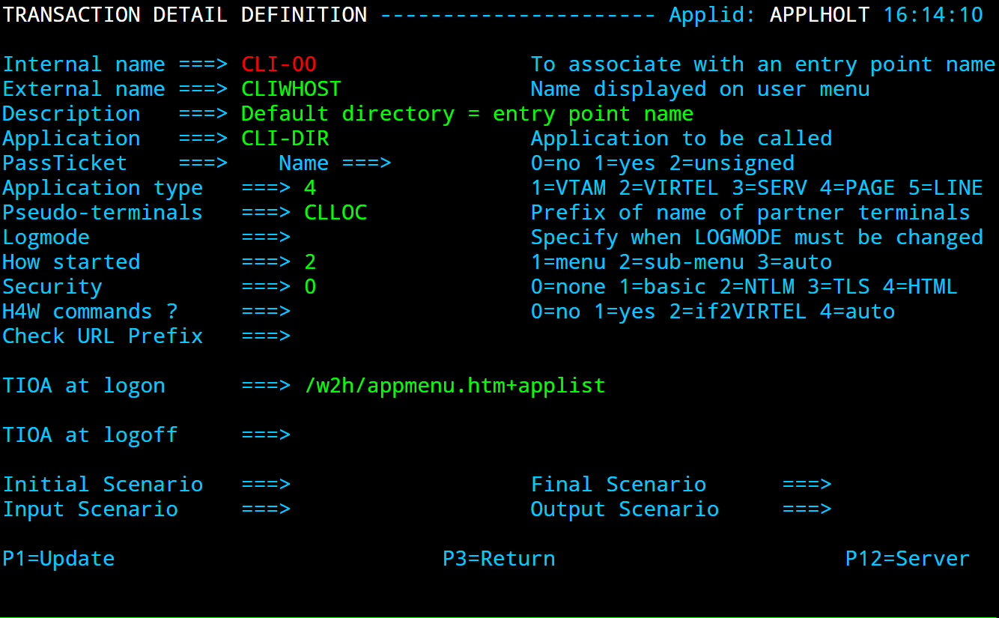
Configurable elements of Virtel
The diagram above describes the data flow between a TSO user accessing TSO on the mainframe. To support this session various Virtel configurable elements, which are maintained in the ARBO file, are used. The Virtel line definition represents an open port in TCP/IP which is the target of the browser’s URL. The Virtel line is associated with a Virtel Entry point which in turn is associated with a list of Virtel transactions. One of these transactions is a VTAM application definition representing TSO. The incoming URL determines the transaction to associate with this session call. In this example the transaction TSO has been identified in the URL string as a HTTP parameter. When the Virtel engine processes the incoming call it will establish a SNA session with the TSO VTAM application. From the TSO VTAM application perspective it will be as if a user had connected using a standard LU2 type terminal (3270). Virtel will convert datastreams between 3270 and HTML in support of the underlying session between the browser and TSO. This conversion process will use several Virtel terminal definitions; 1 or more to represent the browser and another to represent the VTAM interface with TSO. By convention “LOC” terminals reflect units of work in supporting the browser and “VTA” terminals represent the interface to the VTAM applications. Virtel terminal definitions are associated with a Virtel line.
Unloading Configurable Elements¶
The Virtel program VIRCONF can be used to LOAD or UNLOAD the ARBO VSAM file which contains the configurable elements. The default statements that are used to build the initial ARBO VSAM file are contained in the CNTL library as member ARBOLOAD. This member contains every statement that could potentially be used when defining the Virtel ARBO VSAM file, including optional statements which may not be applicable. To unload the default ARBO VSAM file run the following JCL:-
//VIRARBOU JOB 1,ARBOUNLD,CLASS=A,MSGCLASS=X,NOTIFY=&SYSUID
//*
//* THIS JOB UNLOADS AN ARBO FILE
//*
// SET LOAD=yourqual.VIRTnnn.LOADLIB
// SET ARBO=yourqual.VIRTnnn.ARBO
//*
//UNLOAD EXEC PGM=VIRCONF,PARM=UNLOAD
//STEPLIB DD DSN=&LOAD,DISP=SHR
//SYSPRINT DD SYSOUT=*
//SYSUDUMP DD SYSOUT=*
//VIRARBO DD DSN=&ARBO,DISP=SHR,AMP=('RMODE31=NONE')
//SYSPUNCH DD DSN=&SYSUID..VIRCONF.SYSIN,DISP=(,CATLG),
// UNIT=SYSDA,VOL=SER=??????,SPACE=(TRK,(5,1)),
// DCB=(RECFM=FB,LRECL=80,BLKSIZE=6080)
The ARBO UNLOAD Job
The output file contains all the default definitions that make up the configurable Virtel elements. These definitions can be used as a template for building new configurable elements such as lines, entry points, transactions, etc. See the VIRCONF utility section in the Virtel Installation Guide for further information on the VIRCONF utility and maintaining the VSAM ARBO file.
Line Element¶
The Line element is the main control element in the definition hierarchy. When Virtel receives a call in from a user, via their browser, it is targeted towards a particular port which is associated with a Line element. The Line element points to the default entry point and also identifies the listening port. By default, Virtel delivers two HTTP line elements in its default configuration. Line W-HTTP associated with port 41001 and Line C-HTTP associated with port 41002. Line W-HTTP(41001) is usually associated with administration functions and should be secured for administration use only. Line C-HTTP(41002) is an example of a line for for client applications. It is not advisable to use 41001 as your client port. USe 41002 or set-up another line using 41002 as a template, for example 41003.
 Line Detail Definition
Line Detail Definition
It is also defined in the Arbo Configuration statements:-
LINE ID=C-HTTP, -
NAME=HTTP-CLI, -
LOCADDR=:41002, -
DESC='HTTP line (entry point CLIWHOST)', -
TERMINAL=CL, -
ENTRY=CLIWHOST, -
TYPE=TCP1, -
INOUT=1, -
PROTOCOL=VIRHTTP, -
TIMEOUT=0000, -
ACTION=0, -
WINSZ=0000, -
PKTSZ=0000, -
RETRY=0010
The same information is reflected in both. The ARBO definitions are used to build the ARBO VSAM file which the Virtel Sub Applications access to display, modify and delete configuration elements. Another key item in the line definition is the TERMINAL prefix. This prefix is used to associate a line with the terminal definitions. In the example above the prefix of CL means that this line will only use terminal beginning “CL”.
Entry Point Element¶
The Entry point element is associated with a group of transactions. Transactions are the interface to external components like VTAM applications (CICS, TSO, IMS etc.) or external servers. Transactions are also used to define internal Virtel tasks and configuration elements like directory entries, upload programs, menu programs, signon programs. A line can be associated with any entry point defined within the configuration. Every line must have a default entry point. Virtel Rule definitions can be used to assign a different Entry point to a call in request based upon a range of criteria - incoming IP Address, Work Station Name, Userid etc.
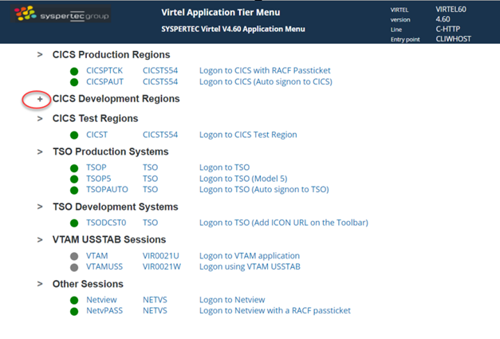 Entry Point Definition
It can also defined with the Arbo Configuration statements:-
ENTRY ID=CLIWHOST, -
DESC='HTTP entry point (CLIENT application)', -
TRANSACT=CLI, -
TIMEOUT=0720, -
ACTION=0, -
EMUL=HTML, -
SIGNON=VIR0020H, -
MENU=VIR0021A, -
IDENT=SCENLOGM, -
EXTCOLOR=E
The salient point in the Entry Point element is the TRANSACT prefix. This associates transactions with a particular Entry point. In the sample above transactions that begin with CLI will be associated with entry point CLIWHOST which is the default entry point for line C-HTTP(41002). An example of using an Entry point is that you might want to associate productions users with line 41004 and other users with line 41005. In this example you would define two new lines, set default entry points PRODHOST and USERHOST. In those entry point definitions the prefix for production transactions would PRD and for user transactions USR.
Transaction Element¶
Transactions define the programs that Virtel will run in order to support a session requirement. Transactions are normally identified within the incoming URL. For example the following URL requests that Virtel starts a Virtel transaction called CICS:-
http://192.168.170.33:41002/w2h/WEB2AJAX.htm+Cics
When the Virtel Engine receives this call-in it directs to line C-HTTP(41002) and established a session with the user’s browser. Session initiation begins with the downloading of various Virtel web elements such as templates, JavasSrcipt and CSS pages. The line will invoke a transaction called CICS which will be associated with the entry point defined for this call-in. This normally would be a transaction associated with the default entry point CLIWHOST. However, Virtel Rules may well associate a different entry point depending on call-in criteria. The transaction CICS is an external name, the Virtel Internal name for this transactions is CLI-10. It is the internal name that is related to the transaction prefix defined in the Entry Point.
 Transaction Definition
Transaction Definition
It can also defined with the Arbo Configuration statements:-
TRANSACT ID=CLI-10, -
NAME='Cics', -
DESC='Logon to CICS', -
APPL=SPCICST, -
TYPE=1, -
TERMINAL=CLVTA, -
STARTUP=1, -
SECURITY=1
The salient points here are the internal name or ID, CLI-10 which ties up with the Entry Point transaction prefix of transactions beginning “CLI”, the external name, “CICS” relates to the transaction name identified in the call-in URL. The APPL keyword identifies a name that will be used depending on the transaction type. The transaction type for this particular transaction definition is a VTAM transaction, TYPE=1. Virtel will attempt to logon to VTAM application identified by the VTAM APPL name SPCICST. The final point is the terminal prefix which identifies what Virtel terminals should be used to support this connection. In this instance the terminals must be prefixed with the characters “CLVTA”.
Terminal Elements¶
Terminal elements are used to support units of work within Virtel such as running a program, transmitting data to a browser, representing a VTAM LU to a VTAM APPLICATION. These are just a few examples. Terminal elements are defined to Virtel as either dynamic, static or pool. The following Summary Display lists the terminals delivered in the default installation.
 Terminal Definitions
Terminal Definitions
The terminal name is used to associate terminals with lines and transactions. In the example for the line C-HTTP(41002) we had a terminal prefix of CL. So terminals CLLOC000-CLLOC079 and CLVTA000-CLVTA079 will be associated with this line. Our Transaction CLI-10 requires a terminal whose prefix is CLVTA. CL terminals are allocated top down, meaning that the terminal allocated to the transaction will be the highest CLVTA079. The display shows that CLLOC000-CLLOC079 are static terminal entries. CLVTA000-CLVTA079 are dynamic entries and point to a pool called *W2HPOOL. Whenever a terminal is required from a pool the terminal name returned will be the first free terminal within the pool. Defining pool terminals is through the use of the Pool name in the terminal definition. So in the pool *W2HPOOL terminals whose name begin with W2HTP000-WH2HTP079 have been defined. So, when the TSO transaction is kicked off Virtel will request a terminal whose name begins CLVTA, CLVTA079 will be assigned. This will grab the first available terminal in the *W2HPOOL as that is where CLVTA points to. The first available terminal in the pool will be W2HTP000. Virtel always works from the lowest free name entry when returning pool entries.
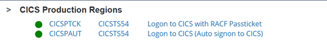 Terminal Pool definition
Terminal Definitions defined with Arbo configuration statements:-
TERMINAL ID=CLLOC000, Static Definition
DESC='HTTP terminals (no relay)',
TYPE=3,
COMPRESS=2,
INOUT=3,
STATS=26,
REPEAT=0050
TERMINAL ID=CLVTA000, Dynamic Definition
RELAY=\*W2HPOOL, <---- Use this pool
DESC='HTTP terminals (with relay)',
TYPE=3,
COMPRESS=2,
INOUT=3,
STATS=26,
REPEAT=0080
TERMINAL ID=W2HTP000, Pool definition
RELAY=REHVT000,
POOL=\*W2HPOOL, <---- Defines which pool
DESC='Relay pool for HTTP',
RELAY2=REHIM000,
TYPE=3,
COMPRESS=2,
INOUT=3,
STATS=26,
REPEAT=0080
In the case of logging onto CICS, the Virtel transaction will request a CLVTA terminal(CLVTA079) and terminal WH2TP000 will be returned from *W2HPOOL. This terminal has an association with a relay name represented by a VTAM terminal definition - in this case REHVT000. This relay name should be defined to VTAM. Also, this terminal definition has a 2nd relay called REHIM000. Again, this is a VTAM APPL definition which represents a SNA printer associated with the screen LU REHVT000. This name must also be defined to VTAM. REHIM000 is a relay name associated with the static terminal definitions beginning W2HIM000. In the logon to CICS we have three terminal names associated with the VTAM interface - CLVTA079, W2HTP000(REHVT000) and W2HIM000(REHIM000).
Here are the VTAM definitions:-
VIRTAPPL VBUILD TYPE=APPL
* ------------------------------------------------------------------ *
* Product : VIRTEL *
* Description : Main ACB for VIRTEL application *
* ------------------------------------------------------------------ *
APPLHOLT APPL EAS=160,AUTH=(ACQ,BLOCK,PASS,SPO),ACBNAME=APPLHOLT <---- VIRTEL ACB
* ------------------------------------------------------------------ *
* REHVTxxx : VTAM application relays for VIRTEL Web Access *
* ------------------------------------------------------------------ *
REHVT??? APPL AUTH=(ACQ,PASS),MODETAB=ISTINCLM,DLOGMOD=SNX32702,EAS=1 <---- Terminal Relay definitions
* ------------------------------------------------------------------ *
* REHIMxxx : Printer relays for VIRTEL Web Access terminals *
* ------------------------------------------------------------------ *
REHIM??? APPL AUTH=(ACQ,PASS),MODETAB=ISTINCLM,DLOGMOD=SCS,EAS=1 <--- Printer definitions SCS
REHIP??? APPL AUTH=(ACQ,PASS),MODETAB=ISTINCLM,DLOGMOD=DSILGMOD,EAS=1 <--- Printer definitions 3270
Example of configurable Elements
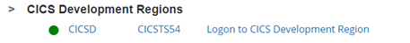
Adding new configurable elements¶
Adding new configurable elements can be online, through the Virtel Portal (Port 41001), or via batch using the VIRCONF util. The following is an example of adding a new interface to Virtel. The interface is line E-HTTP(41003) which uses entry point EDSHOST. Entry point EDSHOST has the following transactions:-
- EDS-00
Transaction to support the Entry Point. Must have an external name the same as the Entry Point. In this case EDSHOST. Identifies the default transaction. That being what transaction should be initiated is none is specified in the URL.
- EDS-03W
Point to the w2h directory where all the Virtel web artifacts are maintained. In this case the W2H directory.
- EDS-03X
Point to the directory that is associated with this line. This would contain customized web elements such as a company image or logo. The directory is EDS-DIR which has a pathname of /eds.
- EDS-04
Vtam transaction identifying SPCICST
- EDS-90
Application menu transaction used as the default transaction and identified in the TIOA string in transaction EDS-00
- W2H-80S
A transaction added to the W2H Entry point to support uploading web articfacts to the EDS-DIR. When adding a new diorectory to Virtel you must also add a new upload transaction to the W2H transaction group. The external name and logmsg of the transaction should identify the directory. For example in this case name = upleds and logmsg = EDS-DIR. If you do not specify this “upload” transaction the new directory will not appear in the administration portal display of in the directory summary display.
Apart from the LINE, Entry Point and Transaction there is one other configurable element which must also be added to support a new interface. This is the SUBDIR element. The SUBDIR element identifies a new directory.
//VIRTELV JOB 1,ARBOLOAD,CLASS=A,MSGCLASS=X,NOTIFY=&SYSUID
//*--------------------------------------------------------------*
//* *
//* ARBO MIGRATION. UPDATE ARBO TO ADD NEW ELEMENTS *
//* *
//* Change Description Release *
//* Create directory for poc test V460 *
//* *
//*--------------------------------------------------------------*
//*
// SET LOAD=VIRTEL.VIRT460.LOADLIB
// SET ARBO=VIRTEL.VIRT460.ARBO
//*
//CONFIG EXEC PGM=VIRCONF,PARM='LOAD,NOREPL',REGION=2M
//STEPLIB DD DSN=&LOAD,DISP=SHR
//SYSPRINT DD SYSOUT=*
//SYSUDUMP DD SYSOUT=*
//VIRARBO DD DSN=&ARBO,DISP=SHR
//SYSIN DD *
TERMINAL ID=EHLOC000, -
DESC='Psuedo Terminals', -
TYPE=3, -
COMPRESS=2, -
INOUT=3, -
REPEAT=0016
TERMINAL ID=EHVTA000, -
RELAY=*W2HPOOL, -
DESC='HTTP terminals (with relay)', -
TYPE=3, -
COMPRESS=2, -
INOUT=3, -
STATS=26, -
REPEAT=0016
SUBDIR ID=EDS-DIR, -
DESC='EDS directory', -
DDNAME=HTMLTRSF, -
KEY=EDS-KEY, -
NAMELEN=0064, -
AUTHUP=X, -
AUTHDOWN=X, -
AUTHDEL=X
ENTRY ID=EDSHOST, -
DESC='HTTP entry point (EDS application)', -
TRANSACT=EDS, -
TIMEOUT=0720, -
ACTION=0, -
EMUL=HTML, -
SIGNON=VIR0020H, -
MENU=VIR0021A, -
IDENT=SCENLOGM, -
SCENDIR=SCE-DIR, -
EXTCOLOR=E
TRANSACT ID=EDS-00, -
NAME=EDSHOST, -
DESC='Default Directory', -
APPL=EDS-DIR, -
TYPE=4, -
TERMINAL=EHLOC, -
STARTUP=2, -
SECURITY=0, -
TIOASTA='/w2h/appmenu.htm+applist'
TRANSACT ID=EDS-03W, -
NAME='w2h', -
DESC='W2H toolkit directory (/w2h)', -
APPL=W2H-DIR, -
TYPE=4, -
STARTUP=2, -
SECURITY=0
TRANSACT ID=EDS-03X, -
NAME='eds', -
DESC='EDS directory (/eds)', -
APPL=EDS-DIR, -
TYPE=4, -
STARTUP=2, -
SECURITY=0
TRANSACT ID=EDS-04, -
NAME='CICS', -
DESC='CICS', -
APPL=SPCICST, -
TYPE=1, -
TERMINAL=EHVTA, -
STARTUP=1, -
SECURITY=0
TRANSACT ID=EDS-90, -
NAME='applist', -
DESC='List of applications for appmenu.htm', -
APPL=VIR0021S, -
TYPE=2, -
TERMINAL=EHLOC, -
STARTUP=2, -
SECURITY=1
TRANSACT ID=W2H-80S, -
NAME='upleds', -
DESC='Upload macros (EDS-DIR directory)', -
APPL=VIR0041C, -
TYPE=2, -
TERMINAL=DELOC, -
STARTUP=2, -
SECURITY=1, -
LOGMSG=EDS-DIR
LINE ID=E-HTTP, -
NAME=HTTP-EDS, -
LOCADDR=:41003, -
DESC='HTTP line (entry point EDSHOST)', -
TERMINAL=EH, -
ENTRY=EDSHOST, -
TYPE=TCP1, -
INOUT=1, -
PROTOCOL=VIRHTTP, -
TIMEOUT=0000, -
ACTION=0, -
WINSZ=0000, -
PKTSZ=0000, -
RETRY=0010
Configuration statements to add a new interface
After running the VIRCONF utility check to make sure that the condition code is zero and that all elements have been added.
Administration¶
The VIRTEL system administrator uses a set of programs called sub-applications to display and update the various elements in the VIRTEL configuration. The sub-applications are invoked via the Configuration Menu or the Sub- Application Menu. The Configuration Menu, introduced in VIRTEL version 4.27, provides access to the most commonly- used sub-applications required for VIRTEL Web Access and XOT. It is invoked from the VIRTEL Multi-Session menu via a transaction which calls module VIR0022. The Sub-Application Menu, invoked from the Configuration Menu, gives access to all of the sub-applications, including those rarely used today.
If you log on to VIRTEL in 3270 mode using the default entry point (“PC”), the VIRTEL Multi-Session menu offers the choice F1 – Admin to invoke the Configuration Menu.
The first screen you will see is the Multi-Session menu:
 The VIRTEL Multi-Session menu
The VIRTEL Multi-Session menu
Press [F1] to display the Configuration Menu:
Lines¶
Introduction¶
The “Line” is one of the basic elements of the VIRTEL configuration. A line represents a connection between VIRTEL and another network element: an NPSI MCH, an X25 router, an X25 application (GATE, PCNE), a CICS system, a VIRNT server, an SMTP server; alternatively, a line can represent a VIRTEL server (HTTP, SMTP) listening on a TCP/IP port. VIRTEL call routing is performed by sets of interrelated definitions. A call arriving on a line is processed by a set of rules which assign an entry point. The entry point contains a set of transactions which indicate the application or external server which will process the call. An external server refers to one or more lines on which the call may exit from VIRTEL. Each type of entity (lines, terminals, entry points, external servers) is defined by a separate sub-application but it is often useful to have an overall view of all the related definitions.
This chapter describes all the functions associated with the definition of lines using the Line Management sub-application. A detailed example will be presented later in this chapter for each type of line.
Line Management Sub-Applications¶
This sub-application facilitates the definition of X25 and Reverse X25 lines, APPC connections, and TCP/IP lines. When the sub-application is started, it first displays a summary of existing definitions in alphanumeric order. The Line Management sub-application is invoked by pressing [PF1] in the Configuration Menu, by pressing [PF14] in the Sub-Application Menu, or via the Multi-Session Menu using a transaction which calls module VIR0046. This sub- application allows the management of all the line parameters under VIRTEL control.
Security¶
When the security subsystem is active, access to Line Management sub-application from the Configuration Menu or the Sub-Application Menu is controlled by the resource $$LINE$$. When accessed by a transaction, normal transaction security rules will apply. Security management and securing access to sub-applications is described in the VIRTEL Installation Guide.
Summary Display¶
The first screen shows a summary of existing line definitions in alphanumeric order:
 Line Summary Display
Line Summary Display
Detail Display¶
The Line detail display is accessed from the Line summary screen via PF12(EDIT) on a selected line identified by the cursor position. The screen shows a line detail display.
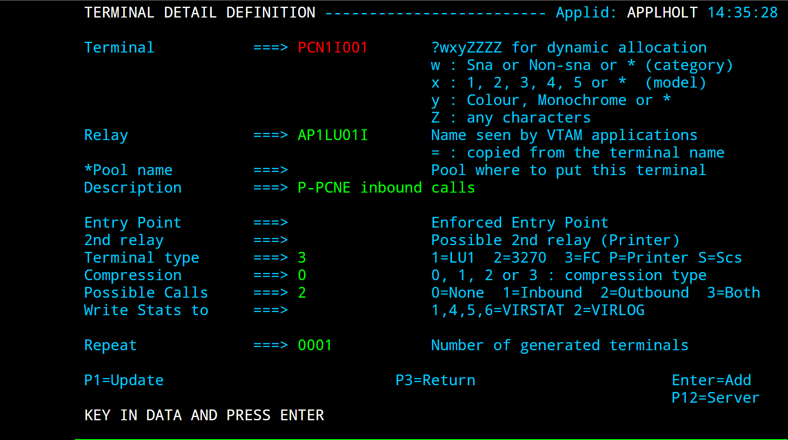 Line Detail Display
Navigation¶
- [PF1]
Update fields.
- [PF3]
Return to Line Summary Display.
- [PF4]
Display associated terminals.
- [PF5]
Display associated rules.
- [ENTER
Add new line or update fields of current line.
Parameters¶
- Internal name
Internal name of the line. This is the name by which VIRTEL refers to the line internally. It must be unique within a VIRTEL instance.
- External name
External name of the line. This name appears in certain console messages. It can be used, for example, to display the real name of the line or link.
- Remote ident
This field contains the name or address of the remote partner. Usage depends on the line type and protocol. The contents of this field are described for each line type in the detailed examples which follow.
- Local ident
This field contains the name or address used by VIRTEL. Usage depends on the line type and protocol. The contents of this field are described for each line type in the detailed examples which follow.
For an IP connection, this field represents the listening port opened by VIRTEL. In the ARBO definitions it is defined by the LOCADDR= keyword. The port can be specified in any of the following forms:
- : ppppp
VIRTEL opens port ppppp on the default home IP address of the host TCP/IP. For example, :41002
- nnn.nnn.nnn.nnn: ppppp
VIRTEL opens port ppppp on the indicated IPV4 address. nnn.nnn.nnn.nnn must be a valid HOME address defined in the host TCP/IP. For example, 192.168.0.100:41002
- [IPV6 Address]: ppppp
VIRTEL opens port ppppp on the indicated IPV6 address. [IPV6] must be a valid IPV6 address defined within the square brackets. For example, [fd10:15c1:1921:1000::129]:41002
- dns_name: ppppp
Virtel opens port ppppp on the IP address associated with the DNS name. For example, myvirtel.syspertec.com:41002
- 0: ppppp
VIRTEL opens port ppppp without associating itself with a particular IP address. VIRTEL can receive calls on any HOME address defined in the host TCP/IP. For example, 0:2048 (or 0.0.0.0:41002)
The combination of IP address and port number must be unique. No two VIRTELs can contain a TCP/IP line with the same IP address and port number, except that:
multiple VIRTELs can use a single distributed VIPA address, provided that the address is defined with a non-zero value for the TIMEDAFFINITY parameter.
multiple XOT lines within a single VIRTEL can listen on the same IP address and port number, providing that this same address and port number are not used by another VIRTEL.
Note
Note that the use of port numbers less than 1024 may require authorization in the profile of the TCP/IP stack (see for example the RESTRICTLOWPORTS, PORT, and PORTRANGE parameters of the z/OS Communications Server). In general, port numbers 1024 and above do not require authorization.
The default IP address can be specified via the IP= parameter of the Virtel startup JCL. This can be an IPV4, IPV6 or DNS name. Two access a single instance of Virtel with both IPV4 and IPV6 addresses you will have two define separate lines, one for the IPV4 connect and another for IPV6 connections.
LINE ID=C-HTTP4,LOCADDR=virtel_dns1pv4_name:41002,TERMINAL=C4... TERMINAL ID=C4LOC000,DESC='HTTP terminals via IPV4 - no relay'..... TERMINAL ID=C4VTA000,DESC='HTTP terminals via IPV4 relay'..... .... LINE ID=C-HTTP6,LOCADDR=virtel_dns1pv6_name:41002,TERMINAL=C6... TERMINAL ID=C6LOC000,DESC='HTTP terminals via IPV6 - no relay'..... TERMINAL ID=C6VTA000,DESC='HTTP terminals via IPV6 relay'.....
- Description
Free-form description with no particular significance or syntax requirement, except for SMTP lines (see the detailed example of an SMTP line which follows).
- Prefix
Terminal prefix associated with the line. As a general rule, the terminal prefix is a required field. It allows VIRTEL to associate a series of terminals to a line. Two lines cannot share the same group of terminals. The particular details of this field are described for each line type in the detailed examples which follow.
- Pool
The name of a logical pool of terminals associated with the line. This pool is used for HTTP connections without predefined terminals (see “HTTP connections with non-predefined LU names”,). In all other cases this field can be left blank.
- Entry Point
Defines the default entry point used by the line. This is a required field for HTTP and SMTP lines. It is optional in all other cases.
- Rule Set
The name of the rule set used by this line. The same rule set can be used by more than one line. If this field is blank, no rules are used. Rules are described in detail in section .
For compatability with VIRTEL versions prior to 4.26, the rule set name is usually the same as the internal name of the line.
- Line type
Defines the category to which the line belongs. VIRTEL supports the following categories of lines:
- X25 lines
Represented by the values GATE or FASTC
Support for this type of line is governed by the presence of the parameters MINITEL=YES, GATE=GENERAL and possibly FASTC=YES in the VIRTCT.
- Reverse-X25 lines
Represented by the values /GATE, /FASTC, or /PCNE
Support for this type of line does not require any special parameters in the VIRTCT.
- APPC lines
Represented by the values APPC1 or APPC2.
APPC1 represents a link with a BATCH environment
APPC2 represents all other types of APPC link with partners such as CICS or NT. Support for this type of line does not require any special parameters in the VIRTCT.
- TCP/IP lines
Represented by the values TCP1 or TCP2.
Support for this type of line is governed by the presence of the parameter TCP1 or TCP2 in the VIRTCT. Used for HTTP, SMTP, ICONNECT, XOT, NATIVE, VIRPESIT, VIRNEOX, or VIRPASS TCP lines.
- Cross-memory lines
Represented by the values XM1 or XM2
Support for this type of line is governed by the presence of the parameter XM1 or XM2 in the VIRTCT. Used for VIRPASS XM lines.
- MQSeries lines
Represented by the values MQ1 or MQ2
Support for this type of line is governed by the presence of the parameter MQ1 or MQ2 in the VIRTCT.
- Batch lines
Represented by the values BATCH1 or BATCH2
Support for this type of line is governed by the presence of the parameter BATCH1 or BATCH2 in the VIRTCT.
- Possible calls
Determines which calls can be made on this line. Since the line management interface is common to all types of lines, all values between 0 and 3 are accepted.
In addition to being used to authorize incoming, outgoing, or both incoming and outgoing calls, this parameter also has an effect during VIRTEL startup. Any line which has “Possible calls” set to 0 will not be activated at VIRTEL startup. Also note the“Possible calls” field in the definition of the associated terminals.
- Startup prerequisite
Allows conditional startup of the line. If this field is blank, VIRTEL starts the line automatically at system startup.
- WAIT-LINE(n-xxxxxx)
Waits for line n-xxxxxx to start. The name specified can be either the internal or external name of the other line.
- WAIT-MINUTES(nn)
Waits nn minutes after system startup before starting this line.
- WAIT-COMMAND
Waits for a console command LINE=linename,START (see “List of commands” in the VIRTEL Audit And Performance Guide)
- WAIT-PARTNER
Waits until VIRTEL receives an SNA BIND command from its partner LU.
- MIMIC-LINE(n-xxxxxx)
specifies that this line starts and stops in synchronisation with line n-xxxxxx. The name specified can be either the internal or external name of the other line.
- Protocol program
Indicates the protocol used for a TCP, XM, or MQ type line. The following values are valid for a TCP line:
- HTTP or VIRHTTP
For an HTTP line
- NATIVE2(P) or NATIVE4(P)
For a line in native TCP/IP mode
- SMTP or VIRSMTP
For an SMTP line
- ICONNECT
For a RESUME TPIPE connection with IMS Connect
- VIRPASS
For a VIRPASS TCP connection with an VIRNT or VIRKIX system
- VIRPESIT
For a TCP connection with a file transfer program such as CFT/IP
- VIRNEOX
For a TCP connection with a remote program using the VIRNEOX protocol
- XOT or VIRXOT
For an XOT line
The following values are valid for an XM line:
- VIRPASS
For a VIRPASS XM connection with a VIRKIX system running on the same MVS
The following values are valid for an MQ line:
- RAW
For communication via an MQSeries message queue
- PREFIXED or PREFIX12
For communication via an MQSeries message queue. This is similar to the RAW protocol except that VIRTEL adds 12 bytes of additional context information for the application program.
- PREFIX20
For communication via an MQSeries message queue. This is similar to the RAW protocol except that VIRTEL adds 20 bytes of additional context information for the application program.
Note
This field must not be completed for lines whose type is APPC1, APPC2, GATE, FASTC, /GATE, /FASTC, or /PCNE.
- Security program
Reserved for future use.
- Time out
Inactivity time in seconds after which the action specified in the following field will be taken. The value 0 inhibits the time out.
- Action if T/O
Action taken if a time out occurs. 0 = no action
1 = keepalive
- KEEPALIVE
is a message sent by the TCP/IP stack, during periods of inactivity, to check whether the connection has been broken. The value 1 is thus only valid for lines of type TCP. After a certain number of KEEPALIVE messages have been sent without being acknowledged by the partner (the number is determined by the TCP/IP stack), the session will be considered unusable and the connection will be terminated.
- OS/390 and z/OS
KEEPALIVE must also be activated in the PROFILE of the TCP/IP stack (refer to parameters KEEPALIVEOPTIONS or TCPCONFIG INTERVAL). For z/OS V1R7 and later, the time out value specified in the preceding field determines the interval between KEEPALIVE messages. If the time out value is zero then the default TCPCONFIG INTERVAL will be used. For OS/390 and z/OS prior to V1R7, the TCP/IP stack uses a single KEEPALIVE interval which applies to all sessions, and the time out value specified in the preceding field is ignored.
- TCP/IP for VSE
KEEPALIVE is managed globally by the TCP/IP command SET PULSE_TIME, and the parameters “Time Out” and “Action=1” are ignored.
- Window
Window size at the packet level. This parameter is meaningful only for X25 (GATE or FASTC) and XOT lines.
Must correspond with your X25 service provider subscription, or with the X25 switch parameters if this type of equipment is used.
- Packet
Packet size. Usually 128. This parameter is meaningful only for X25 (GATE or FASTC) and XOT lines.
Must correspond with your TRANSPAC subscription, or with the X25 switch parameters if this type of equipment is used.
Replaces the PACKET global parameter in the VIRTCT for versions prior to 4.0.
- Pad
This parameter is meaningful only for X25 GATE non Fast-Connect lines and AntiGATE lines.
- INTEG
Data without X’00’ prefix
- TRANSP
Data with prefix
- NO
Data with prefix
Must correspond with the NPSI parameters, or with the X25 switch parameters if this type of equipment is used.
- Tran
This parameter is meaningful only for Reverse-X25 AntiPCNE lines. Specifies whether EBCDIC/ASCII translation occurs.
- EVEN
ASCII data from the network is translated to EBCDIC when presented to the application, and vice versa (Even Parity)
- ODD
Ditto (Odd Parity)
- NO
No ASCII/EBCDIC translation
- Retries
Number of attempts to reacquire auto-activated terminals during VIRTEL startup. The delay between attempts is specified by the “Delay” parameter.
- Delay
Interval in seconds between attempts to reacquire terminals. The default delay is 2 seconds.
Line Overview Sub-Application¶
The Lines Overiew display presents an overall view and allows the administrator to zoom in on individual definitions to display and optionally modify the detailed definition. Missing definitions (those referenced by another entity but not defined in the configuration) are highlighted in red. This sub-application allows the administrator to display and optionally modify the various entities associated with each line defined in the VIRTEL configuration. The Lines Overview sub-application is invoked by pressing [PF8] at the Configuration Menu, by pressing [PF15] at the Sub-Application Menu, or via the Multi-Session using a transaction which calls module VIR0049.
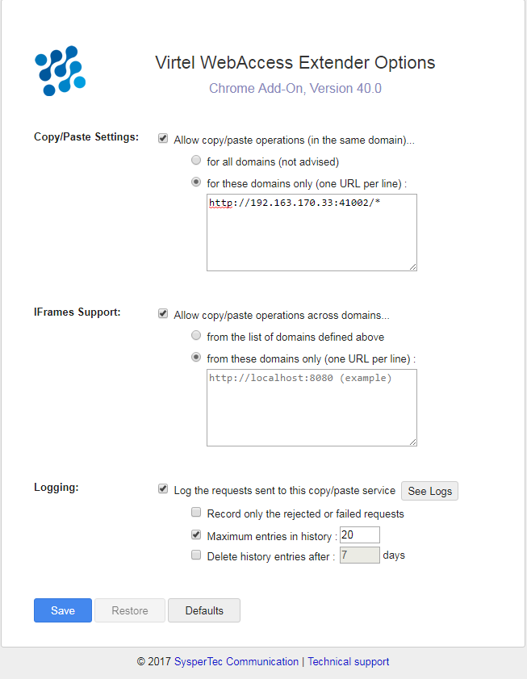 Lines overview summary display
HTTP Inbound line¶
When an HTTP line is started, VIRTEL becomes an HTTP server, authorising connections from a web browser to applications at the host site. Activation of this type of line is subject to the presence of the TCP1 parameter in the VIRTCT, as well as to a definition providing linkage to a file containing the HTML pages.
 Definition of an HTTP line
Definition of an HTTP line
- Remote ident
Always blank.
- Local ident
This is the VIRTEL IP address and port number which browser users must specify in order to connect to VIRTEL. If the port number is omitted then the default is port 80. See the description of the “Local ident” field under the heading “Line Parameters”, for more details about how to code this field.
- Prefix
Terminal name prefix (see below).
- Entry Point
When defining an HTTP line, it is obligatory to define a default entry point. This entry point will be used for all incoming calls which do not match any of the rules of the line. The entry point contains a list of transactions, and these transactions determine which directories are used to retrieve the HTML pages, and which 3270 applications are accessible to the user.
Note
According to the type of application accessed, each transaction must refer to one of the terminal sub-groups associated with the HTTP line (see ”HTTP terminals” below).
- For type 1 (Application) transactions
The prefix will be that of the terminal sub-group with an associated relay.
- For type 2 (Virtel) or type 4 (Page) transactions
The prefix will be that of the terminal sub-group without an associated relay.
- For type 3 (Server) transactions
No terminal prefix is required.
- Line type
One of the TCP/IP protocols defined in the VIRTCT, for example TCP1.
- Possible calls
Specify 1 (incoming calls only) to indicate that this line represents a listening port where VIRTEL is acting as an HTTP server.
For the case where VIRTEL acts as an HTTP requester, refer to the following section “Definition of a HTTP Outbound line”.
- Protocol
VIRHTTP or HTTP.
- Window
Always 0.
- Packet
Always 0.
- Pad
Always blank.
- Tran
Always blank.
Terminal Definitions¶
An HTTP line uses two sub-groups of type-3 terminals having a common prefix (in this case CL). Each terminal in the first sub-group represents one session between the client browser and VIRTEL; no relay is configured for this sub-group. Each terminal in the second sub-group represents one session between VIRTEL and a host application; in this sub-group, either a relay must be configured for each terminal, or the sub-group must refer to “logical pool of relays”. Whichever method is chosen, each relay must be defined by an APPL statement in a VTAM node of type APPL. Either explicit or repeated terminal definitions may be used.
Press [PF4] at the HTTP line detail definition screen to display the list of associated terminals whose prefix matches the prefix specified in the line definition. If the terminals refer to a logical pool, the pool itself may have a different prefix and will therefore not be displayed. In this case you can press [PF2] at the Configuration Menu to display a list of all terminals.
The example below shows the terminals for two HTTP lines which share a logical pool of relays. This list was displayed by pressing [PF2] at the Configuration Menu. The terminals with prefix CL belong to line C-HTTP, while the terminals with prefix DE belong to line W-HTTP. For line C-HTTP, the first sub-group consists of terminals CLLOC000-049 without a relay. The second sub-group consists of terminals CLVTA000-079 which refer to a logical pool of relays named
*W2HPOOL. For line W-HTTP, the first sub-group is DELOC000-009, and the second sub-group is DEVTA000-015 which also refers to the logical pool named *W2HPOOL. The logical pool itself consists of terminals W2HTP000-015 whose relay LU names are REHVT000-079. The logical pool also refers to a pool of associated printer LU’s. The printers are defined with terminal names W2HIP000-079 and LU names REHIP000-079. In each case, the terminal name is an internal name used only within VIRTEL, while the relay name is an LU name defined by a VTAM APPL statement. The relay LU name is the name by which the terminal is known to CICS or other VTAM applications.
 Terminals associated with an HTTP line
Terminals associated with an HTTP line
 HTTP terminals without relay
HTTP terminals without relay
 HTTP terminals with relay
HTTP terminals with relay
 logical pool of relays for HTTP
logical pool of relays for HTTP
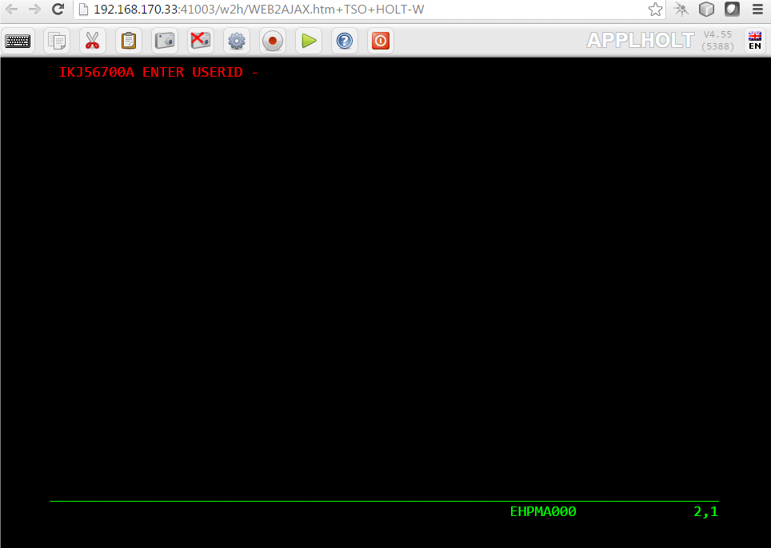 Associated printer relays for HTTP
Refer to the VIRTEL Web Access Guide for further information about printers.
VTAM Terminal Definitions¶
HTTP relay LU’s must be defined to VTAM by means of APPL statements in an application major node, as shown in the following example:
C52VIRTM VBUILD TYPE=APPL
* ------------------------------------------------------------------ *
* RHTVTxxx : Relay for VTAM appl accessed by WEB to HOST *
* ------------------------------------------------------------------ *
RHTVT000 APPL AUTH=(ACQ,PASS),MODETAB=ISTINCLM,DLOGMOD=SNX32702,EAS=1
RHTVT001 APPL AUTH=(ACQ,PASS),MODETAB=ISTINCLM,DLOGMOD=SNX32702,EAS=1
RHTVT002 APPL AUTH=(ACQ,PASS),MODETAB=ISTINCLM,DLOGMOD=SNX32702,EAS=1
RHTVT003 APPL AUTH=(ACQ,PASS),MODETAB=ISTINCLM,DLOGMOD=SNX32702,EAS=1
* ------------------------------------------------------------------ *
* RHTIPxxx : Printer relays for WEB to HOST terminals *
* ------------------------------------------------------------------ *
RHTIP000 APPL AUTH=(ACQ,PASS),MODETAB=ISTINCLM,DLOGMOD=DSILGMOD,EAS=1
RHTIP001 APPL AUTH=(ACQ,PASS),MODETAB=ISTINCLM,DLOGMOD=DSILGMOD,EAS=1
RHTIP003 APPL AUTH=(ACQ,PASS),MODETAB=ISTINCLM,DLOGMOD=DSILGMOD,EAS=1
RHTIP004 APPL AUTH=(ACQ,PASS),MODETAB=ISTINCLM,DLOGMOD=DSILGMOD,EAS=1
VTAM definitions for HTTP terminals
CICS Definitions¶
The HTTP relay LU’s must also be defined to CICS, as shown in the following example:
* VIRTEL 3270 TERMINALS FOR WEB2HOST
DEFINE TERMINAL(T000) GROUP(VIRTEL) TYPETERM(DFHLU2E2)
NETNAME(RHTVT000) PRINTER(I000)
DESC(VIRTEL WEB TO HOST TERMINAL)
DEFINE TERMINAL(T001) GROUP(VIRTEL) TYPETERM(DFHLU2E2)
NETNAME(RHTVT001) PRINTER(I001)
DESC(VIRTEL WEB TO HOST TERMINAL)
DEFINE TERMINAL(T002) GROUP(VIRTEL) TYPETERM(DFHLU2E2)
NETNAME(RHTVT002) PRINTER(I002)
DESC(VIRTEL WEB TO HOST TERMINAL)
DEFINE TERMINAL(T003) GROUP(VIRTEL) TYPETERM(DFHLU2E2)
NETNAME(RHTVT003) PRINTER(I003)
DESC(VIRTEL WEB TO HOST TERMINAL)
* VIRTEL 3284 PRINTERS FOR WEB2HOST
DEFINE TERMINAL(I000) GROUP(VIRTEL) TYPETERM(DFHLU3)
NETNAME(RHTIP000)
DESC(VIRTEL WEB TO HOST PRINTER)
DEFINE TERMINAL(I001) GROUP(VIRTEL) TYPETERM(DFHLU3)
NETNAME(RHTIP001)
DESC(VIRTEL WEB TO HOST PRINTER)
DEFINE TERMINAL(I002) GROUP(VIRTEL) TYPETERM(DFHLU3)
NETNAME(RHTIP002)
DESC(VIRTEL WEB TO HOST PRINTER)
DEFINE TERMINAL(I003) GROUP(VIRTEL) TYPETERM(DFHLU3)
NETNAME(RHTIP003)
DESC(VIRTEL WEB TO HOST PRINTER)
This job is supplied in member CSDW2H of the VIRTEL SAMPLIB.
HTTP Outbound line¶
An HTTP Outbound line allows VIRTEL to act as an HTTP requester. Activation of this type of line is subject to the presence of the TCP1 parameter in the VIRTCT.
By means of the OPTION$ FOR-HTTP and SEND$ TO-LINE instructions, a VIRTEL scenario can make requests to the remote HTTP server whose address is specified in the HTTP Outbound line definition. Multiple HTTP Outbound lines may be defined to allow requests to be sent to different HTTP servers. Refer to “VIRTEL Web Modernisation Scenarios” in the VIRTEL Web Access Guide for examples of the OPTION$ FOR-HTTP instruction. The $SITE$ defines the IP address of the outbound server. It is passed via a sceanrio. See the OPTION$ FOR-HTTP scenario instruction.
 Definition of an HTTP Outbound line
Definition of an HTTP Outbound line
Parameters¶
- Internal name
Must be unique.
- External name
Should be unique. Either the internal name or the external name may be specified in the SEND$ TO-LINE instruction in the scenario.
- Remote ident
This is the IP address and port number of the remote HTTP server. The format is nnn.nnn.nnn.nnn:pppp where nnn.nnn.nnn.nnn is the IP address and pppp is the port number. The port number (normallyport 80) must be specified, there is no default.
The remote HTTP server may also be specified by its DNS name and port number, for example webservices.mycompany.com:80
The special value $SITE$ indicates that the name and port number of the remote HTTP server are specified in the SITE parameter of the OPTION$ FOR-HTTP instruction.
- Local ident
$NONE$ indicates that VIRTEL will not open a listening port for this line.
- Prefix
Leave blank. No terminals are required for an HTTP Outbound line.
- Line type
One of the TCP/IP protocols defined in the VIRTCT, for example TCP1.
- Possible calls
Specify 2 to indicate that this line is used for outbound calls.
- Protocol
VIRHTTP or HTTP.
HTTP Outbound SMTP line¶
An SMTP line establishes a TCP/IP link between VIRTEL and an external SMTP server. The external SMTP server receives outgoing mail from VIRTEL for distribution to users. The SMTP line also defines the characteristics of VIRTEL’s internal SMTP server which receives incoming mail sent to VIRTEL. The activation of this type of line requires the presence of the TCP1 parameter in the VIRTCT.
- ..note::
In case of SMTP problems, use the command F VIRTEL,TRACE,L=S-SMTP to trace the dialog between VIRTEL and the SMTP server. The trace output is written to SYSPRINT or SYSLST.
 SMTP line definition
SMTP line definition
Parameters¶
- Remote ident
This field is required and represents the IP address and port number of the SMTP server to which VIRTEL sends outgoing mail.
- Local ident
The IP address and port number on which VIRTEL listens for incoming mail. For details of how to code this field, refer to “Local ident” under the heading “Line Parameters”,.
- Description
The sender name generated in outgoing e-mails. Not used for incoming e-mails.
Generally, the description field does not contain any significant information. However, in the case of an SMTP line, the contents of this field are used by VIRTEL.
The description field for an SMTP line must be in a specific format. It must contain a domain name, followed by an e-mail address enclosed in angle brackets (characters “<” and “>”). Everything up to the first angle bracket is the operand of the HELO command which VIRTEL sends to the SMTP server. The e-mail address in angle brackets is the default operand of the MAIL FROM command which VIRTEL sends to the SMTP server. This default e-mail address can optionally be overridden by the sending application by means of the FAD4 structured field. The e-mail address used will normally need to be defined to the SMTP server.
- Prefix
Terminal name prefix (see below).
- Entry Point
When defining an SMTP line, it is obligatory to define a default entry point. This entry point will be used for all incoming calls which do not match any of the rules of the line.
Entry points for use with SMTP lines are described under the heading “Incoming E-mails” in the VIRTEL Web Access Guide.
- Line type
One of the TCP/IP protocols defined in the VIRTCT, for example TCP1.
- Possible calls
Direction of calls.
The value 3 must be used in order to allow exchanges in both directions between VIRTEL and the partner SMTP server.
- Protocol
Always SMTP.
- Window
Always 0.
- Packet
Always 0.
- Pad
Always blank.
- Tran
Always blank.
SMTP terminals
By pressing [PF4], the list of terminals associated with the SMTP line will be displayed. An SMTP line uses a single sub- group of type-3 terminals having a common prefix (in this case SM). The number of terminals defined determines the number of simultaneous SMTP sessions authorised. Either explicit or repeated Terminal Definitions may be used.
The example below shows a group of 16 SMTP terminals with associated relays:
 SMTP Terminal Definitions
SMTP Terminal Definitions
Terminal Definitions¶
- Terminal
The terminal name must match the prefix of the line.
- Relay
A relay LU must be specified if incoming e-mails are used to trigger the start of a CICS transaction (or another VTAM application). The relay LU’s must be defined by APPL statements in a VTAM application major node, as described below.
- Entry point
Leave blank. The entry point is defined in the line (or in the rules of the line) for this type of terminal.
- Type de terminal
Always 3.
- Compression
Always 2.
- Possible Calls
Always 3.
- Repeat
The number of terminals defined.
VTAM Terminal Definitions¶
RWSVT200 APPL AUTH=(ACQ,PASS),MODETAB=MODVIRT,DLOGMOD=DLOGREL
RWSVT201 APPL AUTH=(ACQ,PASS),MODETAB=MODVIRT,DLOGMOD=DLOGREL
RWSVT202 APPL AUTH=(ACQ,PASS),MODETAB=MODVIRT,DLOGMOD=DLOGREL
RWSVT203 APPL AUTH=(ACQ,PASS),MODETAB=MODVIRT,DLOGMOD=DLOGREL
VTAM definitions for SMTP relay LUs
CICS Definitions¶
Where incoming e-mails are used to trigger a CICS transaction (or other VTAM application), the SMTP relay LU’s must be defined by APPL statements in a VTAM application major node, as shown in this example:
DEFINE TYPETERM(SMTP3270) GROUP(VIRTSMTP)
DESCRIPTION(TYPETERM FOR SMTP PSEUDO-TERMINAL)
DEVICE(3270) TERMMODEL(2) SHIPPABLE(YES) RECEIVESIZE(16384)
PAGESIZE(24,80) DEFSCREEN(24,80) EXTENDEDDS(YES) QUERY(ALL)
TTI(YES) RELREQ(YES) DISCREQ(YES) LOGONMSG(NO) UCTRAN(NO)
DEFINE TERMINAL(SM00) GROUP(VIRTSMTP)
DESCRIPTION(PSEUDO-TERMINAL FOR SMTP)
TYPETERM(SMTP3270) NETNAME(RWSVT200) USERID(SPVIRSTC)
DEFINE TERMINAL(SM01) GROUP(VIRTSMTP)
DESCRIPTION(PSEUDO-TERMINAL FOR SMTP)
TYPETERM(SMTP3270) NETNAME(RWSVT201) USERID(SPVIRSTC)
DEFINE TERMINAL(SM02) GROUP(VIRTSMTP)
DESCRIPTION(PSEUDO-TERMINAL FOR SMTP)
TYPETERM(SMTP3270) NETNAME(RWSVT202) USERID(SPVIRSTC)
DEFINE TERMINAL(SM03) GROUP(VIRTSMTP)
DESCRIPTION(PSEUDO-TERMINAL FOR SMTP)
TYPETERM(SMTP3270) NETNAME(RWSVT203) USERID(SPVIRSTC)
IMS Connect line¶
An IMS Connect line establishes a TCP/IP connection between VIRTEL and IMS Connect using the RESUME TPIPE protocol. Once the connection is established, IMS application programs running in an MPP or BMP region can send requests to VIRTEL using the ICAL DL/I call. VIRTEL processes these requests by launching a customer-written scenario. The scenario can perform actions such as making an outbound HTTP call to a web service before returning the result to the IMS application program. Activation of this type of line requires the presence of the TCP1 parameter in the VIRTCT.
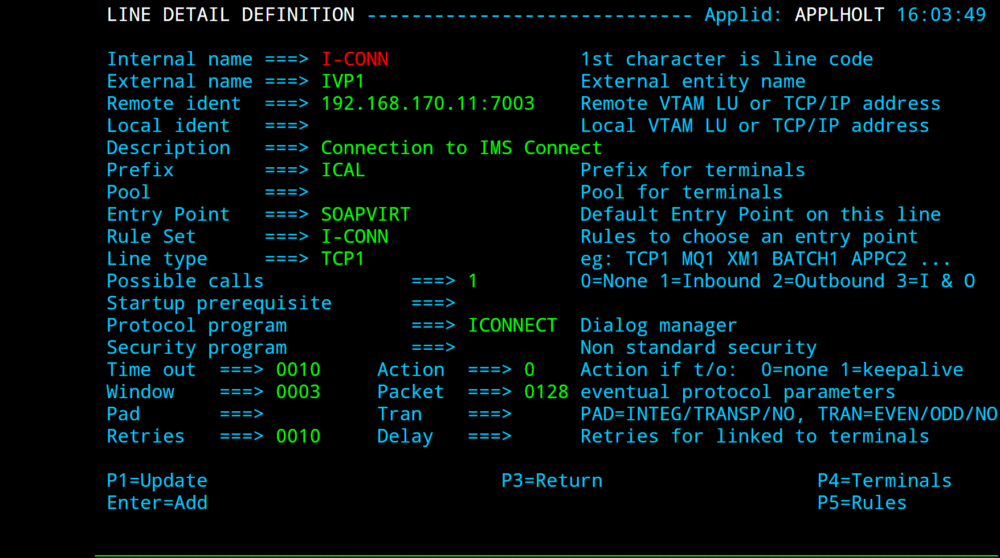 Definition of an IMS Connect line
Parameters¶
- Internal name
The VIRTEL internal name for this connection.
- External name
Must match the IMS destination id (IRM_IMSDestId).
- Remote ident
IP address of IMS Connect followed by the port number.
- Local ident
Leave blank.
- Prefix
Terminal name prefix (see below).
- Entry Point
The entry point name must match the IMS TPIPE name (IRM_CLIENTID).
- Line type
One of the TCP/IP protocols defined in the VIRTCT, for example TCP1.
- Possible calls
Always 1.
- Protocol
Always ICONNECT.
Terminals Definitions¶
Press [PF4] at the Line Detail Definition screen to display the list of terminals associated with an IMS Connect line. An IMS Connect line uses a single sub-group of type-3 terminals having a common prefix (ICAL in this example). No relays are defined for this type of line. The number of terminals defined determines the maximum number of simultaneous RESUME TPIPE sessions between VIRTEL and IMS Connect.
 Definition of terminals associated with an IMS Connect line
Definition of terminals associated with an IMS Connect line
- Terminal
The terminal name must match the prefix of the line.
- Relais
Leave blank.
- Entry point
Leave blank.
- Terminal Type
Always 3.
- Compression
Always 2.
- Possible calls
Always 1.
- Repeat
Number of terminals (RESUME TPIPE sessions) defined.
Entry Point¶
Each IMS Connect line must have an associated Entry Point whose name is specified in the line definition. An example is shown below:
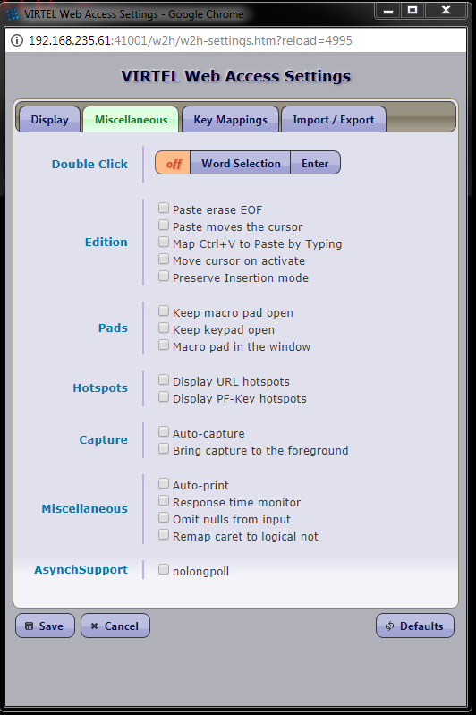 Definition of entry point associated with an IMS Connect line
- Name
The name of the entry point must match the IMS TPIPE name specified in the IRM_CLIENTID parameter of the IMS Connect definition.
- Transactions
Prefix of associated transaction names (see next section).
- Emulation
Always SCENARIO.
- Directory for scenarios
The name of the VIRTEL directory which contains the scenario(s) for processing requests from IMS.
Transactions¶
Each IMS Connect entry point must have one or more associated transactions. Press [PF4] at the Entry Point Detail Definition screen to display the list of transactions associated with an IMS Connect entry point. The transaction definition specifies the name of the scenario which will be invoked to process an incoming request from IMS. If the incoming request does not specify a transaction name, or if the specified transaction name is not defined in the entry point, then VIRTEL will invoke the transaction whose external name is the same as the entry point name. If there is no such default transaction, then the request is rejected and VIRTEL issues message VIRIC57E.
 Definition of a transaction associated with an IMS Connect entry point
Definition of a transaction associated with an IMS Connect entry point
- Internal name
Must match the transaction prefix specified in the entry point.
- External name
This is the transaction name specified by the IMS application in the message header. For the default transaction, the external name must be the same as the entry point name.
- Application
Always $NONE$.
- Application type
Always 2.
- Security
Always 0.
- TIOA at logon
Always &/S.
- Initial scenario
The name of the VIRTEL scenario which will process requests from IMS for this transaction.
Scenarios¶
When a scenario is invoked to process a request message from IMS connect, VIRTEL places the contents of the request message in the variable $INFILE$. After processing the message, the scenario returns a response message to IMS by means of the SEND$ AS-ANSWER instruction. By way of illustration, the simple example shown below converts the request message to uppercase before sending it back as a response message to IMS:
OTMACL SCREENS APPL=OTMACL
*
* Scenario for testing an IMS CONNECT connection
*
SCENARIO INITIAL
*
CONVERT$ EBCDIC-TO-UPPERCASE,VAR='$INFILE$'
SEND$ AS-ANSWER,VAR='$INFILE$',TYPE='TEXT'
*
SCENARIO END
*
SCRNEND
END
Example scenario for processing an IMS Connect request
..note:
More complex scenarios may be constructed with the aid of VIRTEL Studio.
Message format¶
Messages sent from an IMS application to VIRTEL may be prefixed by a 12-byte header. The format of the header is shown in the figure below:
Bytes |
Length |
EBCDIC |
Meaning |
|
|---|---|---|---|---|
0 - 3 |
4 |
/V1/ |
Identifies type of prefix |
|
4 - 11 |
8 |
xxxxxx |
Externql transaction name. Left justified and padded with blanks |
|
Format of an IMS Connect message header
All data following the header is treated as binary data which is passed to the scenario without translation in the $INFILE$ variable.
MQ line¶
An MQ line establishes a connection between VIRTEL and an MQSeries message queue. Each MQ line can receive messages from, or send messages to, one MQSeries message queue. Activation of this type of line requires the presence of the MQ1 or MQ2 parameter in the VIRTCT. The queue can be shared with another application (another VIRTEL for instance) or used in exclusive mode depending on its own definition.
Parameters¶
- Remote ident
For the RAW protocol: Leave blank.
For the PREFIXED, PREFIX12, and PREFIX20 protocols: The special value $REPLYTOQ indicates that outbound messages are sent to the destination indicated by the REPLYTOQ and REPLYTOQMGR parameters taken from the inbound message and saved in the 12- or 20-byte header.
- Local ident
The name of the MQSeries message queue. The queue name prefix specified in the MQn parameter of the VIRTCT will be added to the front of this name. Refer to “Parameters of the VIRTCT” in the VIRTEL Installation Guide for details of the MQn parameter.
- Prefix
Terminal name prefix (see below).
- Entry Point
Required for MQ input queue.
- Line type
One of the MQn protocols defined in the VIRTCT, for example MQ1.
- Possible calls
Specify one of the following values:
-1 = Input: VIRTEL receives messages from the MQSeries queue -2 = Output: VIRTEL writes messages to the MQSeries queue
- Protocol
RAW, PREFIXED, PREFIX12, or PREFIX20.
- Tran
Specify the way in which messages are processed on the line.
-STR = The messages are processed as MQFMT_STRING formatted messages. This will allow MQ to perform the appropriate character set translations between the communicating systems. To support this feature, the PTF5135 must be applied on the system.
-no value = The messages are processed as MQFMT_NONE formatted messages.
Navigation¶
Press [PF4] at the line definition screen to display the list of terminals associated with an MQ line. An MQ line uses a single sub-group of type-3 terminals having a common prefix (MQIN in this example). The number of terminals defined determines the maximum number of messages which can be processed simultaneously by VIRTEL.

Terminal Parameters¶
- Terminal
The terminal name must match the prefix of the line.
- Relais
Leave blank.
- Entry point
Leave blank.
- Terminal Type
Always 3.
- Compression
Always 2.
- Possible calls
Always 3.
- Repeat
Number of terminals defined.
Batch line¶
A batch line allows VIRTEL to process HTTP requests in batch mode. When a batch line is defined in the VIRTEL configuration, VIRTEL reads HTTP requests from an input sequential file at startup, processes the requests, writes the responses to an output sequential file, and shuts down. Activation of this type of line is subject to the presence of the BATCHn parameter in the VIRTCT.
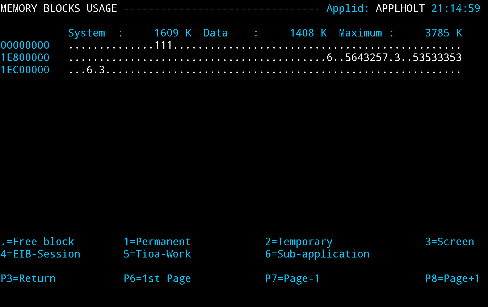
Parameters¶
- Remote ident
Always blank.
- Local ident
Always blank.
- Prefix
Terminal name prefix (see below).
- Entry Point
When defining a batch line, it is obligatory to define a default entry point. This entry point is similar to the entry point used for an HTTP line. The entry point contains a list of transactions, and these transactions determine which directories are used to retrieve page templates, and which 3270 applications are accessible to the batch requests.
Each transaction must refer to one of the terminal sub-groups associated with the batch line (see ”Batch terminals” below).
- For type 1 (Application) transactions:
The prefix will be that of the terminal sub-group with an associated relay.
- For type 2 (Virtel) or type 4 (Page) transactions
The prefix will be that of the terminal sub-group without an associated relay.
- For type 3 (Server) transactions
No terminal prefix is required.
- Line type
BATCH1 or BATCH2, corresponding to one of the BATCH parameters defined in the VIRTCT.
- Possible calls
Specify 1 (incoming calls only).
- Protocol
VIRHTTP or HTTP.
- Window
Always 0.
- Packet
Always 0.
- Pad
Always blank.
- Tran
Always blank.
Terminal Definitions¶
Like an HTTP line, a batch line uses up to two sub-groups of type-3 terminals having a common prefix (in this case BT1). Refer to “HTTP terminals” 26 for further details. If the batch requests do not require connection to a host VTAM application, then it is only necessary to define the first terminal sub-group (the sub-group without relays).
Press [PF4] at the line detail definition screen to display the list of associated terminals whose prefix matches the prefix specified in the line definition. Then press [PF12] to display the terminal detail definition. The example below shows the terminals for a batch line without relays:

Definition of terminals without relay for a batch line
Native TCP/IP Gateway line¶
VIRTEL can act as an IP-to-SNA gateway allowing existing VTAM applications to communicate with partner applications via the IP network. By connecting to a VIRTEL NATIVE TCP/IP port, a remote application can establish a TCP/IP session with VIRTEL and exchange messages with a host VTAM application using a simple record-oriented protocol.
The connection is always established by the remote TCP/IP application, but messages can flow in both directions. Each message exchanged between VIRTEL and the partner application is preceded by a two- or four-byte length field.
Typically the host application is a CICS application designed to communicate with banking terminals such as the IBM 3650.
The activation of this type of line requires the presence of the >TCP1 parameter in the VIRTCT.

Parameters¶
- Remote ident
Not used for a NATIVE TCP/IP line.
- Local ident
The IP address and port number on which VIRTEL listens for incoming connections from the partner application. For details of how to code this field, refer to “Local ident” under the heading “Line Parameters”.
- Prefix
Terminal name prefix (see below).
- Entry Point
The default entry point will be used for all incoming calls which do not match any of the rules of the line. Entry points for use with native TCP/IP lines must specify Emulation type $NONE$
- Line type
One of the TCP/IP protocols defined in the VIRTCT, for example TCP1.
- Possible calls
Specify 1 to allow inbound calls.
- Protocol
NATIVE2 or NATIVE2P for native TCP/IP protocol with a two-byte length field NATIVE4 or NATIVE4P for native TCP/IP protocol with a four-byte length field
- Packet
Specify a packet size sufficient to contain the largest message sent by either the host or the partner application, plus 2 or 4 bytes for the length field.
Line Terminals¶
By pressing [PF4], the list of terminals associated with the NATIVE TCP/IP line will be displayed. A NATIVE TCP/IP line uses a single group of type-3 terminals having a common prefix (VIP in this example). The number of terminals defined determines the number of simultaneous conversations authorised.
The example below shows a group of 4 NATIVE TCP/IP terminals:

Terminal Parameters¶
- Terminal
The terminal name must match the prefix of the line.
- Relay
Specify the name of the relay pool which defines the terminal LU names as seen by the VTAM application. The first character is an asterisk indicating that this is the name of a pool.
- Entry point
Leave blank. The entry point is defined in the line (or in the rules of the line) for this type of terminal.
- Terminal type
Always 3.
- Compression
Always 2.
- Possible Calls
Always 3.
- Repeat
The number of terminals defined.

{kind=link}
{kind=link}
{kind=link}
{kind=link}
{kind=link}
{kind=link}
VTAM terminals definitions¶
Relay LU’s must be defined to VTAM by means of APPL statements in an application major node, as shown in the following example:
VIRTAPPL VBUILD TYPE=APPL
* ------------------------------------------------------------------ *
* RVIPLU00 : VTAM relays for VIRTEL NATIVE TCP/IP terminals *
* ------------------------------------------------------------------ *
RVIPLU00 APPL AUTH=(ACQ,PASS),MODETAB=MODVIRT,DLOGMOD=DLOGREL
RVIPLU01 APPL AUTH=(ACQ,PASS),MODETAB=MODVIRT,DLOGMOD=DLOGREL
RVIPLU02 APPL AUTH=(ACQ,PASS),MODETAB=MODVIRT,DLOGMOD=DLOGREL
RVIPLU03 APPL AUTH=(ACQ,PASS),MODETAB=MODVIRT,DLOGMOD=DLOGREL
VTAM definitions for NATIVE TCP/IP relay LU’s
CICS Definitions¶
The NATIVE TCP/IP relay LU’s must also be defined to CICS, as shown in the following example:
DEFINE TYPETERM(DT3650) GROUP(VIRTEL)
DESC(3650 FOR VIRTEL TCP/IP)
DEVICE(3650) SESSIONTYPE(USERPROG)
SENDSIZE(1536) RECEIVESIZE(1536)
DEFINE TERMINAL(VR00) GROUP(VIRTEL) NETNAME(RVIPLU00)
DESC(VIRTEL NATIVE TCP/IP TERMINAL) TYPETERM(DT3650)
DEFINE TERMINAL(VR01) GROUP(VIRTEL) NETNAME(RVIPLU01)
DESC(VIRTEL NATIVE TCP/IP TERMINAL) TYPETERM(DT3650)
DEFINE TERMINAL(VR02) GROUP(VIRTEL) NETNAME(RVIPLU02)
DESC(VIRTEL NATIVE TCP/IP TERMINAL) TYPETERM(DT3650)
DEFINE TERMINAL(VR03) GROUP(VIRTEL) NETNAME(RVIPLU03)
DESC(VIRTEL NATIVE TCP/IP TERMINAL) TYPETERM(DT3650)
Message format¶
All messages sent on a NATIVE TCP/IP conversation are prefixed by a 2-byte or 4-byte header. The format of the header for the NATIVE2 protocol is shown in the figure below:
Bytes |
Length |
Meaning |
|---|---|---|
0 - 1 |
2 |
Message length in bytes, excluding the length field itself This is a 16-bit unsigned binary number in big-endian format (Most significant byte first) |
Format of NATIVE2 message header
The format of the header for the NATIVE4 protocol is shown in the figure below:
Bytes |
Length |
Meaning |
|---|---|---|
0 - 3 |
4 |
Message length in bytes, excluding the length field itself This is a 32-bit unsigned binary number in big-endian format (Most significant byte first) |
Format of NATIVE4 message header
All data following the header is treated as binary data which is passed to the CICS application without translation. The maximum message length is specified in the definition of the NATIVE TCP/IP line.
The variants NATIVE2P and NATIVE4P may be used if the terminal is defined to the application as a 3270 (LU2) device. In this case, VIRTEL will add the prefix X‘7D4040’ to inbound messages before sending them to the application, and will remove the 3270 prefix (for example X’F1C1’) from outbound messages before sending them to the terminal. The message format to the terminal is the same as described above for NATIVE2 and NATIVE4.
VIRPASS TCP line (VIRKIX)¶
Communication between VIRTEL and CICS can be established via APPC, TCP/IP, or Cross-memory. This section describes communications in TCP/IP mode using the VIRKIX program on the CICS side.
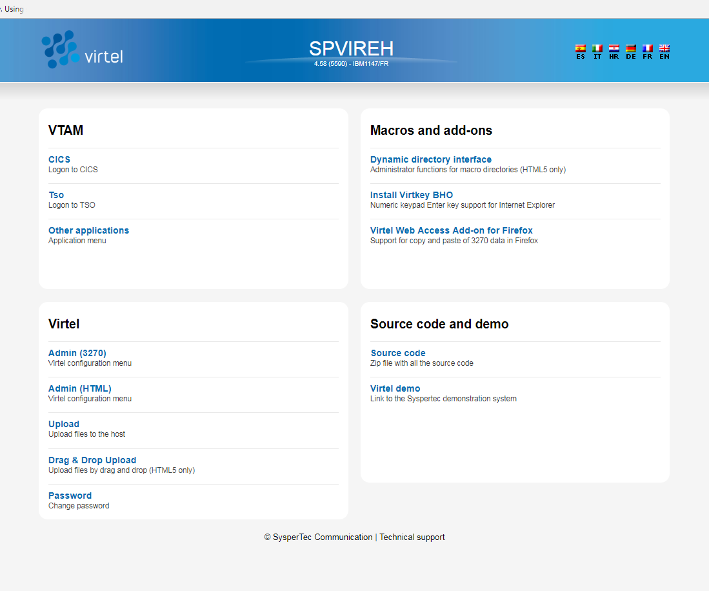
Parameters¶
- Remote ident
Contains the IP address and port number of the CICS side of the link. It must match the fields “adresse TCP/IP” and “port serveur” of the TCP/IP interface defined in VIRKIX. This field should only be used when the VIRKIX relay type is “Virpass TCP/IP” (previously known as “Virpass Symétrique”). If the VIRKIX relay type is “Virpass Asymétrique” (previously known as “Virtel TCP/IP”), this field must be blank, and VIRTEL will wait for VIRKIX to make the connection on he address specified in the “Local ident” field.
- Local ident
Must be specified. Contains the IP address and port number of the VIRTEL side of the link. Must match the fields “Adresse TCP/IP” and “port du serveur” specified in the VIRPASS interface (relay type “Virpass TCP/IP” or “Virpass Asymétrique”) defined in VIRKIX.
- Prefix
Terminal name prefix (see below).
- Entry point
Leave blank.
- Line type
TCP1
- Possible calls
Always 3.
- Protocol
Always VIRPASS.
- Window
Always 0.
- Packet
Always 0.
- Pad, Tran
Always blank.
Terminal Definitions¶
A VIRPASS TCP line for communication with VIRKIX uses a single sub-group of terminals dedicated to outgoing calls. Either explicit or repeated definitions can be used. The terminals are defined as type 3, compression 2, and the “Possible calls” field must be set to 2. The “Relay” field in the terminal definition must contain the name of the VIRKIX relay which will be activated at connection time. In the case of incoming X25 calls this relay is defined in the VIRKIX menu “Interface X25” – “Appels X25 entrant”. The “Type of line” field in the relay definition must contain the value X25VIRPA (or E25TCPIP in previous versions of VIRKIX). Unlike other terminal types, the relay name specified here is not the name of a VTAM LU.
 Terminals on a VIRPASS TCP line for VIRKIX
Terminals on a VIRPASS TCP line for VIRKIX
VIRPASS TCP line (VIRNT)¶
A VIRNT system can be connected to VIRTEL to act as an X25 gateway handling incoming and outgoing connections to and from VIRTEL, or to act as a LECAM server. Communication between VIRTEL and VIRNT can be established using either an APPC line or a TCP/IP line. This section describes TCP/IP mode.

Parameters¶
- Remote ident
Always blank.
- Local ident
This field must be the same as the TCP/IP port referenced under the heading “HOST IP Port” in the VIRPASS.INI file on the VIRNT system.
- Prefix
Terminal name prefix (see below).
- Entry Point
Not required for this type of line.
- Line type
TCP1
- Possible calls
No special restriction.
- Protocol
Always VIRPASS.
- Window
Always 0.
- Packet
Always 0.
- Pad, Tran
Always blank.
A VIRPASS TCP connection with a VIRNT system can use up to two sub-groups of terminals. The first sub-group is dedicated to incoming calls and has an associated relay. The second sub-group is dedicated to outgoing calls and has no associated relay. The two sub-groups have a common prefix which associates them with the line. Either explicit or repeated terminal definitions may be used.
NTTCE980 |
0020 |
RNTTC000 |
$X25$ |
3 |
1 |
|---|---|---|---|---|---|
NTTCS980 |
0020 |
$X25$ |
3 |
2 |
Terminal Definitions¶
Each terminal in the pool dedicated to incoming calls must have an associated relay. The terminals are defined as type 3, compression 2, and the “Possible Calls” field must be set to 1:
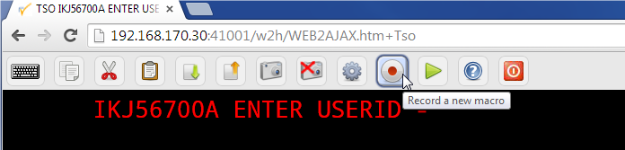 Inbound terminals for a VIRPASS TCP line for VIRNT
Terminals in the pool dedicated to outgoing calls do not have an associated relay. The terminals are defined as type 3, compression 2, and the “Possible Calls” field must be set to 2:
 Outbound terminals for a VIRPASS TCP line for VIRNT
Outbound terminals for a VIRPASS TCP line for VIRNT
VIRPASS XM line (VIRKIX)¶
Communication between VIRTEL and CICS can be established via APPC, TCP/IP, or Cross-memory. This section describes communications in Cross-memory (XM) mode using the VIRKIX program on the CICS side.

Parameters¶
- External name
Must match the relay name of a VIRPASS cross-memory interface in VIRKIX.
- Remote ident
Contains the jobname of the CICS region in which VIRKIX is running. The CICS region must be in the same MVS system as VIRTEL.
- Local ident
Must match the field “Nom de la liaison” specified in the definition of the VIRPASS cross-memory interface in VIRKIX.
- Prefix
Terminal name prefix (see below).
- Entry point
Leave blank.
- Line type
XM1
- Possible calls
Always 3.
- Protocol
Always VIRPASS.
- Window
Always 0.
- Packet
Always 0.
- Pad, Tran
Always blank.
Terminal Definitions¶
A VIRPASS XM line for communication with VIRKIX uses a single sub-group of terminals dedicated to outgoing calls. Either explicit or repeated definitions can be used. The terminals are defined as type 3, compression 2, and the “Possible calls” field must be set to 2. The “Relay” field in the terminal definition must contain the name of the VIRKIX relay which will be activated at connection time. In the case of incoming X25 calls this relay is defined in the VIRKIX menu “Interface X25” – “Appels X25 entrant”. The “Type de line” field in the relay definition must contain the value X25VIRPA (this is the same value as for VIRPASS TCP, which was coded as E25TCPIP in previous versions of VIRKIX).
Unlike other terminal types, the relay name specified here is not the name of a VTAM LU.
 Terminals on a VIRPASS XM line for VIRKIX
Terminals on a VIRPASS XM line for VIRKIX
A VIRPASS cross-memory connection is defined in VIRKIX by means of an entity known as a “Virpass cross-memory interface”:
KIXADMIN - Virpass Cross-Memory ---------- V2R5 - 30/06/2005 - 10:54:55
Sysid CICS: CICT
Nom interface XM: VIRTELXM
------------------------------------------------------------------------------
Nom du job partenaire : SPTSABYV
Nom de la liaison : XM44000
------------------------------------------------------------------------------
Autres définitions:
Lancement : A M:Manuel A:Autom,évt dans SYSID:
Nbr maxi de connexions: 0010 de 01 à 1024
Transaction associée : APIW APIW par défaut
Trace et Snap : O O:Oui N:Non
Trace Connexion : O O:Oui N:Non
Snap centralisé : O O:Oui N:Non
Priorité : 080 de 000 à 255
------------------------------------------------------------------------------
P3--------P4--------P5--------P6--------P7--------P8--------P12-------ENTER----
Menu Quitter M.A.J Supprimer Saisir Valider
VIRKIX definitions for a VIRPASS XM connection
- Nom interface
The name of the VIRPASS cross-memory interface (also known as the relay name or “nom relais”) must match the “external name” of the VIRPASS XM line in VIRTEL.
- Nom du job partenaire
Specifies the jobname of the VIRTEL STC, which must be in the same MVS system as VIRKIX.
- Nom de la liaison
Must match the “Local ident” of the VIRPASS XM line in VIRTEL.
Refer to the VIRKIX Configuration documentation for details of the other fields on this panel.
X25 XOT line¶
An XOT line establishes a connection between VIRTEL and a CISCO router. Across this type of line, VIRTEL processes incoming and outgoing calls to and from the X25 network. Activation of this type of line requires the presence of the TCP1 parameter in the VIRTCT.

Parameters¶
- Remote ident
IP address of the router followed by the port number 1998.
The address specified here is used by VIRTEL as the destination address for outgoing calls. Incoming calls are accepted from any IP address, except in the case of XOT lines which share a common IP address and port (specified in the “Local ident” field). Such lines only accept calls whose IP source address matches the router address specified in the “Remote ident” field. This allows VIRTEL to allocate incoming calls to the correct XOT line. The parameter UNIQUEP=Y (which can be specified only in batch definition mode using the VIRCONF utility) allows this check to be enforced regardless of whether the “Local ident” field specifies a shared address.
- ..note::
Take care to ensure that the router presents the expected address to VIRTEL. You may need to use the xot-source parameter in the router configuration to ensure that the router presents the correct IP address to VIRTEL for incoming calls. Example:
x25 route .* xot 10.0.1.1 xot-source loopback0
- Local ident
The IP address and port number on the VIRTEL side. For details of how to code this field, refer to “Local ident” under the heading “Line Parameters”,.
The port number must be 1998. This port number is fixed by the XOT protocol, and the router does not provide any configuration statement which allows the port number to be altered.
From VIRTEL version 4.24 onwards, multiple XOT lines with the same local IP address and port number can be defined within a single instance of VIRTEL. As explained above, VIRTEL uses the router IP address (“Remote ident”) to match calls from a router with the correct XOT line. However, if multiple instances of VIRTEL are started on a single MVS system, each VIRTEL must have its own distinct IP address for XOT. The use of VIPA allows multiple IP addresses to be defined within a single TCP/IP stack (see the IBM manual z/OS Communications Server IP Configuration Guide for details of VIPA).
- Prefix
Terminal name prefix (see below).
- Entry Point
Not required for this type of line.
- Line type
One of the TCP/IP protocols defined in the VIRTCT, for example TCP1.
- Possible calls
No special restriction.
- Protocol
Always XOT.
- Window
In accordance with the window size for the X25 line specified in the router configuration (see note below).
- Packet
In accordance with the packet size for the X25 line specified in the router configuration (see note below).
Note: VIRTEL will normally use the window size and packet size negotiated with the partner during call setup. The Window and Packet values specified in the line definition are the default values which will be used if no values are supplied by the partner in the Call or Call Accepted packets.
- Pad
Always blank.
- Tran
Normally blank, unless non-standard ASCII translation is required for special applications.
Terminal Definitions¶
Press [PF4] at the line definition screen to display the list of terminals associated with an XOT line. An XOT line uses a single sub-group of type-3 terminals having a common prefix (XOTF in this example). Each terminal may be associated with an application relay defined by a VTAM APPL statement. The number of terminals defined determines the maximum number of simultaneous sessions (or virtual circuits) between the router and VIRTEL.

Definition of terminals associated with an XOT line
- Terminal
The terminal name must match the prefix of the line.
- Relais
The name of a relay LU must be specified if incoming calls are routed to a type-1 transaction (VTAM application). The relay LU’s must be defined by APPL statements in a VTAM application major node, as described below. If all incoming calls are routed to a type-3 transaction (external server), as is the case for calls routed to a GATE or PCNE application such as CFT or Inter.PEL, no relay is required on the terminals attached to the XOT line.
- Entry point
Leave blank.
- Terminal Type
Always 3.
- Compression
Always 2.
- Possible calls
Always 3.
- Repeat
Number of terminals (virtual circuits) defined.^
VTAM Terminal Definition¶
- When incoming calls are routed to a type-1 transaction (VTAM
application), the relay LU’s must be defined by APPL statements in a VTAM application major node, as shown in the example below:
RXOTF000 APPL AUTH=(ACQ,PASS),MODETAB=MODVIRT,DLOGMOD=DLOGREL
RXOTF001 APPL AUTH=(ACQ,PASS),MODETAB=MODVIRT,DLOGMOD=DLOGREL
RXOTF002 APPL AUTH=(ACQ,PASS),MODETAB=MODVIRT,DLOGMOD=DLOGREL
RXOTF003 APPL AUTH=(ACQ,PASS),MODETAB=MODVIRT,DLOGMOD=DLOGREL
X25 VIRPESIT line¶
A VIRPESIT line establishes a TCP/IP link between VIRTEL and a file transfer application such as CFT. A VIRPESIT line allows VIRTEL to act as an IP-to-X25 gateway for file transfer sessions using the PESIT and ETEBAC protocols. File transfer requests arriving via IP on a VIRPESIT line may be routed either to a local GATE or PCNE application, or to a remote partner via the X25 network. Similarly, file transfer requests from the X25 network or from local GATE or PCNE applications may be routed to the IP network via a VIRPESIT line.
The activation of this type of line requires the presence of the TCP1 parameter in the VIRTCT.
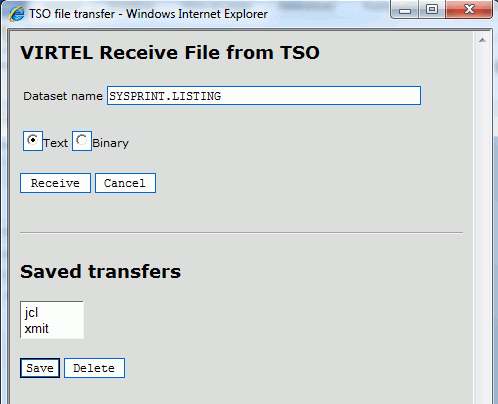
Parameters¶
- Remote ident
(optional) IP address and port number of the default partner (for outbound calls when the external server does not specify a partner IP address).
- Local ident
The IP address and port number on which VIRTEL listens for incoming connections from the partner application. For details of how to code this field, refer to “Local ident” under the heading “Line Parameters”.
- Prefix
Terminal name prefix (see below).
- Entry Point
The default entry point will be used for all incoming calls which do not match any of the rules of the line.
Entry points for use with VIRPESIT lines are described under the heading “VIRPESIT gateway” in the “Incoming calls” section of the VIRTEL Technical Documentation.
- Line type
One of the TCP/IP protocols defined in the VIRTCT, for example TCP1.
- Possible calls
Specify 3 to allow exchanges in both directions.
- Protocol
Always VIRPESIT.
By pressing [PF4], the list of terminals associated with the VIRPESIT line will be displayed. A VIRPESIT line uses a single group of type-3 terminals having a common prefix (I001T in this example). The number of terminals defined determines the number of simultaneous file transfer sessions authorised. The example below shows a group of 8 VIRPESIT terminals:
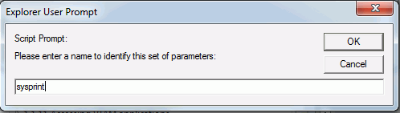
Terminal Definitions¶
- Terminal
The terminal name must match the prefix of the line.
- Relay
Leave blank.
- Entry point
Leave blank. The entry point is defined in the line (or in the rules of the line) for this type of terminal.
- Terminal type
Always 3.
- Compression
Always 2.
- Possible Calls
Always 3.
- Repeat
The number of terminals defined.
X25 VIRNEOX line¶
A VIRNEOX line allows VIRTEL to act as a server for communications with application programs over a TCP/IP connection using a simplified X25-like protocol. Typically the application will be an existing X25 application which has been converted to TCP/IP. The activation of this type of line requires the presence of the TCP1 parameter in the VIRTCT.

Parameters¶
- Local ident
The IP address and port number on which VIRTEL listens for incoming connections from the partner application. For details of how to code this field, refer to “Local ident” under the heading “Line Parameters”.
- Prefix
Terminal name prefix (see below).
- Entry Point
The default entry point will be used for all incoming calls which do not match any of the rules of the line. Entry points for use with VIRNEOX lines must specify Emulation type $NONE$
- Line type
One of the TCP/IP protocols defined in the VIRTCT, for example TCP1.
- Possible calls
Specify 1 to allow inbound calls.
- Protocol
Always VIRNEOX.
- Packet
Specify a packet size sufficient to contain the largest message sent by either the host or the partner application.
By pressing [PF4], the list of terminals associated with the VIRNEOX line will be displayed. A VIRNEOX line uses a single group of type-3 terminals having a common prefix (XNE3 in this example). The number of terminals defined determines the number of simultaneous conversations authorised.
The example below shows a group of 8 VIRNEOX terminals:

Terminal Definitions¶
- Terminal
The terminal name must match the prefix of the line.
- Relay
Leave blank.
- Entry point
Leave blank. The entry point is defined in the line (or in the rules of the line) for this type of terminal.
- Terminal type
Always 3.
- Compression
Always 2.
- Possible Calls
Always 3.
- Repeat
The number of terminals defined.
X25 GATE Non Fast-Connect (NFC) line¶
An X25 GATE Non Fast-Connect line establishes a connection between VIRTEL and an X25 line connected to an IBM 3745 communications controller. Across this type of line, VIRTEL handles incoming and outgoing calls to and from the X25 network. Activation of this type of line requires the presence of the GATE and MINITEL parameters in the VIRTCT.
Definition of an X25 GATE non-Fast Connect line
Parameters¶
- Remote ident
Name of the MCH LU generated by NPSI.
- Local ident
Always blank.
- Prefix
Terminal name prefix (see below). The terminal names must be identical to the virtual circuit LU names generated by NPSI.
- Entry Point
Not required for this type of line.
- Line type
Always GATE.
- Possible calls
No special restriction.
- Protocol
Always blank.
- Window
Must agree with the NPSI definition.
- Packet
Must agree with the NPSI definition.
- Pad
Must agree with the NPSI definition.
- Tran
Must agree with the NPSI definition.
From VIRTEL version 4.15 onwards, TRAN must be blank if TRAN=EVEN is specified in the NPSI definition.
An X25 GATE Non Fast-Connect line uses a single sub-group of terminals dedicated to the management of sessions between VIRTEL and the switched virtual circuits on the one hand, and between VIRTEL and the host applications on the other hand. Each terminal is associated with an application relay defined by a VTAM APPL statement.
The relay name is compulsory for this type of terminal.

Terminal Definitions¶
- Terminal
The terminal name must match the virtual circuit LU names generated by the X25.VC macro in the NPSI.
- Relay
The application relay is a VTAM LU which represents the VIRTEL side of the session with NPSI for each virtual circuit. Relay LUs are defined in a VTAM application major node.
- Terminal type
Always 1.
- Compression
Always 2.
- Possible calls
Specify 3 to allow both incoming and outgoing calls.
- Repeat
The number of virtual circuits defined by NPSI.
VTAM Terminal Definitions¶
Each Minitel or PC wishing to benefit from VIRTEL functionality must be defined in a VTAM switched major node similar to the one shown below.
VIRTMINI VBUILD TYPE=SWNET
PU01 PU ADDR=01, *
IDBLK=003, *
IDNUM=xxyyy, Note 1 *
MAXDATA=4101, Note 2 *
MODETAB=MODVIRT, Note 3 *
DLOGMOD=DLOGMINI, *
PACING=1, *
VPACING=3, *
PUTYPE=1, *
DISCNT=YES, *
SSCPFM=USSNTO, *
LOGAPPL=vvvvvv Note 4 *
MINI1 LU LOCADDR=0, *
TERM=TWX
..note:
The switched major nodes must be defined as shown in the above example. The associated relays must refer to DLOGMODE DLOGREL in the MODVIRT mode table.
- Note 1
IDNUM takes the value xxyyy with xx equal to the value of the parameter IDNUMH in the NPSI X25MCH MACRO; yyy is a hexadecimal value decrementing in steps of 2 from the CVC number assigned to the LU.
Let us suppose for example that we have a configuration made up of two TRANSPAC lines, L1 and L2, containing respectively 16 and 8 entries. The Minitels are installed on line L2. The value yyy assigned to the first Minitel is X‘030’ ((16 + 8) x 2) in hexadecimal. The values of yyy respectively assigned to the other Minitels are X‘02E’, X‘02C’, X‘02A’, X‘028’, etc.
- Note 2
The value of MAXDATA must not exceed MAXBFRU times UNITSZ, nor must it exceed the NCP MAXDATA value.
- Note 3
The MODVIRT mode table must be placed in an executable module library (VSE) or in a LOADLIB (MVS, VM) known to VTAM before activation of the switched major node.
- Note 4
LOGAPPL takes the value specified in the APPLID TYPE=INITIAL parameter in the VIRTCT. If both Minitels and PC’s are used simultaneously, the LOGAPPL parameter must be replaced by the value USSTAB=USSVIRT (the source of this USSTAB is in the VIRTEL SSL for VSE and in the MACLIB for MVS).
..note:
The LOGAPPL and USSTAB parameters are valid only for non GATE lines. For sites making outgoing calls, from NCP 5.40 onwards, USSTAB and GATE are incompatible, and therefore the USSTAB keyword should be omitted for a switched major node describing type 1 LU’s.
NCP Parameters¶
The LUDRPOOL MACRO must contain an NUMTYP1 parameter with a value greater than or equal to the number of CVC available on the lines. For LU6.2 connections, check for the presence of the NUMILU parameter which indicates the number of available PU type 2.1.
NPSI Parameters¶
The following parameters must agree with the specification of your TRANSPAC subscription.
Macro X25VCCPT
- MAXPKTL (packet length)
Must equal the value given for “Packet Size” on your TRANSPAC subscription (usually 128).
- VWINDOW (packet level window size)
Must equal the value given for “Packet Window Size” on your TRANSPAC subscription (usually 3).
Macro X25MCH
- CONNECT
Must be specified as NO.
- GATE
Must be specified as GENERAL.
- LLCLIST
Must have the value LLC4. LLC0,LLC2,LLC3,LLC4 and LLC5 can for example take the values 0, 2, 3, 4 et 5. Only the value assigned to the LLC4 parameter is important, because it will be appended to the TRANSPAC number allowing access to the server.
- MWINDOW (frame level window size)
Must equal the value given for “Frame Window Size” on your TRANSPAC subscription (usually 7).
- FRMLENGTH
Must equal MAXPKTL + 3 (usually 131).
- PAD
Permissible values are NO, INTEG or TRANSP. If the value is INTEG, support for DARK (invisible fields) is not provided on Minitels in 80 column mode. It is provided where PAD=TRANSP.
In GATE mode, VIRTEL supports DARK in 80 column mode whatever the value of the PAD parameter.
- SUBADDR
Must be YES.
- TRAN
Must be EVEN or NO.
Routing on incoming calls¶
Incoming calls are routed by means of an entry point name specified in the Call User Data of the incoming call packet. If no Call User Data is specified, the value specified in the “Entry Point” parameter of the terminal definition is used. If this field is not supplied, the second value of the DEFENTR parameter in the VIRTCT is used.
Other possibilities are available through the use of a type 1 user exit.
While the sharing of a line in Fast-Connect mode would give better performance, it may prove necessary to use another method if, for example, the line is used for 3174 connections, or by another product which does not support Fast-Connect. Except for the definition of the line itself, the remainder of the configuration is similar to that of a non- shared GATE line. Be aware, however, that the implementation of such a solution can be complex.
To be able to support line sharing without Fast-Connect mode, the line must be defined as GATE=GENERAL and the X25MCH CONNECT parameter must be set to NO. The parameters SUBADDR, CTCP and CUD0 define the routing of connections and the use of the associated QLLC’s.
X25.MCH RESS=003, *
FRMLENGTH=131, *
LUNAME=(XU01,XU02), LU MCH (Application x, VIRTEL) *
LCGDEF=(0,19), *
MWINDOW=3, *
ANS=CONT, *
DBIT=NO, *
GATE=GENERAL, *
CONNECT=NO, Multi applications without F-C *
CTCP=(00,01), Reference CTCP *
CUD0=(09,01), *
* Calls with subaddr 9 connect the terminal to the application
* controlling line XU01 (CTCP=00)
* Calls with subaddr 1 connect the terminal to the application
* VIRTEL controlling line XU02 (CTCP=01)
LLCLIST=(LLC0,LLC4,LLCn,...), *
LOGAPPL=(PELC00,VIRTEL), *
SUBADDR=YES, *
IDBLKC=62, Idblk for PCNE (LLC0) *
IDBLKG=63, Idblk for GATE (LLC4) *
* In VTAM there are 2 switched major nodes with the same IDNUM
* but different IDBLK (062 for the first, 063 for VIRTEL)
PAD=INTEG, *
PKTMODL=8, *
STATION=DTE, *
SPPED=19200, *
TRAN=EVEN
X25.LCG LCGN=0
X25.VC LCN=(0,19), 20 physical CVC *
TYPE=SWITCHED, *
MAXDATA=4101, Largest VTAM message size *
VCCINDX=1, *
CALL=INOUT Incoming and outgoing calls
..note:
Each application can potentially use up to 20 CVC’s. It is not possible to limit the number of circuits which can be used by each application, as can be done with Fast-Connect.
X25 GATE Fast-Connect (FastC) line¶
An X25 GATE Fast-Connect line establishes a connection between VIRTEL and an X25 line connected to an IBM 3745 communications controller. Across this type of line, VIRTEL handles incoming and outgoing calls to and from the X25 network. Activation of this type of line requires the presence of the FASTC, GATE and MINITEL parameters in the VIRTCT.

Parameters¶
- Remote ident
Name of the MCH LU generated by NPSI.
- Local ident
Always blank.
- Prefix
An X25 GATE Fast-Connect line uses a single sub-group of terminals dedicated to the management of sessions between VIRTEL and the switched virtual circuits on the one hand, and between VIRTEL and the host applications on the other hand. Each terminal is associated with an application relay defined by a VTAM APPL statement.
- Entry Point
Not required for this type of line.
- Line type
Always FASTC.
- Possible calls
No special restriction.
- Protocol
Always blank.
- Window
Must agree with the NPSI definition.
- Packet
Must agree with the NPSI definition.
- Pad
Must agree with the NPSI definition.
- Tran
Must agree with the NPSI definition.
Terminals on a X25 GATE Fast-Connect line
An X25 GATE Fast-Connect line uses a single sub-group of terminals dedicated to the management of sessions between VIRTEL and the switched virtual circuits on the one hand, and between VIRTEL and the host applications on the other hand. Each terminal is associated with an application relay defined by a VTAM APPL statement.
The relay name is compulsory for this type of terminal.
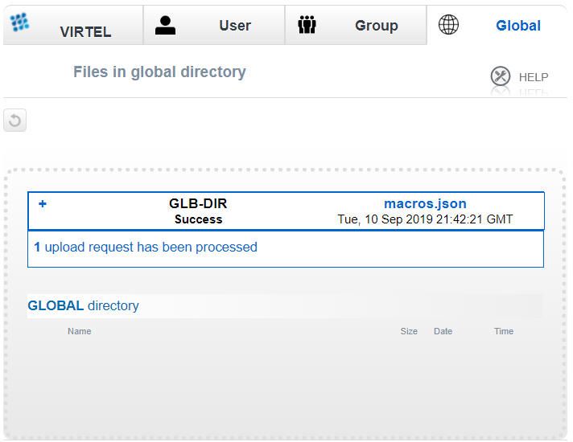
Terminal Definitions¶
- Terminal
The terminal name must match the virtual circuit LU names generated by the X25.VC macro in the NPSI.
- Relay
The application relay is a VTAM LU which represents the VIRTEL side of the session with NPSI for each virtual circuit. Relay LUs are defined in a VTAM application major node.
- Terminal type
Always 1.
- Compression
Always 2.
- Possible calls
Specify 3 to allow both incoming and outgoing calls.
- Repeat
The number of virtual circuits defined by NPSI.
VTAM Terminal Definitions¶
Each Minitel or PC wishing to take advantage of VIRTEL functionality must be defined to VTAM in a switched major node similar to that shown in section “Definition of a X25 GATE Non Fast-Connect line”.
NCP/NPSI Definitions¶
As well as offering a noticable performance improvement, the use of Fast-Connect allows one line to be shared between several CTCP’s. When the Fast-Connect option is used, there is no VTAM switched major node. The switched virtual circuit is directly connected to the CTCP. This permanent connection minimizes connection time as well as the consumption of memory and CPU resources.
The definition of a Fast-Connect line is similar to that of a GATE line, apart from:
Macro X25MCH
- CONNECT
Must have a value other than NO. The remaining parameters depend on the value of the CONNECT parameter.
- LLCLIST
Must contain the value LLC5.
Sharing of FastC lines¶
X25.MCH ADRESS=003, *
FRMLENGTH=131, *
LUNAME=(XU01,XU02), LU associated with each VIRTEL *
LCGDEF=(0,19), *
MWINDOW=3, *
ANS=CONT, *
DBIT=NO, *
GATE=GENERAL, *
CONNECT=SUBD, F-C to multiple VIRTEL *
SUBD=(4,9,1), Subaddresses 4, 9, 1 *
CTCP=(0,1,1) 1st VIRTEL if 4, *
2nd VIRTEL if 9 or 1 *
LOGAPPL=(VIRTEL1,VIRTEL2) Applid of each VIRTEL *
LLCLIST=(LLC4) *
SUBADDR=NO, *
PAD=NO, *
PKTMODL=8, *
STATION=DTE, *
SPEED=19200, *
TRAN=NO
X25.LCG LCGN=0
X25.VC LCN=(0,19), 20 physical CVC *
TYPE=SWITCHED, *
MAXDATA=4101, Largest VTAM message size *
VCCINDX=1, *
CALL=INOUT Incoming and outgoing calls
X25.FCG QTY=(15), No.of CVC used for CTCP 0 *
CTCPNO=(0), CTCP number *
ANS=CONT, *
MAXDATA=4101, *
PRFLINE=XU01, Line name prefix *
PRFPU=XP01, PU name prefix *
PRFLU=XL01, Virtual LU name prefix *
SUFFIX=0001 LU numbers incremented by 1
X25.FCG QTY=(15), No of CVC used for CTCP 1 *
CTCPNO=(1), CTCP number *
ANS=CONT, *
MAXDATA=4101, *
PRFLINE=XU02, Line name prefix *
PRFPU=XP02, PU name prefix *
PRFLU=XL02, Virtual LU name prefix *
SUFFIX=0001 LU numbers incremented by 1
Example of a Fast-Connect line shared between 2 VIRTELs using subaddressing
..note:
The number of “logical” virtual circuits can be greater than the number of “physical” virtual circuits. This example has 20 physical virtual circuits for 30 (2 X 15) logical virtual circuits.
X25.MCH ADRESS=003, *
FRMLENGTH=131, *
LUNAME=XU01, MCH LU associated with VIRTEL *
LCGDEF=(0,19), *
MWINDOW=3, *
ANS=CONT, *
DBIT=NO, *
GATE=GENERAL, *
CONNECT=YES, F-C to multiple VIRTEL *
LOGAPPL=VIRTEL1, Applid of VIRTEL *
LLCLIST=LLC4, *
SUBD=NO, SUBD=NO *
PAD=NO, *
PKTMODL=8, *
STATION=DTE, *
SPPED=19200, *
TRAN=NO
X25.LCG LCGN=0
X25.VC LCN=(0,19), 20 physical CVC *
TYPE=SWITCHED, *
MAXDATA=4101, Largest VTAM message size *
PRFLINE=ZL01, *
PRFPU=ZPU01, *
PRFLU=ZLU01, *
VCCINDX=1, *
CALL=INOUT Incoming and outgoing calls
Example of a Fast-Connect line with a single CTCP without subaddressing
X25 AntiGATE line¶
A Reverse-X25 AntiGATE line establishes a link between VIRTEL and a Communication and Transmission Control Program (CTCP) application. On this type of line, VIRTEL communicates with the CTCP to manage incoming and outgoing calls to and from the X25 network. Once a virtual circuit is established, data flows across LU-LU sessions between the VIRTEL terminals and the CTCP. In this way, VIRTEL emulates an IBM 3745 controller with NPSI.
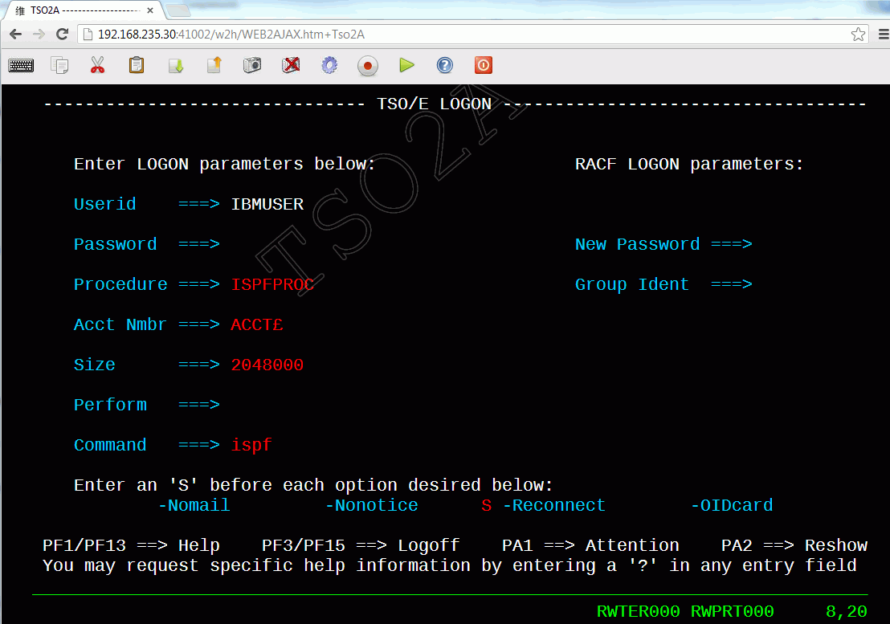
Parameters¶
- Remote ident
LU name of the CTCP (CFT, Inter.PEL, etc). May be blank if WAIT-PARTNER is coded in the “Startup pre-requisite” field.
- Local ident
Name of the LU which represents the physical circuit for the AntiGATE line (analogous to the LU generated by the NPSI X25.MCH macro in the NCP). This LU must be defined by a VTAM APPL statement.
- Prefix
Terminal name prefix (see below).
- Entry Point
The default entry point, if no entry point is defined at the terminal level, or in the line rules or call user data.
- Line type
Always /GATE.
- Possible calls
No special restriction.
- Startup prerequisite
WAIT-PARTNER is recommended for AntiGATE lines. WAIT-PARTNER must be specified if the partner is CFT.
- Protocol
Always blank.
- Window, Packet
Must agree with the definition in the CTCP.
- Pad, Tran
Must agree with the definition in the CTCP.
Terminal Definitions¶
An AntiGATE line uses a single sub-group of terminals which represent the virtual circuits allocated to the line (analogous to the LU’s linked to the virtual circuits defined by the NPSI macro X25.VC in the NCP). The terminal name is an internal name which is used to associate the terminal definition with the AntiGATE line. The associated relay name must match the name of a VTAM APPL statement. Either explicit or repeated terminal definitions may be used.

Terminals on an X25 AntiGATE line
VTAM Terminal Definitions¶
The The LU’s representing the line and the virtual circuits must be defined by APPL statements in a VTAM application major node similar to the following example:
VIRAGATE VBUILD TYPE=APPL
* ------------------------------------------------------------------ *
* Pseudo ligne gate émulée par Virtel (note 1) *
* ------------------------------------------------------------------ *
VXU21 APPL AUTH=(ACQ,PASS),MODETAB=MODVIRT,DLOGMOD=DLOGANTI
* ------------------------------------------------------------------ *
* Pseudo cvcs pour ligne gate émulée par Virtel (note 1) *
* ------------------------------------------------------------------ *
AG21LU01 APPL AUTH=(ACQ,PASS),MODETAB=MODVIRT,DLOGMOD=DLOGANTI
AG21LU02 APPL AUTH=(ACQ,PASS),MODETAB=MODVIRT,DLOGMOD=DLOGANTI
AG21LU03 APPL AUTH=(ACQ,PASS),MODETAB=MODVIRT,DLOGMOD=DLOGANTI
AG21LU04 APPL AUTH=(ACQ,PASS),MODETAB=MODVIRT,DLOGMOD=DLOGANTI
...
VTAM definitions for an X25 AntiGATE line
- Note 1
The LU’s defined in the “Local ident” field of the line must specify logmode DLOGANTI.
- Note 2
The LU’s for the terminal relays can use a logmode appropriate for the application.
- Note 3
The MODVIRT phase must be placed in an executable library (VSE) or in a LOADLIB (MVS, VM) defined to VTAM before the application major node can be activated.
X25 Anti Fast Connect (FastC) line¶
Similar to an AntiGATE line, a Reverse-X25 AntiFastC line establishes a link between VIRTEL and a Communication and Transmission Control Program (CTCP) application. On this type of line, VIRTEL communicates with the CTCP to manage incoming and outgoing calls to and from the X25 network. Once a virtual circuit is established, data flows across LU-LU sessions between the VIRTEL terminals and the CTCP. In this way, VIRTEL emulates an IBM 3745 controller with NPSI.

Parameters¶
- Remote ident
CTCP LU name.
- Local ident
Name of the LU which represents the physical circuit for the AntiFastC line (analogous to the LU generated by the NPSI X25.MCH macro in the NCP). This LU must be defined by a VTAM APPL statement.
- Prefix
Terminal name prefix (see below).
- Entry Point
The default entry point, if no entry point is defined at the terminal level, or in the line rules or call user data.
- Line type
Always /FASTC.
- Possible calls
No special restriction.
- Protocol
Always blank.
- Window, Packet
Must agree with the definition in the CTCP.
- Pad
Must agree with the definition in the CTCP.
- Tran
Specify EVEN, ODD, or NO according to the requirements of the CTCP. Additionally, for AntiFastC lines only: the special value EBCD indicates that VIRTEL will perform the necessary conversion to allow a Videotex server CTCP to be accessed in 3270 mode (VIRTEL Multisession or Web Access).
Terminal Definitions¶
An AntiFastC link uses a single sub-group of terminals which represent the virtual circuits allocated to the line (analogous to the LU’s linked to the virtual circuits defined by the NPSI macro X25.VC in the NCP). The terminal name is an internal name which is used to associate the terminal definition with the AntiFastC line. The associated relay name must match the name of a VTAM APPL statement. Either explicit or repeated terminal definitions may be used.
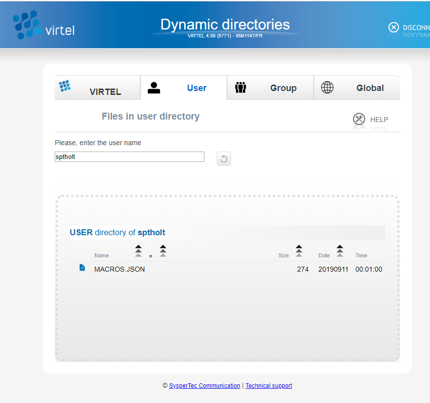 Terminals on an X25 AntiFastC line
The LU’s representing the line and the virtual circuits must be defined by APPL statements in a VTAM application major node similar to the following example:
VIRAFAST VBUILD TYPE=APPL
* ------------------------------------------------------------------ *
* Pseudo ligne fastc émulée par Virtel (note 1) *
* ------------------------------------------------------------------ *
VXU14 APPL AUTH=(ACQ,PASS),MODETAB=MODVIRT,DLOGMOD=DLOGANTI
* ------------------------------------------------------------------ *
* Pseudo cvcs pour ligne fastc émulée par Virtel (note 1) *
* ------------------------------------------------------------------ *
X25AF500 APPL AUTH=(ACQ,PASS),MODETAB=MODVIRT,DLOGMOD=DLOGANTI
X25AF501 APPL AUTH=(ACQ,PASS),MODETAB=MODVIRT,DLOGMOD=DLOGANTI
X25AF502 APPL AUTH=(ACQ,PASS),MODETAB=MODVIRT,DLOGMOD=DLOGANTI
X25AF503 APPL AUTH=(ACQ,PASS),MODETAB=MODVIRT,DLOGMOD=DLOGANTI
VTAM Terminal Definitions¶
- Note 1
The LU’s defined in the “Local ident” field of the line must specify logmode DLOGANTI.
- Note 2
The LU’s for the terminal relays can use a logmode appropriate for the application.
- Note 3
The MODVIRT phase must be placed in an executable library (VSE) or in a LOADLIB (MVS, VM) defined to VTAM before the application major node can be activated.
X25 AntiPCNE line¶
Like an AntiGATE or AntiFastC line, a Reverse-X25 AntiPCNE line establishes a link between VIRTEL and an application. By contrast however, VIRTEL does not use a line-level LU to manage call setup, and the application does not supply VIRTEL with a call packet. Instead, the application makes outgoing calls by choosing a particular LU associated with the AntiPCNE line. The X25 called number is defined at the terminal level by means of an associated external server definition. In this way, VIRTEL emulates an IBM 3745 controller with NPSI.
Parameters¶
- Remote ident
Partner application LU name.
- Local ident
Always blank.
- Prefix
Terminal name prefix (see below).
- Entry Point
Leave blank. The entry point should be defined in the rules of the line.
- Line type
Always /PCNE.
- Possible calls
No special restriction.
- Protocol
Always blank.
- Window
Not used for an AntiPCNE line.
- Packet
Not used for an AntiPCNE line.
- Pad
Always NO.
- Tran
Always NO.
Terminal Definitions¶
An AntiPCNE line uses two sub-groups of terminals. In each case, the terminal name is an internal name which is used to associate the terminal definition with the AntiPCNE line. The associated relay name must match the name of a VTAM APPL statement.
The first sub-group is used for outgoing calls (from the point of view of the application), and consists of explicitly defined terminals with the “Possible calls” field set to 1. Each terminal in this first sub-group corresponds to a single remote partner. The “Relay” field of each terminal in this first sub-group must contain the LU name which the application uses to make outgoing calls to the remote partner concerned. The entry point specified by the rules of the line contains a type-3 transaction which specifies “&R” as the application name. This makes the link with an external server whose name is identical to the Relay LU name. The external server contains the call parameters (X25 number, etc) needed to route calls to the required partner.
The example below shows the definition of an AntiPCNE terminal for outbound calls made using LU name AP1LU01O, and the associated external server containing the X25 call parameters:
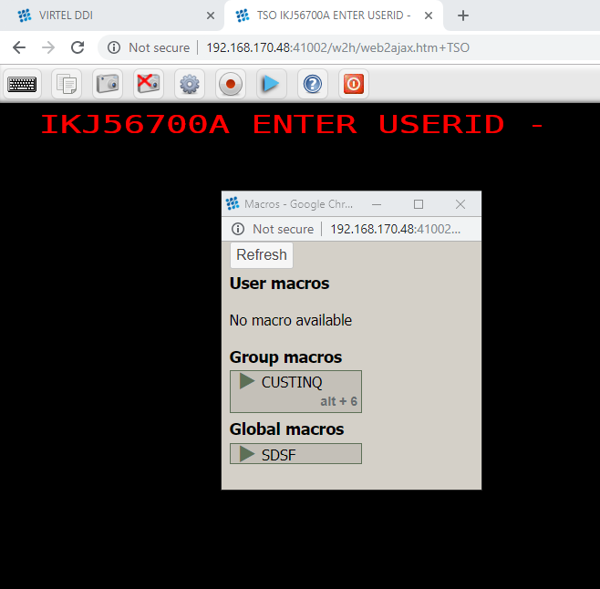 Outbound Terminal Definition for X25 AntiPCNE
 External server definition for X25 AntiPCNE
External server definition for X25 AntiPCNE
The second sub-group is used for incoming calls (from the point of view of the application). In this sub-group, the “Possible calls” field is set to 2. Either explicit or repeated terminal definitions may be used for this second sub-group, and no entry point is necessary. Each terminal in the second sub-group can be used for calls originating from any remote partner. This method is suitable for applications such as CFT which do not verify the LU name for incoming calls.
 Inbound terminal definition for X25 AntiPCNE (method 1)
Inbound terminal definition for X25 AntiPCNE (method 1)
A second method of defining AntiPCNE terminals allows the administrator to specify the selection of an LU name according to the characteristics of the incoming call. This method is suitable for applications such as Inter.PEL which require incoming calls to arrive on specific LU names according to the identity of the partner which originated the call. In this case, the terminals in the second sub-group specify the name of a logical pool instead of a relay LU name (see “logical pool of relays”). The terminals in the logical pool contain the relay LU’s. The selection of an LU is done by means of the rule which routes the incoming call, by specifying the required LU name in the “Parameter” field of the rule. Note that the rules which route incoming calls are those attached to the line on which the call arrives (for example, an XOT line) and not those attached to the AntiPCNE line.
The example below shows the definition of a set of inbound terminals (PCN1TM51-54) attached to an AntiPCNE line. These terminals, which are defined using the repeated method, all refer to a logical pool *POOLPCN. Terminal Definitions PCNETM51-54 are explicitly defined and constitute the logical pool. The relay names AP30LU51-54 are defined in the logical pool. A set of rules attached to the XOT line on which incoming calls arrive assigns an LU from the pool to each incoming call according to the contents of the CUD0 field in the incoming call packet.
+----------+----------+----------+-------+------+-----+---------+-----------+
| Terminal | Repeated | Relay | Entry | Type | I/O | Pool | 2nd Relay |
+==========+==========+==========+=======+======+=====+=========+===========+
| PCNETM51 | 0001 | AP30LU51 | | 3 | 2 |*POOLPCN | |
+----------+----------+----------+-------+------+-----+---------+-----------+
| PCNETM52 | 0001 | AP30LU52 | | 3 | 2 |*POOLPCN | |
+----------+----------+----------+-------+------+-----+---------+-----------+
| PCNETM53 | 0001 | AP30LU53 | | 3 | 2 |*POOLPCN | |
+----------+----------+----------+-------+------+-----+---------+-----------+
| PCNETM54 | 0001 | AP30LU54 | | 3 | 2 |*POOLPCN | |
+----------+----------+----------+-------+------+-----+---------+-----------+
| PCN1TM01 | 0000 | AP30LU01 | | 3 | 1 | | |
+----------+----------+----------+-------+------+-----+---------+-----------+
| PCN1TM02 | 0001 | AP30LU02 | | 3 | 1 | | |
+----------+----------+----------+-------+------+-----+---------+-----------+
| PCN1TM03 | 0001 | AP30LU03 | | 3 | 1 | | |
+----------+----------+----------+-------+------+-----+---------+-----------+
| PCN1TM04 | 0001 | AP30LU04 | | 3 | 1 | | |
+----------+----------+----------+-------+------+-----+---------+-----------+
| PCN1TM51 | 0004 | *POOLPCN | | 3 | 2 | | |
+----------+----------+----------+-------+------+-----+---------+-----------+
List of inbound terminal definitions for X25 AntiPCNE
 Inbound terminal definition for X25 AntiPCNE
Inbound terminal definition for X25 AntiPCNE
 Logical pool definition for X25 AntiPCNE
Logical pool definition for X25 AntiPCNE
 Rule for incoming X25 AntiPCNE calls
Rule for incoming X25 AntiPCNE calls
VTAM Terminal Definitions¶
The LU’s representing the line and the virtual circuits must be defined by APPL statements in a VTAM application major node similar to the following example:
VIRAPCNE VBUILD TYPE=APPL
* ------------------------------------------------------------------ *
* Pseudo cvcs pour ligne pcne émulée par Virtel (note 1) *
* ------------------------------------------------------------------ *
AP30LU01 APPL AUTH=(ACQ,PASS),MODETAB=MODVIRT,DLOGMOD=DLOGPCNE
AP30LU02 APPL AUTH=(ACQ,PASS),MODETAB=MODVIRT,DLOGMOD=DLOGPCNE
AP30LU03 APPL AUTH=(ACQ,PASS),MODETAB=MODVIRT,DLOGMOD=DLOGPCNE
AP30LU04 APPL AUTH=(ACQ,PASS),MODETAB=MODVIRT,DLOGMOD=DLOGPCNE
AP30LU51 APPL AUTH=(ACQ,PASS),MODETAB=MODVIRT,DLOGMOD=DLOGPCNE
AP30LU52 APPL AUTH=(ACQ,PASS),MODETAB=MODVIRT,DLOGMOD=DLOGPCNE
AP30LU53 APPL AUTH=(ACQ,PASS),MODETAB=MODVIRT,DLOGMOD=DLOGPCNE
AP30LU54 APPL AUTH=(ACQ,PASS),MODETAB=MODVIRT,DLOGMOD=DLOGPCNE
Note 1
The LU’s for the terminal relays must specify logmode DLOGPCNE.
Note 2
The MODVIRT phase must be placed in an executable library (VSE) or in a LOADLIB (MVS, VM) defined to VTAM before the application major node can be activated.
Add or changing AntiPCNE LU names¶
From VIRTEL version 4.28 onwards, it is possible to add a new terminal to an AntiPCNE line, or to change the relay LU name in an existing terminal, without stopping and restarting VIRTEL.
The procedure for adding a new AntiPCNE terminal is as follows:
For an outbound terminal, add a new terminal definition by pressing [PF12] at the List of Terminals screen (position the cursor on an existing terminal if desired to copy its definition). Specify the new terminal name and LU name in the “Terminal” and “Relay” fields, and specify “Terminal type 3” “Compression 0” and “Possible Calls 1”. Then press [Enter] to add the new definition. While still in the Terminal Detail Definition screen, press [PF12] to define a new external server with the same name as the relay. Fill in the outbound call parameters and press [Enter] to add the new definition.
For an inbound terminal, add a new terminal definition as above but with “Possible Calls 2”. Specify either an LU name or the name of a logical pool in the “Relay” field. If using a logical pool, also add a new terminal definition to the logical pool specifying the LU name in the “Relay” field, and add a rule to the XOT line to allocate incoming calls to this LU.
Define the new LU name as an APPL statement in a VTAM application major node and activate it.
Use the VIRTEL LINE START command to activate the new terminal(s) on the AntiPCNE line. For example:
- ::
F VIRTEL,LINE=P-PCNE1,START
The procedure for changing the LU name of an existing AntiPCNE terminal is as follows:
Enter the new LU name in the “Relay” field of the Terminal Detail Definition screen for the terminal or logical pool concerned, and press [PF1] to record the change.
For an outbound terminal, copy the existing external server definition for the old LU name, renaming it using the new LU name. For an inbound terminal, go to the XOT line definition and alter the rule (if any) which specifies the old LU name in its “Parameter” field, replacing the old LU name by the new LU name, and press [PF1].
Inactivate the existing VTAM LU.
Define the new LU name as an APPL statement in a VTAM application major node and activate it.
Use the VIRTEL LINE START command to reactivate the changed terminal(s) on the AntiPCNE line. For example: F VIRTEL,LINE=P-PCNE1,START
Support of X25 non GATE terminals¶
Support for incoming connections via an X25 non GATE line still exists. This type of connection does not require a line definition in VIRTEL. All that is needed is to create a series of terminals using the Terminal Management sub- application. Each terminal is defined as type 1 compression 2 and is associated with an application relay.
..note:
This mode allows only incoming calls, with no facility for call routing.
VTAM definitions for X25 non GATE terminals¶
Each Minitel or PC which is to log on to VIRTEL must be defined in a VTAM switched major node as described in “Definition of an X25 GATE Non Fast-Connect line”.
NCP/NPSI parameters for X25 non GATE terminals¶
The information presented in the section “Definition of an X25 GATE Non Fast-Connect line” applies here with the following addition:
Macro X25.MCH
- LLCLIST
Must contain the value LLC5.
Virtel Rules¶
Introduction¶
Each Virtel line can have a set of rules which allow the selection of an entry point for each incoming call according to the characteristics of the call and the rule criteria. Rules are processed in alphanumeric order of name, so it is important that the name you choose gaurantees order of the rule processing. As sonn as a match is found within the definied rule criteria the designated entry point will be assigned to the caller. Rules are useful to force or nail Virtel Relay LU names or to establish different application lists depending on the incoming IP address. The last rule should be the “default” rule which is used to catch callers that didn’t match with previous rules. If no default rule is present then the caller will drop through the rule processing and the connection will be closed. See “Controlling LUNames”) for examples on how to define and use Virtel Rules to control LU names.
Summary Display¶
Press [PF5] at the line detail definition screen to display the summary list of rules associated with the line:
 Rule Summary Display
Rule Summary Display
Field Contents
- Name
The name of the rule. Rules associated with a line are processed in alphanumeric order.
- Status
Indicates whether the rule is ACTIVE or INACTIVE. To change the status, display the detailed definition of the rule [PF12], then press [PF4] to activate, or [PF5] to inactivate.
- Description
Free-form description of the rule.
- Entry Point
Name of the entry point which will be assigned to incoming calls whose characteristics match this rule.
Navigation¶
- Search
Type the name (or partial name) of the required entity on the first line under the heading “Name”, then press [Enter].
- [PF6]
Return to the first page of the list.
- [PF7]
Display the previous page.
- [PF8]
Display the next page.
Modifying a rule - Pressing [PF12] at the Rules screen displays the rule detail definition screen. Type the desired modifications into the appropriate fields then press [PF1]. Multiple definitions can be modified at the same time. If the modification affects a field not displayed on the summary screen, first position the cursor on the definition concerned, then press [PF12] to access the definition detail screen.
- ..warning::
Modifications are not recognized until you press the [PF1] key. Certain modifications require a restart of the VIRTEL system.
Deleting a rule - In the summary screen position the cursor under the name of the entity to be deleted, then press [PF2]. The line associated with the entity to be deleted then appears highlighted, accompanied by the message CONFIRM DELETE. Then press [PF2] again to confirm deletion. The message DELETE OK confirms successful completion of the operation. Repeat the procedure for each entity to be deleted.
Adding a rule - To add a new definition, press [PF12] at the summary screen, either with the cursor on an existing definition to copy its attributes, or on an empty line to create a new definition from a blank screen.
Detail Display¶
To display or update the detailed definition of an entity, place the cursor on the name of the entity within the summary display and press [PF12]. The detail definition screen will then be displayed.
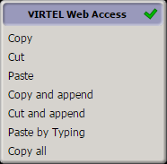 Rule detail definition screen
Parameters¶
- Name
The name of the rule. This name must be unique across all rules in the system. The rules associated with a line are processed in alphanumeric order of this name. The rule name thus determines the priority of the rule within the line.
- Status
Indicates whether the rule is ACTIVE or INACTIVE. To activate a rule, press [PF4]. To inactivate a rule, press [PF5].
- Description
Description of the rule. This information is not used.
- Entry point
The name of the entry point which will be assigned to the incoming call if this rule matches the call characteristics.
Note
The value $COOKIE$ in the “Entry Point” field has a special meaning. This value is meaningful only in rules attached to an HTTP line. If a rule with this value is found, and if the HTTP request contains a cookie named VirtelRef, then the value of the cookie is used to identify the user, and VIRTEL switches to the rule set associated with the user, instead of processing the remainder of the rules attached to the line. If the HTTP request does not contain a cookie named VirtelRef, VIRTEL ignores this rule, and continues with the next rule attached to the line. See “Correspondent management” in the VIRTEL Web Access Guide.
- Parameter
(optional) A parameter which will be associated with incoming calls matched by this rule. This parameter can be used in the following cases:
the value of the parameter can be retrieved in a connection script via the ‘&1’ variable (see “Connection – Disconnection Scripts”)
For an XOT line: the parameter can specify the LU name for an incoming PCNE call. The terminals on the AntiPCNE line to which the call is routed must be defined in a logical pool (see “Terminals on an AntiPCNE line”)
For an HTTP line: the parameter can specify the LU name to be used as the VTAM relay for an incoming HTTP call. The relay terminals on the HTTP line must be defined in a logical pool (see “Terminals on an HTTP line”).
An asterisk at the end of the LU name signifies that the parameter is a prefix rather than a specific value. For example PARAM=EHVTA00* will allocate a VTAM LU within the range EHVTA000 to EHVTA009.
For an HTTP line: The value $URL$ in the “Parameter” field indicates that the actual parameter value will be obtained from the userdata field of the URL (see “VIRTEL URL formats” in the VIRTEL Web Access Guide).
Note
The value $COOKIE$ in the “Parameter” field has a special meaning. This value is meaningful only in rules attached to an HTTP line. If a rule with this value is found, and if the HTTP request contains a cookie named VirtelRef, and the value of the cookie matches a record in the VIRTEL correspondent file (see “Correspondent management” in the VIRTEL Web Access Guide), then VIRTEL selects this rule and uses the VTAM LU name contained in the correspondent record as the VTAM relay for the incoming HTTP call. If the HTTP request does not contain a cookie named VirtelRef, or if the value of the cookie does not match any user in the correspondent file, then VIRTEL ignores this rule, and continues with the next rule attached to the line.
- Trace
Trace indicator for incoming calls which match this rule.
- Blank
No trace.
- 1
Trace X25 commands.
- 2
Trace X25 data.
- 12
Trace X25 commands + data.
- 123
Where the call is rerouted via an external server, the trace will also be applied on the line used for the outgoing call.
Note
Each of the following fields is preceded by a comparison indicator. The comparison indicator can be 0 (ignore), 1 (must equal), 2 (must not equal), 3 (must begin with), 4 (must not begin with), 5 (must end with), or 6 (must not end with). An incoming call matches this rule if all of the fields (except those whose comparison indicator is 0) match the corresponding characteristic of the call. A rule with all its comparison indicators set to 0 is an unconditional rule, which matches all incoming calls not matched by a higher priority rule.
- IP Subnet
For an HTTP or SMTP line: The originating IP address or subnet address.
- Mask
Indicates which bit positions in the IP address form the subnet address. For example, IP address 192.168.210.0 combined with mask 255.255.255.0 corresponds to addresses 192.168.210.0 through 192.168.210.255.
- HTTP Host
For an HTTP line: The host name (possibly followed by a port number) supplied by the browser in the Host: HTTP header when connecting to VIRTEL.
For example, www.virtel.com:21000
In the case of requests forwarded by a reverse proxy (bastion host), the rule compares the value of this field with the X-Forwarded-Host: header (if present) instead of the Host: header.
For an SMTP line: The recipient’s email address.
For an SMTP line: The sender’s email address.
- Calling DTE
For an X25 line: The calling number specified in the X25 call packet.
For an HTTP line: The IP address of the reverse proxy (bastion host) which forwarded the request on behalf of the originating user. If this field is present in the rule, and matches the source IP address of the HTTP request, then a “forwarding header” (see below) in the HTTP request is considered to contain the real originating IP address. This real originating IP address will be the one used for testing against the “IP Subnet” and “Mask” fields (if any) in the rule. If the rule matches, then message VIRHT56I will be issued and the call will henceforth be considered to have originated from the real originating IP address for the purposes of console messages and VIRLOG.
VIRTEL recognizes the following “forwarding headers” (in order of priority):
iv-remote-address:
X-Forwarded-For:
Note
When the “Calling DTE” field contains an IP address, leading zeroes must be included where necessary. For example, 192.168.001.020
Reverse proxy addresses may also be specified in the HTFORWD parameter of the VIRTCT (see “Parameters of the VIRTCT” in the VIRTEL Installation Guide).
- Called
For an X25 line: The called number specified in the X25 call packet. CUD0 (Hex)For an X25 line: Up to 8 hexadecimal digits representing the first 4 bytes of the CUD field of the X25 call packet. For example, 01000000 (PAD), C0123450 (PCNE), C4 (GATE).
- User Data
For an X25 line: The remaining part of the CUD (call user data) in the X25 call packet. The data in this field is expressed in character format. It is compared with the ASCII data starting at the 5th byte of the CUD field in the X25 call packet. VIRTEL performs the necessary ASCII-EBCDIC translation prior to comparing the contents of this field. To test the first 4 bytes of the CUD, use the CUD0 field in the rule instead. Example: a call packet whose “Call User Data” field contains: C0123450 41424331 matches a rule which specifies CUD0=C0123450 and UserData=ABC1. For an HTTP line: The contents of the userdata field of the URL (see “VIRTEL URL formats” in the VIRTEL Web Access Guide).
Note
The following fields indicate the time periods during which this rule is active. The comparison indicator can be 0, 1, or 2.
- Days
The days of the week on which this rule applies. Applicable days are marked by an ‘X’.
- Start Time / End Time
Indicates the period of operation of this rule for each applicable day.
Terminals¶
Introduction¶
All terminals, whether physical or virtual, using the services of VIRTEL must be referenced. This chapter describes the group of functions associated with the management of the terminals as well as their existing relationship to other administration functions, for example, management of lines or entry points.
Terminal Management Sub-Application¶
This sub-application enables the definition of VIRTEL terminals either in the form of a pool, or individually. When the sub-application is started, it first presents a summary of existing terminal definitions presented in alphanumeric order.
The terminal management sub-application is accessed by pressing [PF2] in the Configuration Menu, or [PF5] in the Sub Application Menu, or from the Multi-session Menu via a transaction referencing module VIR0023. This sub-application allows for the management of the parameters associated with each terminal under control of VIRTEL. This subapplication is also accessible by pressing [PF4] from the line management sub-application.
Security¶
When security is active, access to the terminal management menu from the Configuration Menu or the Sub-Application Menu is controlled by the resource $$TERM$$. When this menu is accessed via a transaction, the rules governing the security management of transactions will apply. Security management is described in chapter 5 of the VIRTEL Users Guide.
Summary Display¶
The first screen displayed by the terminal management sub-application shows a summary of existing definitions in alphanumeric order. A complete description of each field is given in the following paragraphs. Place the cursor under an entry a press [PF12] to display the terminal details.
 Terminal Summary Display
Terminal Summary Display
Navigation¶
In browse, alter, or delete mode, it is possible to scroll the list of terminals under the control of VIRTEL.
- Search
Type the name (or partial name) of the required entity on the first line under the heading “Terminal”, then press [Enter].
- [PF6]
Return to the first page of the list.
- [PF7]
Display the previous page.
- [PF8]
Display the next page.
Modifying a terminal entry - Pressing [PF12] at the summary screen displays the Terminal Detail Definition screen, which allows creation of a new terminal definition, or modification of an existing definition. Type the desired modifications into the appropriate fields then press [PF1]. Multiple definitions can be modified at the same time. If the modification affects a field not displayed on the summary screen, first position the cursor on the definition concerned, then press [PF12] to access the definition detail screen. Modifications are not recognized until you press the [PF1] key. Certain modifications require a restart of the VIRTEL system.
Adding a terminal entry - To add a new definition, press [PF12] at the summary screen, either with the cursor on an existing definition to copy its attributes, or on an empty line to create a new definition.
Deleting a terminal entry - Position the cursor under the name of the entry to be deleted, then press [PF2]. The line associated with the terminal to be deleted then appears highlighted, accompanied by the message CONFIRM DELETE. Then press [PF2] again to confirm deletion. The message DELETE OK confirms successful completion of the operation. Repeat the procedure for each entry to be deleted.
Detail Display¶
 Terminal Definition detail screen
Terminal Definition detail screen
From within the detail display parameters can be updated.
Parameters¶
- Terminal
Maximum of 8 characters containing:
For a 3270 terminal which logs on to the VIRTEL application: The VTAM-defined LU name of the terminal
For an LU which connects to VIRTEL via a GATE or FASTC line: The NPSI-defined LU name, whose prefix associates the terminal with the VIRTEL GATE or FASTC line
For all other types of terminal: An internal name whose prefix associates the terminal with a VIRTEL line.
For a logical pool: An internal name of no significance.
For a physical pool: A sequence of 8 characters starting with “?” (see “Physical pool of terminals”).
If the “Repeat” field contains a value greater than 1, then the terminal name must contain a numeric portion which will be incremented for each occurrence of the terminal (see “Repeat” parameter below).
- Relay
(Optional) The name of the relay LU associated with this terminal. The relay name corresponds to a VTAM APPL statement. The same relay cannot be shared between multiple definitions.
The “Relay” field may alternatively contain a name in the form *POOLNAM which refers to the logical pool which has the same name *POOLNAM specified in its “*Pool name” field. In this case, a relay will be assigned dynamically from the specified logical pool each time a relay is required. See “logical pool of relays”. Certain terminals (those associated with an AntiPCNE line) require the definition of an external server whose name is equal to the relay name of the terminal. In this case, you can press [PF12] to display the external server detail definition. If the “Repeat” field contains a value greater than 1, then the relay name, if supplied, must contain a numeric portion which will be incremented for each occurrence of the terminal (see “Repeat” parameter below), or it must refer to a logical pool. If SYSPLUS=YES is specified (see “Parameters of the VIRTCT” in the VIRTEL Installation Guide), any ‘+’ character in the relay name will be replaced by the value of the SYSCLONE system symbol. SYSCLONE is specified in the IEASYMxx member of SYS1.PARMLIB, and identifies the particular LPAR that VIRTEL is running on in a sysplex environment.
Terminal Definition records in the VIRARBO file whose repeat count is greater than 1 may now contain special pattern characters in the “terminal name”, “relay”, and “2nd relay” fields. Multiple instances of the terminal will be generated at Virtel startup by incrementing the pattern characters according to the rules shown below. If a name contains no pattern characters then Virtel will increment the rightmost numeric portion of the name, as before.
Pattern characters:
> Alphabetic A-Z
? Alphanumeric A-Z, 0-9, $, #, @
% Hexadecimal digits 0-9, A-F
< Decimal digits 0-9
Note
Different combinations of pattern characters may be specified within a single field, for example RH>VT?%% the terminal name and relay names do not have to follow the same pattern (see example below). The ‘?’ character cannot be used in the first character position of the terminal name field because this indicates a physical pool
Example:-
Terminal name W2HVT000
Relay name RHTERM%%
Relay2 name RH>X<Z00
Repeat count 256
Would generate terminals W2HVT000-W2HVT255 with relay names RHTERM00-RHTERMFF and relay2 names RHAX0Z00-RHIX5Z00
- *Pool name
In the definition of a logical pool, this field contains the name of the pool. A logical pool name is a 7 character name preceded by an asterisk, in the form *POOLNAM, which matches the logical pool name specified in the “Relay” field of all terminals which use the logical pool. See “logical pool of relays”. For regular terminals, this field must be blank.
- Description
Free-format field.
- Entry Point
An optional field which may contains the name of the associated entry point. For details of how VIRTEL uses this field, see “Choosing the Entry Point”. It is only useful to specify the entry point at the terminal level in the following cases:
3270 terminals
Asynchronous terminals on X25 non-GATE lines.Since this type of terminal is not associated with a VIRTEL line, it may be useful to specify a default entry point at the terminal level. This overrides the default defined by the DEFENTR parameter in the VIRTCT.
Terminals on VIRNT or VIRKIX lines in APPC mode. If the link between the NT or CICS system and VIRTEL is of type APPC2, the terminal must specify entry point $X25$ (for a connection with VIRNT) or VAPI (for a connection with VIRKIX). It is not necessary to create entry point definitions for these special names, as they are entry points implicitly defined by VIRTEL.
Type P or S printer terminals on HTTP lines.This type of printer will be automatically connected to the host application defined by the first transaction under the specified entry point.
In all other cases, the “Entry Point” field in the terminal definition should be blank, as the preferred method of defining the entry point is by the rules of the line (see “Rules”). Rules have the advantage that they can be altered dynamically, while allowing more flexibility in the selection of the entry point according to the characteristics of the incoming call.
- 2nd Relay
Contains the name of a relay associated with an virtual printer simulated by VIRTEL. Each of these relays corresponds to an APPL statement known to VTAM. This virtual printer must be defined in VIRTEL in the form of a terminal of type 1, 2, P, or S.
This field must only be completed for type 1 or type 3 terminals.
If the “Repeat” field contains a value greater than 1, then the 2nd relay name, if supplied, must contain a numeric portion which will be incremented for each occurrence of the terminal (see “Repeat” parameter below).
- Terminal type
Indicates the type of terminal. Permissible values are:
- 1
for an asynchronous Non Fast-Connect terminal (Minitel, PC or VT) or a pseudo-printer of type SCS (LUTYPE1)
- 2
for a 3270 synchronous terminal (LUTYPE2) or a pseudo-printer of type 3270 (LUTYPE3)
- 3
for all terminals other than type 1 and 2
- P
for a virtual printer of type 3270 (LUTYPE3) with auto-connection to the application defined by the “Entry Point” field
- S
for a virtual printer of type SCS (LUTYPE1) with auto-connection to the application defined by the “Entry Point” field
The concept of an APPC connection now being at the line level, definitions of type 6 no longer exist at the terminal level.
- Compression
Indicates the optimization mode applicable during transmission of 3270 messages towards the terminal. Permissible values are:
- 0
no optimisation. No message compression is performed by VIRTEL. This value is usually used at sites which only use VIRTEL Multi-Session or file-transfer terminals. This value is only allowed for type 2 terminals.
- 1
simple message optimisation. Replacement of repeated characters by Repeat-to-Address orders, allowing a throughput gain of approximately 30%. This value could for example be used for local 3270 terminals. This value is only allowed for type 2 terminals.
- 2
simple message optimisation + logical compression. Replacement of repeated characters by Repeat-to-Address orders, and VIRTEL only sends to the terminal those characters which have changed compared with the contents of the 3270 buffer. The management of the MDT bits allows a further optimization for inbound data, i.e. in the terminal to host direction. This level of compression allows a gain of 40% to 60 %. This value is mandatory for type 1 and type 3 terminals.
- 3
message optimisation + logical compression + learning of screen types. (VIRTEL/PC only) All messages destined for these terminals are subject to special processing. VIRTEL determines gradually from their frequency of use which the most commonly used screen images and automatically creates a “screen type” referenced by number and stored at the host. When a message is to be sent to a PC type terminal, VIRTEL performs a lookup to determine whether the message to be sent can be associated with a “screen type”. If it can, then it sends a datastream representing the difference between the screen type and the final desired result. The PC automatically learns the “screen types” which it must use.
This level of compression allows a reduction of approximately 80% of the message volume. It can for example be used for PC’s connected at 1200 or 2400 Bps, thereby allowing response times approaching those of a 9600 Bps synchronous line.
Note
This value can only be used for VIRTEL/PC connections. It is however possible to assign this value to type 2 color terminals in order to facilitate the learning of “screen types”.
- Possible calls
Determines which calls can be made on this terminal. Depending on the associated line, certain values are meaningless. For example, the value 2 (outgoing calls) is not appropriate for a definition associated with an HTTP line since outgoing calls are impossible on this type of line.
In addition to being used to authorize incoming, outgoing, or both incoming and outgoing calls, this parameter also has an effect during VIRTEL startup. Any terminal which has “Possible calls” set to 0 will not be activated at VIRTEL startup. Also note the“Possible calls” field in the definition of the associated line.
- Write stats to
Indicates the recording of statistics for the terminal entry.
- Blank
No statistics.
- 1
Recording in VIRSTAT (classic format).
- 2
Recording in VIRLOG.
- 4
Recording in VIRSTAT (alternate format for X25).
- 5
Recording in VIRSTAT (web format, alphanumeric).
- 6
Recording in VIRSTAT (web format, with binary fields for the PRTSTATW program).
More than one value may be specified. For example:
- 12
Recording in both VIRSTAT (classic format) and VIRLOG.
- 24
Recording in both VIRLOG and VIRSTAT (alternate format).
- 124
Recording in VIRSTAT (classic and alternate formats) and VIRLOG.
VIRSTAT classic format recording is intended for use with Minitel calls on terminals associated with NPSI lines (Gate or Fast Connect). VIRSTAT alternate format recording may be requested for terminals associated with any X25 line (GATE, FASTC, XOT). Either of the two VIRSTAT web formats may be requested for terminals associated with HTTP lines.VIRLOG recording may be requested for terminals associated with X25 lines (GATE, FASTC, XOT) and HTTP lines. For terminals associated with all other line types (including /GATE, /PCNE, and /FASTC) the statistics field should be left blank. Refer to the “Audit and Performance” chapter of the VIRTEL Messages and Operations Guide for details of the VIRSTAT and VIRLOG record formats.
- Repeat
Up to 4 decimal digits indicating the number of desired repetitions of this terminal definition. See “Repeated fixed entries” for more details and examples. A repeat count of blank, zero, or 1 indicates definition of a single terminal.
Entry Points¶
Introduction¶
Entry points define the session context for a terminal or for certain types of lines. A terminal connecting to VIRTEL must connect via an entry point. This section describes the functions associated with entry point management, as well as the correlation with other elements of VIRTEL system administration, for example, line and terminal management.
An entry point is a named entity that groups certain information designed to authorise, personalise and protect access to the host site. Entry points define the type of emulation required, the type of security control, which sign-on screen must be sent to the user at log on time, what type of Multi-session menu must be used and what applications are to be made available to the user.
Entry Point Management Sub-Application¶
The Entry Point Management sub-application is accessed by pressing [PF3] in the Configuration Menu, or [PF13] in the Sub-Application Menu, or from the Multi-Session Menu via a transaction referencing module VIR0044. This subapplication allows management of the parameters associated with each entry point.
Security¶
When security is active, access to entry point management from the Configuration Menu or the Sub-Application Menu is controlled by the resource $$GLOG$$. When accessed by a transaction, the rules governing the management of transaction security apply. Security management is described in chapter 5 of the VIRTEL Users Guide.
Selecting an Entry Point¶
The entry point used in the connection from a terminal may be specified in various ways:
3270 Terminals¶
The entry point to be used for a connection from a 3270 terminal can be specified: - In the DATA parameter of a logon sequence. For example: LOGON APPLID(VIRTEL) DATA(PE-0001) - In the VIRTEL terminal definition (see “Parameters Of The Terminal”). - If no entry point is specified, the default entry point is the first value of the DEFENTR parameter in the VIRTCT. If this value does not exist, the terminal receives a signon screen compatible with the original Multi-Session VIRTEL (before version 3.0).
Asynchronous terminals on X25 non-GATE lines¶
A Minitel connecting to VIRTEL in LLC5 mode uses a VIRTEL terminal not associated with any line (see “Support of X25 non GATE terminals”, page 71). The entry point used for this type of connection can be specified: - In the X25 call packet. The entry point is specified in the CUD (Call User Data) field of the call packet. The entry point name is in ASCII character format starting at the 5th byte of the CUD field, following the 4-byte protocol identifier. - In the VIRTEL terminal definition (see “Parameters Of The Terminal”, page 109). - If no entry point is specified, the default entry point is the second value of the DEFENTR parameter in the VIRTCT. If this value does not exist, the terminal is rejected.
Incoming calls on X25 lines - GATE, FastC, XOT¶
The entry point to be used for an X25 connection (GATE, FastConnect, XOT) can be specified: - By the rules of the line. If one of the rules associated with the line matches the characteristics of the call, the entry point chosen by the rule takes precedence over that specified in the call packet. - In the X25 call packet. The entry point is specified in the CUD (Call User Data) field of the call packet. The entry point name is in ASCII character format starting at the 5th byte of the CUD field, following the 4-byte protocol identifier. - A default entry point can be specified in the line definition (see “Line Parameters”, page 11). - If no entry point is specified, the default entry point is the second value of the DEFENTR parameter in the VIRTCT. If this value does not exist, the call is rejected.
Incoming calls on HTTP or SMTP lines¶
For an incoming call on this type of line, the entry point is chosen: - By the rules of the line, if a rule exists which matches the characteristics of the request. - Otherwise the default entry point specified in the definition of the HTTP or SMTP line will be used.
Outgoing calls from an X25 application via a reverse X25 line - /GATE, /FASTC, or /PCNE¶
For an outgoing call from an application connected to VIRTEL via this type of line, the entry point is chosen according to the following procedure. Note that incoming calls (network to application) on this type of line are processed by the rules attached to the incoming line (X25 GATE, FASTC, XOT) and not by the rules attached to the reverse X25 line. - The entry point defined in the terminal associated with the reverse X25 line, if specified. This value takes precedence over all other values. - The entry point chosen by the rules of the reverse X25 line, if a rule matches the characteristics of the outgoing call from the application. - The entry point specified in the Call User Data of the call packet sent by the application, if present. - The default entry point defined in the reverse X25 line, if specified. - If no entry point was specified by any of the preceding steps, the default is the second value of the DEFENTR parameter in the VIRTCT. If this value does not exist, the call is rejected.
Summary Display¶
The entry point management application manages the entry points and their associated transactions. The first screen displayed shows a summary of existing entry points in alphanumeric order. A complete description of each field is presented in the following section.
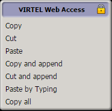 Entry Point Summary Display
Field Contents¶
- Name:
The name of the entry point.
- Description:
Description of the entry point.
- Transaction:
Prefix of the names of the transactions associated with this entry point (maximum 6 characters).
Modifying an entry point definition: - To modify the definition of an entry point, enter the required information in the field then press [PF1]. Several definitions may be modified simultaneously. If the field you wish to modify does not appear on the summary screen, position the cursor on the entry and press [PF12] to display the definition detail screen. Modifications do not take effect until you press [PF1]. Certain modifications, for instance a modification to an entry point used by a line, require a restart of VIRTEL.
Deleting an entry point definition: - To delete a definition, position the cursor on the name of the entry to be deleted and press [PF2]. The line associated with the entry to be deleted will appear highlighted with the message CONFIRM DELETE. Press [PF2] again to confirm deletion. The message DELETE OK confirms successful completion of the operation. Repeat the procedure for each entry to be deleted.
Adding an entry point definition: - To add a new definition, press [PF12] at the summary screen, either with the cursor on an existing definition to copy certain of its attributes, or on an empty line to create a new definition.
Transaction Display¶
To access the list of transactions associated with an entry point, position the cursor on the desired entry point and press [PF4]. The transaction management menu will then appear.
Detail Display¶
To display the details of an entry point, position the cursor on the desired entry point in the summary screen and press [PF12].
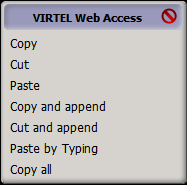 Entry point detail display
Parameters¶
- Name
Represents the name of the entry point as specified in a logon sequence, or in the “Entry point” field of a terminal, line, or rule definition.
- Description
Describes the entry point.
- Transactions
Indicates the prefix (0 to 6 charaters) of the transactions associated with this entry point.
- Last page
This field, which is used only for HTTP connections, indicates the name of the HTML page which will be displayed after the connection with the host application terminates. If blank, then the default page (whose name is equal to the entry point name) will be displayed.
Note
For Minitel entry points, the “Last page” field is not displayed, and the “Videotex key” field is displayed instead.
- Videotex key
This field, which is used only for Minitel connections, indicates the key word used to direct the request to the Minitel tree structure.
Note
If routing is not necessary, for example for STI or JOUTEL, the keyword $NONE$ may be used.
- Transparency
Indicates the type(s) of external server(s) where translation from ASCII to EBCDIC must not used.
- Time Out
User inactivity timeout period (in minutes). If the user (or calling terminal) sends no messages during this period,the “Do if timeout” procedure is invoked. This timeout takes effect only for terminals using this entry point via HTTP, VIRTELPC, or X25 connections. It has no effect for 3270 connections. The default is 720 minutes. A value of 0 implies no timeout.
- Do if timeout
Action to be taken if the value specified in the “Time Out” field is exceeded.
- 0
Break the session.
- 1
Sound an alarm, the break the session if user takes no action.
- 2
Generate an inaudible alarm to avoid X25 PAD timeout.
Note
While the terminal is connected to an external server application, session outage can also occur if the timeouts specified in the external server definition are exceeded.
- Emulation
Indicates the type of emulation if the terminal using the entry point is not a 3270.
- BORNE
For Minitels without accentuated character support.
- EBCDIC
For asynchronous connections without ASCII / EBCDIC translation.
For SMTP connections.
- HTML
For HTTP connections.
- HOST4WEB or H4W
For HTTP connections. Same as HTML, except that it also allows HOST4WEB commands to be embedded in 3270 screens (for details, refer to the “Programming Interfaces” section in the VIRTEL Web Access Guide).
- MINITEL
For Minitel connections in 40 or 80 column mode.
- PC
For connections via VIRTEL/PC.
- VT
For VT100 or VT200 type connections.
- X25
For connections via Reverse-X25 or APPC2 lines.
- $NONE$
For simple terminals in LUTYPE0 mode with ASCII translation. Even or odd parity, if required, can be specified at the line level.
- $NONE$-E
Same as $NONE$ but without ASCII translation.
- Signon program
Indicates the name of the program used to control user sign-on with the active security tool. If this field is not completed, no sign-on control is performed. Allowable values for this field are listed in section 1.4.4 117.
- Menu program
Indicates the name of the program which presents the list of transactions which the user is allowed to access. Permissible values are listed in section 1.4.5.
- Identification scenario
For emulation type MINITEL: Indicates the name of the program responsible for physical identification of Minitels connecting to VIRTEL. For all other emulation types: Indicates the name of the presentation module containing the identification scenario for this entry point.
Scenarios are described under the heading “Presentation modules” in the VIRTEL Web Access Guide.
- Type 3 compression
Indicates whether this entry point allows the use of level 3 compression. For more information on this subject, refer to “Parameters Of The Terminal”. An ‘X’ in this field activates support for level 3 compression.
- Mandatory identification
Indicates whether connections made via VIRTEL/PC must present a physical identification of the connecting PC. Refer to the chapter VIRTEL PC/VT100 for more information on this subject. An ‘X’ in this field activates the PC identification process.
- 3270 swap key
Indicates the function key which allows the user to return from a transaction to the Multi-Session Menu. Permissible values are PF1 to PF24, PA1, PA2, PA3. If this field is blank, the swap key is specified by the SWAP parameter in the VIRTCT.
- Extended colors
An ‘E’ in this field indicates support for 3270 extended attributes and colors. An ‘X’ indicates support for 3270 extended attributes and colors together with support for DBCS (Double Byte Character Set).
Signon Programs¶
The Signon Program field of the entry point indicates the name of the program used to control user sign-on. The following signon programs are supplied with VIRTEL:
- VIR0020A
Standard program for sign-on processing by entry of USER/PASSWORD sequence via sign-on screen.
- VIR0020B
Program used to process a logon sequence containing USER and PASSWORD. The logon sequence must conform to the following format: LOGON APPLID(ACBVIRTEL) DATA(EP USER PASSWORD) or EP (where EP is the entry point name).
- VIR0020C
Program identical to VIR0020B, but without any validity check on the password.
- VIR0020H
Sign-on program with WINDOWS user interface for HTTP mode.
- VIR0020M
Standard sign-on program for 40-column Minitel.
- VIR0020L
Standard sign-on program for 40-column Minitel by entry of USER and PASSWORD. The sign-on screen is produced with the help of a Videotex overlay whose name is the same as the entry point used. The source of this screen is in the member MAPSIGN. After changing the source, the resultant phase or load module can be placed into a separate LOADLIB concatenated to DFHRPL.
- VIR0020P
Program similar to VIR0020L which allows access to public transactions (those defined with security = 0), if sign-on is rejected by the security system.
Transactions¶
Introduction¶
A transaction is a named entity that allows access to an “application” at the host site. The term “application” may be either a VTAM application, a VIRTEL sub-application, an external server, or an HTML directory. Each transaction is known to the user by its external name, and defines the rules of connection / disconnection of the referenced application. When a security tool is used, for example VIRTEL security, only the transactions defined as resources appearing in the profiles of a user are accessible by that user. Each entry point has a list of associated transactions. The entry point management sub-application allows the administrator to manage the entry point and its associated transactions.
Summary Display¶
Press [PF4] at the entry point detail screen to display the list of associated transactions:
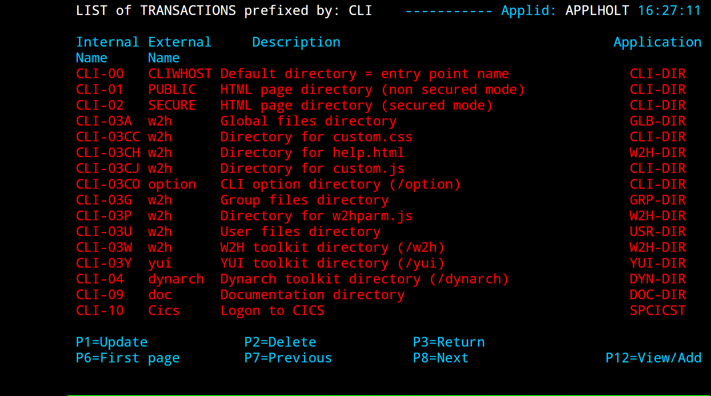 Transaction Summary Display
Field Contents
- Internal name
Indicates the internal name of the transaction as it is known to the system. If a security tool is used, this name must be defined as a resource. Only those users with the resource in one of their profiles can access this transaction.
Note
Note that on the Multi-Session Menu, these transactions appear by alphanumeric order of their internal name.
- External name
Indicates the name of the transaction as it is known to the end user. This name appears in field [10] of the Multi-Session Menu, as shown in the chapter describing Multi-Session. This is also the name by which the transaction is referenced in an HTTP request.
- Description
Caption associated with the transaction. This caption appears on the Multi-Session Menu.
- Application
Indicates the name of the application accessed via the transaction. This application can be a VTAM application, a VIRTEL sub-application, an external server, or a directory of HTML pages.
Navigation¶
The list can be positioned in the following ways:
- Search
Type the name, or the partial name, of the desired entity in the first line of the first column and press [Enter].
- [PF6]
Return to the first page of the list.
- [PF7]
Display the previous page of the list.
- [PF8]
Display the next page of the list.
Modifying a transaction definition - To modify the details of a transaction, type the required changes in the appropriate fields and press [PF1]. You can change more than one definition at a time. To modify a field not shown on the summary screen, position the cursor on the transaction and press [PF12] to display the transaction detail screen. Important note: Changes do not take effect until you press [PF1]. After updating a transaction definition, you must also update the entry point(s) concerned by pressing [PF3] twice (to return to the list of entry points) then [PF1] to register the change(s) to the entry point.
Deleting a transaction definition - To delete a definition, position the cursor on the name of the transaction to be deleted and press [PF2]. The line associated with the transaction to be deleted will appear highlighted with the message CONFIRM DELETE. Press [PF2] again to confirm deletion. The message DELETE OK confirms successful completion of the operation. Repeat the procedure for each transaction to be deleted.
Adding a transaction definition - To add a new definition, press [PF12] at the summary screen, either with the cursor on an existing definition to copy certain of its attributes, or on an empty line to create a new definition. Complete all required fields and press [ENTER]. The message CREATE OK indicates that the operation completed successfully
Detail Display¶
To access the detailed transaction definition, position the cursor on the desired transaction and press [PF12]. The transaction detail definition screen will then be displayed.
 Transaction Detail Screen - non-HTML transaction
Transaction Detail Screen - non-HTML transaction
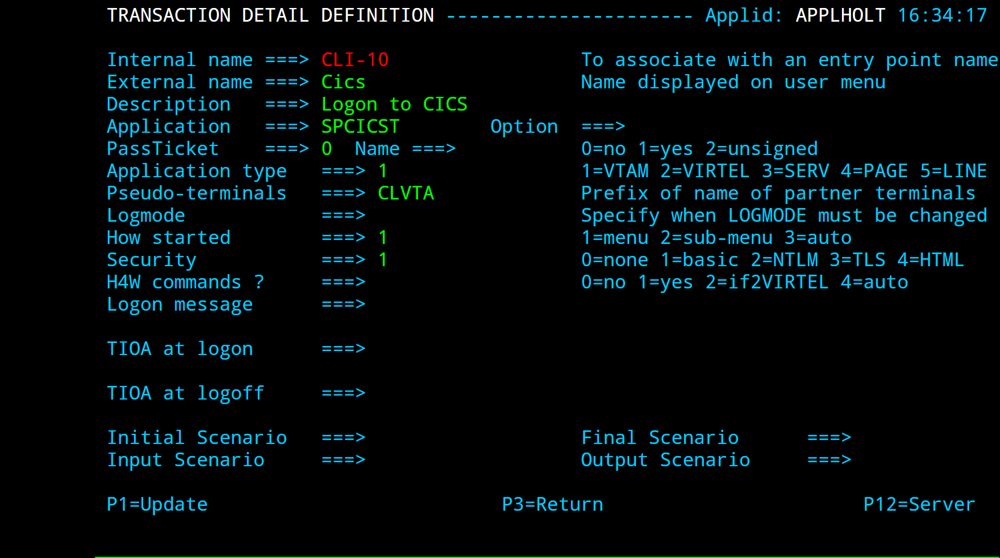 Transaction Definition Screen - HTML transaction
Parameters¶
- Internal name
The name of the transaction as it is known to the system. The first “n” characters of this name are the prefix by which the transaction is linked to one or more entry points. Transaction security is based on this internal name. It should be noted that the transactions are placed on the Multi-Session Menu in alphanumeric order of the internal name.
- External name
The name of the transaction as it is presented to the user in the selection screen. This is also the name by which the transaction is referenced in an HTTP request (see “VIRTEL URL formats” in the VIRTEL Web Access Guide).
- Description
The descriptive label associated with the transaction as it is presented to the user in the selection screen.
- Application
The name of the application associated with the transaction. This application can be a VTAM application, a VIRTEL sub-application, an external server, a directory containing HTML pages, or the name of a VIRTEL line. When the “Application Type” is 3 (external server), the following values have special meaning:
- &L
the server name is the same as the terminal name
- &R
the server name is the same as the relay name
- &1
the server name is the same as the “parameter” field of the rule which matched the incoming call
- =
(for incoming calls via a VIRPESIT line only) the server name is the same as the destination partner name specified in the PESIT file transfer header.
For application type 3 or 4, you can press [PF12] to display the detailed definition of the external server or HTML directory.
When the “Application Type” is 5, this field contains the internal or external name of a VIRTEL line. Application type 5 is used by the SEND$ TO and SEND$ VARIABLE-TO instructions (see “VIRTEL Scenarios” in the VIRTEL Web Access Guide)
- PassTicket
Indicates whether VIRTEL should generate les PassTickets for this application. Possible values are:
- 0
(default value) indicates that VIRTEL should not generate PassTickets for this application.
- 1
specifies that VIRTEL should generate a PassTicket, using the specified RACF application name, if the user has signed on to VIRTEL. The PASSTCK=YES parameter must also be specified in the VIRTCT.
- 2
specifies that VIRTEL should generate a PassTicket, even if the user has not signed on to VIRTEL. The PASSTCK=YES parameter must also be specified in the VIRTCT.
Note
Note: The value 2 implies that the user has supplied the userid in some other way, for example by means of a scenario containing the COPY$ VARIABLE-TO-SYSTEM,FIELD=(NAME-OF,USER) instruction (see VIRTEL Web Access Guide)
- Name
The name of the application as known to RACF for generation of PassTickets. This may be different from the VTAM application name.
- Application Type
Defines the type of application described in the “Application” field. Permissible values for this field are:
- 1
for a VTAM application
- 2
for a VIRTEL sub-application
- 3
for an external server
- 4
for a directory containing HTML pages
- 5
for a reference to a VIRTEL line
- Pseudo Terminals
Specifies the prefix of the name of the VIRTEL terminal which will be used to connect to the application. The value $LINE$ in the “Pseudo Terminals” field indicates that this transaction is reserved for HTTP connections using non-predefined terminals (see “HTTP connections with non-predefined LU names”).
- Logmode
The name of the new LOGMODE that MUST be used to connect to the application. This overrides any LOGMODE parameter specified in the URL or in an identification scenario.
- How started
Represents the desired startup mode for the transaction. Permissible values are as follows:
- 1
The transaction is integrated in the primary list. If authorised after security checking, it will appear in the primary Multi-Session menu. User intervention will be required to access this application, unless menu programs VIR0021B or VIR0021C are used.
- 2
The transaction is integrated in the secondary list. If authorised after security checking, it will appear in the Multi-Session sub-menu. User intervention will be required to access this application.
- 3
The transaction is integrated in the primary list with automatic startup when the terminal connects to VIRTEL. If several transactions defined with automatic startup appear in the primary list, only the last one in the hierarchy is activated at connection time.
Do not confuse automatic startup in transparent mode (menu program VIR0021B + transaction startup mode 1) with automatic startup offering the possibility to return to a selection menu screen (menu program other than VIR0021B or VIR0021C + transaction startup mode 3).
Note
Note than startup mode 4 which was present in VIRTEL prior to version 4.0 has been replaced by value 0 in the “Security” field.
- Security
The type of security applied to the transaction.
- 0
Public transaction. A public transaction is always available whatever security tool is used.
- 1
Secure transaction (Basic security). A secure transaction is only available to a user if authorized by the active security tool. For HTTP access, the user is prompted, if necessary, for a userid and password.
Note
if passphrase is not active then passwords will be truncated to the first 8 characters. Passphrase support is activated by the PASSPHRASE option of the SECUR keyword in the TCT. See the Virtel Installation Guide for further details.
- 2
Secure transaction (NTLM security). For HTTP access only, security type 2 allows VIRTEL to obtain the Windows userid of the user, without prompting the user to signon again. The active security tool must recognize the userid and grant access to the transaction. This type of security should only be used on a LAN or on an encrypted session.
- 3
Secure transaction (Certificate security). A transaction with type 3 security must be accessed via HTTPS (secure session), and the client browser must present a certificate recognized by the active security tool (RACF). The userid associated with the certificate must be granted permission by the security tool to access the transaction. Type 3 security is only possible when running z/OS V1R7 or later, using a secure connection provided by AT-TLS
- 4
Secure transaction (HTML security). Used with HTTP access, security type 4 allows VIRTEL to obtain the userid and password of the user from fields supplied in the HTML page. The fields must be declared by means of the DECLARE-FIELD-AS tag in the page template. For more details, refer to the section “Creating HTML and XML template pages: Signon and password management” in the VIRTEL Web Access Guide.
- Translation(s)
Type(s) of translation supported for MINITEL connections. Specify one or more of the following values:
- 0
Same type of translation required in the sub-server node definition.
- 1
3270 messages are processed in 80 column format but are only displayed as 40 columns unless otherwise specified (for example, if $%80 is present in the data stream).
- 2
3270 messages are processed in and displayed in 80 column format unless otherwise specified (for example, if $%40 is present in the data stream). Modes 1 and 2 are mutually exclusive.
- 3
3270 messages are processed in 40 column format. This mode is used only for certain IMS applications.
- 4
Automatic detection of translation mode. This mode supports applications which produce both 3270 messages and videotex messages. VIRTEL adapts the display format automatically according to the type of message being processed. For example suppose a transaction defined with translation modes 2 and 4 is accessed from a sub-server node. Messages from this application will be automatically displayed as if they were already in videotex format (mode 4) or displayed directly in 80 column format for other cases (mode 2). This translation mode is compulsory for SRTV applications. For transactions attached to an entry point type HTML, HOST4WEB, or H4W the field “Translation(s)” is replaced by the field “H4W commands”
- H4W commands
For HTTP connections, this field indicates under what conditions HOST4WEB commands should be processed. Specify one of the following values:
- 0
Never process HOST4WEB commands.
- 1
Always process HOST4WEB commands.
- 2
Process HOST4WEB commands only if the first field of the message begins with the characters “2VIRTEL”.
- 4
Process HOST4WEB commands if either (a) the entry point specifies emulation type HOST4WEB or H4W, or (b) the entry point specifies HTML and the first field of the message begins with the characters “2VIRTEL”. These values are meaningful only when the entry point specifies emulation type HTML, HOST4WEB, or H4W. For further details, refer to the “Programming Interfaces” section in the VIRTEL Web Access Guide.
- Logon message
Application type 1: Character string sent to the application as “Logon data” at connection time. This string may also contain certain script variables and orders as described below. Application type 3: For transactions associated with an entry point which specifies menu program VIR0021F or VIR0021G (see “Menu Programs”) this field is used to identify incoming calls. For type 4 (HTML directory definition) transactions, the field “Logon message” is replaced by the field “Check URL Prefix”
- Check URL Prefix
Application type 4: If the pathname of a URL matches the character string specified in this field, then the pathname corresponds to the VIRTEL directory whose name is specified in the “Application” field. See “How the path name corresponds to a VIRTEL directory” in the “VIRTEL URL formats” section of the VIRTEL Web Access Guide.
- TIOA at logon
Application types 1-3: Script to be run at application connection time. Scripts are described under the heading “Connection – Disconnection Scripts”. Application type 4: For type 4 (HTML directory definition) transactions having the same name as an entry point, the “TIOA at logon” field contains the default URL for the entry point. Refer to the “VIRTEL URL formats” section of the VIRTEL Web Access Guide for further details.
- TIOA at logoff
Application types 1-3: Script to be run before disconnecting from the application.
Initial Scenario
Final Scenario
Input Scenario
Output Scenario
For HTML transactions, each of these fields may contain the name of an HTML presentation module. For each field which is non-blank, VIRTEL will call the corresponding scenario (INITIAL, FINAL, INPUT, or OUTPUT) in the named presentation module. An OUTPUT scenario may also be referenced by a VIRTEL Multi-Session transaction.
Note
Scenarios are described under the heading “Presentation modules” in the VIRTEL User Guide.
Warning
After adding, deleting or updating a transaction, it is essential to update the entry points used by this transaction by pressing [PF1] at the entry point summary screen.
Connection / Disconnection Scripts¶
When connecting to an application, it may be useful, if desired, to automatically execute certain operations to direct the user to a defined point within the application. The most commonly used operations are application signon procedures. Similarly, when the user logs off from an application, it can be useful to run various commands to release application resources. These operations are called “connection and disconnection scripts”. Scripts are entered in the fields “TIOA at logon” and “TIOA at logoff” of a transaction, or in the “TIOA at start up” field of an external server, with the help of the language described below. A script can send data and 3270 attention keys to the application, send data to the terminal, and wait for specific data from the application.
Script Programming Language¶
A connection / disconnection script consists of a sequence of “clauses”. A clause consists of some data (which may contain embedded variables and orders) followed by a command. All commands, variables, and orders begin with the ‘&’ character.
Transmission and filter commands¶
The command acts upon the data which precedes it. The commands are as follows:-
Desired operation |
Command |
|---|---|
Transmit the preceding data to the application |
&/A |
Transmit the preceding data to the terminal |
&/T |
Ignore and discard the current application message |
&/I |
Wait until the application sends a message containing the character string specified in the preceding data |
&/W |
Same as &/W except that messages are still sent to the terminal while being filtered |
&/F |
Kill the script (connection / disconnection) |
&/K |
Note
Any blanks immediately following a &/ command are ignored.
For compatibility with versions of VIRTEL prior to 4.31, the / (slash) in the above commands may also be coded as the EBCDIC character whose hexadecimal value is X’4F’. In the US, Canada, and UK codepages, X’4F’ is represented by a vertical bar. In some European countries, X’4F’ appears as an exclamation point.
System variables¶
System variables are information known only to VIRTEL at the time of accessing an application. These variables are in the format &n where “n” represents the desired variable. Available information Corresponding variable:-
Available information |
Corressponding variable |
|---|---|
Transaction name |
&T |
VTAM terminal name |
&L |
Transaction external name |
&X |
Transaction description |
&D |
Application name |
&A |
Call User Data (12 bytes) |
&C |
Relay name |
&R |
User name |
&U |
User password |
&P |
Rerouting parameters |
&1, &82, &83,…, &8F |
URL parameter |
&=paramn= |
VIRTEL variable |
&=varname= |
- Note 1
System variables may also be coded in the Logon Message field.
- Note 2
The system variable &=name= is used to obtain the value of either a URL parameter or of a VIRTEL variable created by a scenario (described in the VIRTEL Web Access Guide). If both a URL parameter and a VIRTEL variable exist with the same name then the VIRTEL variable takes precedence.
Orders¶
Orders may be embedded in the clause data. Orders are used to set the 3270 (or Minitel) attention key to be sent by the following &/A command, to embed hexadecimal or special values in the data, or to cause the script to wait for the first message from the application, or to process a scenario.
Information to be sent |
Corresponding order |
|---|---|
Set the AID and cursor address for a 3270 read operation. See note 1 |
&*xxrrcc where xx is: F1-F9=PF1-PF9, 7A-7C=PF10-PF12, C1-C9=PF13-PF21, 4A-4C=PF22-24, 7D=Enter; rrcc is the cursor address in 3270 buffer address format |
Set the AID for a 3270 short read operation (note 2) |
&#yy or &*yy where yy is: 6C=PA1, 6E=PA2, 6B=PA3, 6D=Clear, FD=Attn |
Minitel keys in external server |
&*0Dxx40 where xx is: F1=Guide, F2=Repet, F3=Somm, F4=Annul, F7=Retour, F8=Suite, F9=Copier, 7B=EndPage, 7C=Corr, 7D=Envoi, 6D=Conn/Fin |
Data in hexadecimal (note 4) |
&’hhhhhhhhhhh’ |
Ampersand character (note 4) |
&& |
Wait for first message (note 3) |
&W |
Write preceding character string to console and discard |
&/M |
Start of repeating script for service transaction (note 5) |
&( |
End of repeating script for service transaction (note 5) |
&) |
Execute scenario (note 6) |
&/S |
Use tab key to skip to next available input field (note 7) |
&> |
- Note 1
If a function key occurs in the middle of a script, the transmission sequence for the function key must be &*xxrrcc&/A. Where the function key is at the end of the script, there is no need to add &/A. If &/A or end of script occurs with no AID key specified, the default is &*7D4040 (Enter with cursor at row 1 col 1).
- Note 2
Never use &/A to send PA keys or Clear to the application.
- Note 3
The &W order is processed only if it appears at the start of the script; otherwise it is ignored.
- Note 4
Orders &’hh…hh’ and && may also be coded in the Logon Message field.
- Note 5
&( and &) enclose a section of the script which will be repeated. When the script reaches the &) order, the transaction is converted into a “service transaction” and remains active waiting for similar requests from other users (see “Service transactions” in the VIRTEL Web Access Guide).
- Note 6
The &/S order executes a scenario. If coded in the connexion script (“TIOA at logon”), it executes the INITIAL scenario of the presentation module named in the “Initial Scenario” field of the transaction. If coded in the disconnexion script (“TIOA at logoff”), it executes the FINAL scenario of the presentation module named in the “Final Scenario” field of the transaction (see “Presentation modules” in the VIRTEL Web Access Guide). Any data preceding the &/S order is ignored. Any blanks immediately following the &/S order are ignored.
- Note 7
The &> order does not transmit anything and must be completed with a transmission order. This order can be concatenated as many times as necessary before transmission. Exemple : &>&> can be used to simulate two tab key usage.
Method of operation¶
If present, a script is first called when the initial connection is made to the application. VIRTEL examines the start of the script to see if it begins with the order &W (wait for first message from application). If so, then no further action is taken at this time, and script processing continues after the first message is received from the application. Otherwise, the first clause of the script is actioned according to its command code, as follows:
&/W, &/F, &/I : no further action is taken at this time, the clause will be reprocessed when the first message arrives from the application
&/T, &/A : the data preceding the command is transmitted to the terminal or application
&/K : the connection is scheduled for termination
Subsequently, VIRTEL processes one clause of the script each time a message arrives from the application. Each clause is actioned according to its command code, as follows:
&/W : VIRTEL tests whether the data preceding the &/W command appears in the message. If the data is not found, then the message is discarded, and the &/W clause is processed again when the next message arrives from the application. If the data is found, then the message is discarded and the next clause in the script is immediately processed.
&/F : VIRTEL tests whether the data preceding the &/F command appears in the message. If the data is not found, then the message is sent to the terminal, and the &/F clause is processed again when the next message arrives from the application. If the data is found, then the message is discarded and the next clause in the script is immediatelyprocessed.
&/I : the application message is discarded.
&/T, &/A : the data preceding the command is transmitted to the terminal or application.
&/K : VIRTEL will send the message and immediately disconnect the communication, without waiting for the response (asynchronous mode used with certain servers).
Data sent to the application by means of the &/A command must be constructed in the format expected by the application. In the case of a 3270 application, the message is in the form of a 3270 data stream. VIRTEL adds a standard 3-byte 3270 prefix (consisting of AID character and cursor SBA) which defaults to default is 7D4040 but may be overridden by a &* or &£ order embedded in the preceding script data. In the case of a Minitel application, VIRTEL adds the appropriate suffix (0Dxx) as indicated by an &* order embedded in the preceding script data (see table of script orders below).
Data sent to the terminal by means of the &/T command must be constructed in the same format as the application would generate. In the case of a 3270 application, the message must be in the form of a 3270 data stream prefixed by a 3270 command code and WCC. VIRTEL will translate the message to the format required by the terminal (for example, HTML or Minitel) as appropriate.
Script Examples¶
Note
In these examples, script commands are introduced by the preferred sequence &/ (ampersand slash). For compatibility with existing scripts created before version 4.31 of VIRTEL, the slash may optionally be replaced by the EBCDIC character whose hexadecimal value is X’4F’.
Connect to CICS (no sign-on) with automatic start of a transaction¶
In the simplest case, the CICS transaction code is entered in the field “TIOA at logon”. The script below simply sends the ABC1 transaction code to CICS at connection time:
Internal name ===> W2H-10 To associate with an entry point name
External name ===> Cics Name displayed on user menu
Description ===> Logon to CICS
Application ===> ACBCICS Application to be called
Application type ===> 1 1=VTAM 2=VIRTEL 3=SERV 4=PAGE 5=LINE
Pseudo-terminals ===> DEVT Prefix of name of partner terminals
Security ===> 0 0=none 1=basic 2=NTLM 3=TLS 4=HTML
Logon message ===>
TIOA at logon ===> ABC1
Connection script to start a CICS transaction
This example works only if the CICS TYPETERM definition specifies LOGONMSG(NO). If CICS is configured to send an initial message to the terminal at logon, by means of the LOGONMSG(YES) parameter, then a bracket error would occur when the above script is executed. To avoid this, the transaction code must be prefixed by &W to wait for the initial message to be delivered, as shown in the next example.
Connect to CICS and start transaction CESN with transmission of credentials¶
The variables &U and &P can be used to pass the current VIRTEL userid and password to the CICS signon transaction:-
Internal name ===> W2H-11 To associate with an entry point name
External name ===> Cics2 Name displayed on user menu
Description ===> Logon to CICS
Application ===> ACBCICS2 Application to be called
Application type ===> 1 1=VTAM 2=VIRTEL 3=SERV 4=PAGE 5=LINE
Security ===> 1 0=none 1=basic 2=NTLM 3=TLS 4=HTML
Logon message ===>
TIOA at logon ===> &WCESN&/ASignon&/F&*7D4EC9&'114BE9'&U&'114CF9'&P&/A
Connection script with automatic signon to CICS
This script waits for the initial message from CICS, then enters the transaction code CESN. It waits for the “Signon” prompt to be displayed, then enters the userid and password in two separate fields and sends the completed screen to the host. Security=1 is specified to ensure that the user is signed on to VIRTEL. The SBA orders 11xxxx identify the position of the userid and password fields in the CESN signon panel and may vary as a function of the site.
Connect to CICS VSE with ICCF sign-on and start transaction CEMT¶
The following script illustrates the use of a PF key:
Internal name ===> W2H-12 To associate with an entry point name
External name ===> ICCF Name displayed on user menu
Description ===> Logon to CICS VSE
Application ===> DBDCCICS Application to be called
Application type ===> 1 1=VTAM 2=VIRTEL 3=SERV 4=PAGE 5=LINE
Security ===> 1 0=none 1=basic 2=NTLM 3=TLS 4=HTML
Logon message ===>
TIOA at logon ===> REMOTE&/W&'11E35C'&U&'11E560'&P&/AEscape&/W&*F64040&/ACEMT&/A
Connection script with automatic signon to ICCF
This script waits for the ICCF signon screen (recognized by the word ‘REMOTE’), then enters the userid and password in two separate fields and sends the completed screen to the host. It waits for the ICCF main menu (recognized by the word “Escape”) and presses F6. It then enters the transaction code CEMT. The SBA orders 11xxxx identify the position of the userid and password fields in the ICCF signon panel and may vary as a function of the site.
Connect to TSO with USER and PASSWORD and await start of ISPF¶
This is an example of an HTTP transaction which uses the “Logon Message” field to pass the userid to TSO, followed by a script to complete the TSO/ISPF logon process:
Internal name ===> W2H-13 To associate with an entry point name
External name ===> Tso Name displayed on user menu
Description ===> Logon to Tso
Application ===> TSO Application to be called
Application type ===> 1 1=VTAM 2=VIRTEL 3=SERV 4=PAGE 5=LINE
Security ===> 1 0=none 1=basic 2=NTLM 3=TLS 4=HTML
Logon message ===> &U
TIOA at logon ===> TSO/E LOGON&/W&'11C9C3'&P&/A***&/W&/A
Connection script with automatic logon to TSO/ISPF
The script waits for the TSO/E LOGON panel for the specified userid, then enters the password into the appropriate field. It waits for the *** prompt to appear, and presses enter. Security=1 is specified to ensure that the user is already signed on to VIRTEL. The SBA order 11C9C3 identifies the password field (at row 8 col 20) in the TSO/E LOGON panel and may vary as a function of the site.
Service Transaction¶
This example shows a script which connects to CICS and repeatedly issues an enquiry transaction whose parameters are supplied in the URL of an HTTP request:
Internal name ===> W2H-15 To associate with an entry point name
External name ===> Cics5 Name displayed on user menu
Description ===> CICS Service Transaction
Application ===> ACBCICS2 Application to be called
Application type ===> 1 1=VTAM 2=VIRTEL 3=SERV 4=PAGE 5=LINE
Security ===> 1 0=none 1=basic 2=NTLM 3=TLS 4=HTML
Logon message ===>
TIOA at logon ===> Signon to CICS&/W&*F34BE9&/A&(TRA1&=MYPARAM=&/A&)
Connection script for service transaction
The first part of this script signs on to CICS using the default CICS userid. This part of the script is executed once only when the VIRTEL transaction is called for the first time. The remainder of the script, bracketed by the &( and &) orders, is executed repeatedly. Because the script has a repeating part, this transaction is known as a “Service Transaction”. Each time an HTTP request arrives in the form http://ipaddr:port/pagename+cics5?myparam=xyz123 it is dispatched to the service transaction, if one is available, and the script executes the CICS transaction TRA1xyz123 where xyz123 is the value of the URL parameter “myparam=” specified in the HTTP request. The result of this CICS transaction is returned to the requester using pagename as a page template. The request is then terminated, but the session between VIRTEL and CICS remains connected waiting for the next request.
External Servers¶
Introduction¶
The external server management sub-application allows the administrator to maintain the call parameters relating to the various servers available for outgoing calls. External server definitions allow users at 3270 terminals to access Videotex servers via an X25 network. Additionally, starting with VIRTEL version 4.14, the concept of an external server is extended to handle the routing of incoming and outgoing calls to and from X25 GATE/PCNE applications such as CFT and Inter.PEL. Starting with VIRTEL version 4.42, the external server may also be used to define the parameters for outbound calls to a PESIT/IP file transfer server via a VIRPESIT line.
External Server Management Sub-Application¶
The external server management sub-application is accessed by pressing [PF7] in the Configuration Menu, or [PF11] in the Sub-Application Menu, or from the Multi-Session Menu via a transaction referencing module VIR0031. This subapplication allows management of the parameters associated with each external server.
Security¶
When security is active, access to external server management from the Configuration Menu or the Sub-Application Menu is controlled by the resource $$SERV$$. When accessed by a transaction, the rules governing the management of transaction security apply. Security management is described in chapter 5 of the VIRTEL Users Guide.
Summary Display¶
The first screen displayed by the external server management sub-application shows a summary of existing definitions in alphanumeric order:
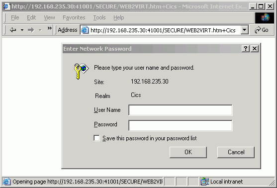 External Server Summary Display
Navigation¶
In browse, alter, or delete mode, it is possible to scroll the list of external servers under the control of VIRTEL.
- Search
Type the name (or partial name) of the required entity on the first line under the heading “Service”, then press [Enter].
- [PF6]
Return to the first page of the list.
- [PF7]
Display the previous page.
- [PF8]
Display the next page.
Modifying an external server definition - Type the desired modifications into the appropriate fields then press [PF1]. Multiple definitions can be modified at the same time. The message UPDATE OK indicates that the modifications have been accepted. If the modification affects a field not displayed on the summary screen, first position the cursor on the definition concerned, then press [PF12] to access the definition detail screen.
Deleting an external server definition - To delete a definition, position the cursor on the name of the service to be deleted and press [PF2]. The line associated with the service to be deleted will appear highlighted with the message CONFIRM DELETE. Press [PF2] again to confirm deletion. The message DELETE OK confirms successful completion of the operation. Repeat the procedure for each external server to be deleted.
Adding an external server definition - To add a new definition, press [PF12] at the summary screen, either with the cursor on an existing definition to copy its attributes, or on an empty line to create a new definition.
Detail Display¶
To access the detailed definition of an external server, position the cursor on the desired service in the summary screen and press [PF12]. The external server detail definition screen will then be displayed. To return to the configuration menu, press [PF3] or [Clear].
 External Server Detail display
External Server Detail display
Parameters¶
- Name
Contains the name of the service as displayed to the user in the “Call External Server” screen. This name may also be referenced in the “Application” field of a type 3 transaction.
- Description
Description of the service as displayed to the user in the “Call External Server” screen.
- Number
For outbound calls via an X25 line:
The X25 call number required to access the service.
If the service is invoked by an X25 incoming call, the called number can be defined as “=”. In this case, the called number for the outgoing call will be copied from the incoming call packet. In the case of an external server which processes outgoing calls originating from an application linked to VIRTEL via an AntiGATE line (CFT, Pelican), the value “=” indicates that the called number will be supplied by the application. In the case of an external server which processes outgoing calls originating from a VIRKIX application, the “Number” field must be blank, which indicates to VIRTEL that the called number and the caller number, as well as the data, facilities, and CUD0 (if applicable), will all be supplied by application. However, if the “Caller” field of the external server is non-blank, then this value will override the caller number supplied by the application. For this type of external server, the entry point must contain a transaction whose external name is “Mirror” as the first transaction.
For outbound calls via a VIRPESIT line:
The IP address of the partner in the form nnn.nnn.nnn.nnn
- Data
For outbound calls via an X25 line:
User data. The contents of this field will be converted to ASCII and placed in the outgoing call packet immediately following the contents of the CUD0 field. If the service is invoked by an X25 incoming call, the data can be defined as “=”. In this case, the Call User Data for the outgoing call (Data and CUD0 fields) will be copied from the incoming call packet. In the case of an external server invoked by an HTTP request, for example:
GET /PUBLIC/WEB3270.htm+videotex+SERVICE1
the value “=” indicates that the parameter (SERVICE1 in this example) will be placed in ASCII in the outgoing call packet immediately following the CUD0 field.
For outbound calls via a VIRPESIT line:
The TCP port number of the partner.
- Line number
Specifies the internal name of the line on which the outgoing call will be made. The line type may be either X25 (GATE, FASTC, XOT, AntiGATE, AntiPCNE, AntiFC) or TCP with protocol VIRPESIT. “*” indicates that the first available line will be used.
Note
For users of VIRTEL prior to version 4.20:
External server definitions which were created using a version of VIRTEL prior to 4.20 refer to the line using a single character name. When processing these definitions, VIRTEL selects the first line whose internal name begins with the character specified, and VIRTEL displays the complete name of the selected line in this field on the external server definition detail screen. When the external server definition is updated for the first time under VIRTEL 4.20 or later, the single character reference is replaced in the external server definition by the complete line name. Prior to VIRTEL version 4.20, if the “Line number” field of the external server was blank, the line selected for the outgoing call was the first line whose internal name began with the figure 1. From VIRTEL version 4.20 onwards, it will be necessary to update any such external server definitions, by specifying explicitly the full internal name of the required line.
- Backup line
The internal name of the backup line which will be used for the outgoing call if the primary line is not available. Following an error on the primary line, VIRTEL uses the backup line for all subsequent calls. Similarly, following an error on the backup line, VIRTEL switches back to the primary line for all subsequent calls. From version 4.24 onwards, if both the primary and backup lines are available and operational, both will be used for outgoing calls. For each line, VIRTEL maintains a counter of outgoing calls which have been made but which have not yet received a response. Before making each call, VIRTEL compares the counters of each of the two lines, and selects the line with the lowest number of calls awaiting response. This procedure has the effect of balancing the load between the two lines, and bypasses possible blockages caused by router errors. The rules for specifying the backup line are the same as for the primary line.
- Caller
Optional caller number to be placed in the outgoing call packet. If the service is invoked by an X25 incoming call, the caller number can be defined as “*” or “=”. In this case, the caller number for the outgoing call will be copied from the incoming call packet.
- Emulation
Type of emulation required. Possible values are:
- 0
no emulation (Called by FA25 API)
- 1
VIRTELPC emulation
- 2
Minitel 40 column emulation, reverse X25, or VIRPESIT
- 3
Minitel 80 column emulation
- 4
VT100 emulation
- 5
3174 switched node
- 6
VT200 emulation
- 7
Minitel emulation with LECAM via VIRNT
- 8
BULL emulation
- Character set
Type of characters expected by the external server.
- 1
ASCII 7 bits
- 2
ASCII 8 bits
- 3
EBCDIC
- Server time out
Timeout period (in seconds) for the server. VIRTEL will disconnect the call if the server sends no messages during this period. 0 indicates that there is no timeout.
- User time out
Timeout period (in minutes) for the caller. VIRTEL will disconnect the call if the caller sends no messages during this period. If 0 is specified, the value of the TIMEOUT parameter in the VIRTCT is used instead.
- Cut off warning
Type of message sent to the user before disconnection occurs due to user time out. Possible values are:
- 0
User receives no warning of disconnection
- 1
User is warned by an audible ‘bip’ 30 seconds before disconnection
- 2
User is warned by a message 30 seconds before disconnection or if the server does not respond
- Price level
The tariff for this service. Possible values are:
- 0
Cost is not calculated for this service
- n
(n is a value from 1 to Z), the cost of the call is calculated and presented to the user at the end of the connection. The values of n are defined in VIRTEL exit 7 (see VIRTEL Installation Guide).
- Secret
1 indicates that this service will not appear in the list of servers shown to the user in the “Call External Server” screen. This value is typically used in external server definitions which are intended to be called only by a type 3 transaction.
- Facilities
Optional facilities (in hexadecimal) to be placed in the X25 call packet.
If the service is invoked by an X25 incoming call, the facilities can be defined as “=”. In this case, the facilities for the outgoing call will be copied from the incoming call packet.
If neither packet size (42) nor window size (43) appears in the facilities specified here or copied from the incoming call packet, then VIRTEL will generate packet size and window size facilities fields in the outgoing call packet according to the values specified in the outbound line definition.
- CUD0 (hex)
Protocol indicator (2 to 8 hexadecimal characters) to be placed in the outgoing call packet before the user data. If this field is blank, the default value is 01000000 (indicating PAD protocol).If the value of the “Data” field is “=” then the “Data” and “CUD0” will be copied from the incoming call packet.
- TIOA at start up
Contains a connection script to be run immediately after connection to the server. For more information, see “Connection – Disconnection Scripts”.
Connection Modes¶
There are various methods of connecting terminals to VIRTEL. This chapter includes the WELCOME and RELAY modes of connection
WELCOME mode¶
Exclusively for 3270 terminals, WELCOME mode allows 3270 terminals to connect to VIRTEL without being predefinied. There are two conditions which must be fulfilled: - The ACCUEIL parameter in the VIRTCT must be set to YES, - The connecting terminal must not match any existing fixed terminal definition or terminal pool definition.
In this mode, terminals not defined in VIRTEL can connect, but they cannot benefit from compression or full Multi- Session functionality. The first screen displayed depends on the characteristics of the entry point used. If no entry point is used, each terminal connecting in WELCOME mode will see the VIRTEL sign-on screen, or the Multi-Session Menu, or the Configuration Menu depending on the options specified in the VIRTCT for the SECUR and MULTI parameters.
If the Multi-Session Menu is accessible from a terminal connected in WELCOME mode, it is regarded simply as a selection screen. Thus, when an application is selected, VIRTEL connects the terminal directly to this application and relinquishes control of the terminal. In this case, VIRTEL functions somewhat like a dynamic USSTAB.
RELAY mode¶
3270 terminals can be connected in RELAY mode if a suitable definition exists in the system. The relays are defined to VTAM by means of APPL statements. Each terminal connected in this way can benefit from VIRTEL compression and/or Multi-Session functionality. Whether a sign-on screen or a Multi-Session Menu is displayed depends on the characteristics associated with the entry point used. When no entry point is used, the rules described in the previous paragraph apply.
Terminal Connection Types¶
The definition of a terminal / relay pair can be accomplished in various ways: by means of a fixed entry; by inclusion in a physical pool (which may be dynamic or non-dynamic); or by means of a reserved entry (logical pool). A fixed entry is a definition which can only be used by one specific terminal. A physical pool is a generic definition which can be shared by several different terminals. A logical pool is a reserved definition which is used not for connecting a terminal to VIRTEL, but for connection to a VTAM application. This definition allows the same physical terminal, for example a Minitel, to be presented to applications with different relays depending on the context. Each type of definition can be explicit or repeated.
- . index::
pair: Connection Modes; Explicit Fixed Terminal entries
Explicit fixed entries¶
Each terminal in the group is explicitly named within VIRTEL. This mode of definition is useful when a group of relays must be attached to a line via a common terminal name prefix, but the relay LU names do not follow a numeric pattern. The following example shows a group of terminals and corresponding relay LU names associated with a line via prefix PCN1:
LIST of TERMINALS ---------------------------------- Applid: SPVIRH1 18:15:52
Terminal Repeated Relay Entry Type I/O Pool 2nd Relay
PCN1TM01 0001 PARIS 3 1
PCN1TM02 0001 ROMA 3 1
PCN1TM03 0001 BERLIN 3 1
PCN1TM04 0001 BRUSSEL 3 1
PCN1TM05 0001 DENHAAG 3 1
PCN1TM06 0001 KOBNHAVN 3 1
PCN1TM07 0001 LONDON 3 1
PCN1TM08 0001 DUBLIN 3 1
P1=Update P2=Delete P3=Return P6=1st Page
P7=Page-1 P8=Page+1 P12=Details
Explicit fixed terminals
Repeated fixed entries¶
Only the first terminal in the list is defined. The repeat count indicates the number of terminals which VIRTEL will create. The numeric portion of the terminal name, relay name, and 2nd relay name (if supplied) are incremented for each occurrence of the terminal.
Note
The repetition increment takes effect from the rightmost numeric character and continues until the next nonnumeric character to the left. The increment is decimal and not hexadecimal.
Examples
In the examples shown below: - Terminal TERM0001, relay RELAY001, repetition 0016 causes the creation of 16 terminals TERM0001 to TERM0016 with relays RELAY001 to RELAY016. - Terminal G001T001, relay RELAY200, repetition 0020 causes the creation of 20 terminals G001T001 to G001T020 with relays RELAY200 to RELAY219. - Terminal TER00LUA, relay REL00CVA, 2nd relay FIX00CVA, repetition 0100 causes the creation of 100 terminals TER00LUA to TER99LUA with relays REL00CVA to REL99CVA and 2nd relays FIC00CVA to FIC99CVA. - The remaining examples show invalid repetitions caused by improper definitions. In each case the size of the numeric portion of one or more of the names is insufficient to allow the generation of a unique name for each occurrence in the repeat range.
LIST of TERMINALS ---------------------------------- Applid: SPVIRH1 18:13:49
Terminal Repeated Relay Entry Type I/O Pool 2nd Relay
TERM0001 0016 RELAY001 PC 2 3
G001T001 0020 RELAY200 3 3
TER00LUA 0100 REL00CVA 3 3 FIC00CVA
TERX0LUB 0015 REL00CVB 3 3 FIC00CVB
TER00LUC 0015 RELX0CVC 3 3 FIC00CVC
TER00LUD 0015 REL00CVD 3 3 FICX0CVD
TER90LUE 0015 REL00CVE 3 3
P1=Update P2=Delete P3=Return P6=1st Page
P7=Page-1 P8=Page+1 P12=Details
Repeated fixed terminals
Physical Terminal Pools¶
Physical pools allow 3270 terminals to connect to VIRTEL and to be assigned a relay LU, without the need to create an individual defininition for each connecting terminal. A relay LU is assigned from the physical pool at the time the terminal connects to VIRTEL. There are two types of physical pool, dynamic and non-dynamic, as described later.
Whether or not a pool is dynamic, the definition of a physical pool is indicated by the presence of a “?” character in the first position of the terminal name. The next three characters denote the characteristics of the pool. The last four characters are free-format and serve to distinguish one definition from another.
A physical pool thus has a name in the format ?xxxyyyy.
The concept of a physical pool only applies to 3270 terminals. Other types of terminal cannot be defined by means of a physical pool.
Although a physical pool allows connection of a large number of terminals, it is sometimes necessary to restrict the connection to certain types of terminals This selection is done with the three characters represented by “x” in the name of the physical pool definition.
- 1st character
Tests the terminal type.
- *
No restriction on terminal type
- S
SNA terminal
- N
Non SNA terminal
- 2nd character
Tests the terminal model
- *
No restriction on model
- 2 to 5
Restricted to specified model
- 3rd character
Tests colour support
- *
No restriction on colour support
- C
Colour terminal
- N
Monochrome terminal
Examples:
?S**YZABVIRTEL tests only if the terminal is SNA.
?S3CYZABVIRTEL tests if the terminal is SNA model 3 colour.
Dynamic Terminal Pools¶
In a dynamic physical pool, the associated relay is defined by a combination of alphanumeric characters and “=” signs. Each “=” sign will be dynamically replaced by the value of the corresponding character in the name of the connecting terminal.
For example, for a definition specifying VIR===== as the relay name, each terminal connecting to VIRTEL will be allocated a relay whose first three characters are VIR and whose last five characters are the last five characters of the terminal LU name. VIRTEL must be able to open a VTAM application LU for each possible relay defined in the pool. The use of the VTAM generic character “?” allows all possible relay names to be defined to VTAM by a single APPL statement, as shown in the following example:
VIR????? APPL AUTH=(ACQ,PASS)
A single definition may be sufficient to connect all 3270 terminals in the network.
Non-Dynamic Terminal Pools¶
In a non-dynamic physical pool, the associated relay is defined by a combination of alphanumeric characters without “=” signs. A given terminal may be assigned a different relay on each connection according to availability. Each relay in the pool must be defined to VTAM by means of an APPL statement.
It is advisable to define as many entries as there are terminals to be connected.
Terminal Pool Definition Examples¶
Physical Pool¶
In the examples shown below, ?***0000 is a dynamic physical pool which allows connection of an unlimited number of terminals. ?S5CTM01 is a non-dynamic physical pool which allows connection of up to 8 terminals (of type 3270-5 SNA Colour) which will be assigned relay names VIR5LU01 to VIR5LU08.
LIST of TERMINALS ---------------------------------- Applid: SPVIRH1 18:13:49
Terminal Repeated Relay Entry Type I/O Pool 2nd Relay
?***0000 VIR===== PC 2 3
?S5CTM01 0008 VIR5LU01 PC5 2 3
P1=Update P2=Delete P3=Return P6=1st Page
P7=Page-1 P8=Page+1 P12=Details
Physical pools of terminals
Logical pool¶
A logical pool is a group of relays which are not permanently assigned to any terminal. Instead, the relays in the group are available for allocation by terminals as and when required. The logical pool is defined as a group of terminals (the definitions can be explicit or repeated) whose “*Pool name” field contains a name prefixed preceded by the character “*”. The terminal name is not significant, except to distinguish it from other terminal definitions. Terminals which use the pool specify the pool name (with the “*” prefix) in their relay name field. The difference between a logical pool and a physical pool is that a relay in a physical pool is assigned when the requesting terminal connects, whereas a relay in a logical pool is assigned at the time the requesting terminal needs the relay to connect to a VTAM application.
In the example shown below, W2HTP000 is a logical pool whose pool name is *W2HPOOL. The logical pool contains 16 relay LU’s named RHDVT000 to RHDVT015, with associated printer LU’s named RHDIM000 to RHDIM015. The relays in 7. Terminals 117 the *W2HPOOL logical pool are available for use by terminals CLVTA000-015, DEVTA000-015, and HTVTA000-015. Appropriate VTAM APPL statements must be provided for RHDVT??? And RHDIM???.
LIST of TERMINALS ---------------------------------- Applid: SPVIRD1 18:02:53
Terminal Repeated Relay Entry Type I/O Pool 2nd Relay
?***0000 RVTAM=== PC 2
CLLOC000 0010 3 3
CLVTA000 0016 *W2HPOOL 3 3
DELOC000 0010 3 3
DEVTA000 0016 *W2HPOOL 3 3
HTLOC000 0016 3 3
HTVTA000 0016 *W2HPOOL 3 3
SMLOC000 0016 SMTP 3 3
W2HIM000 0016 RHDIM000 S 1
W2HTP000 0016 RHDVT000 3 3 *W2HPOOL RHDIM000
P1=Update P2=Delete P3=Return P6=1st Page
P7=Page-1 P8=Page+1 P12=Details
Definition of a logical pool of terminals
Terminals using a logical pool are defined with a “Relay” field referencing the logical pool rather than a VTAM APPL statement.
Terminal Pool Selection¶
When a terminal is defined to a logical pool, the selection of a pool is managed automatically by VIRTEL at connection time. At connection time a terminal entry from the logical pool is selected starting at the highest available entry. That entry will be associated with a physical group of predefine terminals each associated with a logical pool. The first available entry of that physical group will be used as the terminal definition. From that terminal definition we derive the VTAM LUNAMES for 3270 and printer definitions for a 3270 application relay.
Using the above definitions the following selection would occurr for a 3270 application where the Virtel transaction uses a prefix of HTVTA. The incoming connection would select a logical entry from logical pool *W2HPOOL, assuming a line prefix of HT, would select from the range HTVTA000 - HTVTA015. The highest would be HTVTA015 if this is the first connection. Physical terminals defined to *W2HPOOL are W2HTP000 - W2HTP015. The connection would take the first entry in this group, in this case W2HTP000. W2HTP000 is defined as having a 3270 relay LUNAME of RHDVT000 and an associated printer relay of RHDIM000. These LU names would be used to support the 3270 session.
Terminal naming and order conventions¶
In selected the correct physical terminal to represent a Virtel connection Virtel uses a selection logic based on highest logical pool entry associated with a line to first physical terminal entry associated with the logical pool. For example, in the screen belowe four logical pools are defined to line E-HTTP. The line is defined with a prelix of EH.
 Terminals definitions associated with a line
Terminals definitions associated with a line
There is also a physical terminal defined to logical pool *URLPOOL named EHTRMEH0. This has a 3270 relay name of EHVTA300 and is associated with a printer relay EHVIM300. The printer relay is also defined as a physical terminal entry EHPRTEH0.
The highest entry within the logical pools associated with the line is EHVTA209 in pool *IPPOOL. When a connection comes in this entry will be used if it is available. To see the physical terminals associated with this pool we have to list all the terminals defined to Virtel.
Terminals associated with a pool IPPOOL
The first entry is IPTRM100. This entry will be used in supporting the session associated with the logical terminal pool entry EHVTA209. This entry has a 3270 relay of EHVTA100 and a printer LUNAME of EHVM100. Again the printer entry would be defined as a physical terminal. In this case it is defined as physical entry IPPRT100.
Printer terminal definition IPPRT100
Logging on with a 3270 TSO application will present the following screen. In the OIA rea, bottom left, the associated LUNAMEs can be seen - EHVTA100 and printer EHVIM100. These of course must be defined to VTAM.
 Connection to 3270 application
Connection to 3270 application
In the console log we can see the logical pool entry to physical terminal entry associations:-
13.38.46 JOB01825 VIRT906I HTTP-EDS SOCKET 00030000 CALL FROM 192.168.92.80:47730 < Call coming in >
13.38.46 JOB01825 VIRHT51I HTTP-EDS CONNECTING EHVTA209 TO 192.168.92.80:25094 < Highest Logical pool entry selected from IPPOOL>
13.38.46 JOB01825 VIR0919I EHVTA209 RELAY EHVTA100(IPTRM100) ACTIVATED < First physical terminal associated with IPPOOL >
13.38.46 JOB01825 VIR0919I EHVTA209 RELAY EHVIM100(IPPRT100) ACTIVATED < Associated printer definition associated with IPTRM100 >
The naming of logical pools is important so that in rule processing the correct pool is selected. The general rule being that pools associated with rule selections should be lower in alphabetic ranking than general non-rule pools. This will ensure that non-rule or default connections use logical terminals from the higher pool definitions.
Rules for opening relay ACBs¶
For explicit or repeated fixed entry definitions, the relay ACBs are opened at VIRTEL startup time. For terminals defined in a physical pool, the relay ACBs are opened at terminal connection time. For terminals which reference a logical pool, the relay ACB is opened only when accessing an application.
Use of a terminal logical pool¶
When a single terminal must be presented under a different name according to the applications it logs on to across the same line, a logical pool must be used.
Note
Logical pools are not usable on X25 Fast-Connect lines managed by NPSI. The following examples reference type 3 (Fast-Connect) terminals, used for example on an XOT line.
As a concrete example, suppose that Minitels use an X25 line with 50 logical channels to logon to 3 distinct applications under different names according to sub-address or a specific user data value. The first two applications are accessible via the same entry point ENTRYP01, the third via entry point ENTRYP02. Applications APPLI01, APPLI02, APPLI03 must be accessed via relays with prefixes AP01R, BP02R and CP03R respectively. The first application only allows 5 simultaneous logons, the second has no limit, and the third allows 2 simultaneous logons. The set of VIRTEL definitions to resolve this problem is as follows.
Terminal Definitions
The definition of the physical terminals and their association with the 3 sub-groups of logical terminals belonging to the same pool is:
DEFINITION OF X25 TERMINALS
Terminal Repeat Relay Entry Type Compression 2nd Relay
XOTF0001 0050 *POOL001 Libre 3 2 Vide
DEFINITION OF 3 GROUPS OF RESERVED TERMINALS
Terminal Repeat Relay Entry Type Compression 2nd Relay
ARESA001 0005 AP01R001 Libre 3 2 Libre
BRESA001 0050 BP02R001 Libre 3 2 Libre
CRESA001 0002 CP03R001 Libre 3 2 Libre
Note
These 3 terminal groups contain the value *POOL001 under the heading “*Pool name” in their definition. When virtual printers are associated with a logical pool, they may be defined as fixed explicit or repeated entries, but they must not be placed in a logical pool.
Entry point definitions
The two entry points are assigned transactions TRPE01 and TRPE02 respectively.
DEFINITION OF ENTRY POINTS
Name Description Transactions
ENTRYP01 EP for APPLI01 and APPLI02 TRPE01
ENTRYP02 EP for APPLI03 TRPE02
Transaction definitions and terminal selection
Transactions TRPE0101, TRPE0102 and TRPE0203 are defined as illustrated below.
DEFINITION OF THE FIRST TRANSCACTION FOR ENTRYP01
Nom interne ===> TRPE0101 Pour l'associer a un point d'entrée
Nom externe ===> APPLI-01 Nom affiche dans le menu utilisateur
Description ===> Application 01 avec terminaux ARESA
Application ===> APPLI01 Application gérant la transaction
Alias ===> Nom suite a CLSDST PASS
Type d'application ===> 1 1=VTAM 2=VIRTEL 3=SERVEUR 4=PAGES
Terminaux ===> ARESA Préfixe des terminaux associés
DEFINITION OF THE SECOND TRANSCACTION FOR ENTRYP01
Nom interne ===> TRPE0102 Pour l'associer a un point d'entrée
Nom externe ===> APPLI-02 Nom affiche dans le menu utilisateur
Description ===> Application 02 avec terminaux BRESA
Application ===> APPLI02 Application gérant la transaction
Alias ===> Nom suite a CLSDST PASS
Type d'application ===> 1 1=VTAM 2=VIRTEL 3=SERVEUR 4=PAGES
Terminaux ===> BRESA Préfixe des terminaux associés
DEFINITION OF THE FIRST TRANSCACTION FOR ENTRYP02
Nom interne ===> TRPE0201 Pour l'associer a un point d'entrée
Nom externe ===> APPLI-03 Nom affiche dans le menu utilisateur
Description ===> Application 03 avec terminaux CRESA
Application ===> APPLI03 Application gérant la transaction
Alias ===> Nom suite a CLSDST PASS
Type d'application ===> 1 1=VTAM 2=VIRTEL 3=SERVEUR 4=PAGES
Terminaux ===> CRESA Préfixe des terminaux associés
Terminal Connection Examples¶
This section presents a number of examples covering the definitions relating to terminals and details the parameters required on the VIRTEL and VTAM sides. The list is not exhaustive.
3270 terminal in WELCOME mode¶
This mode allows any terminal to logon to VIRTEL. The ACCUEIL parameter in the VIRTCT must be set to YES. There must be no definition which allows an application relay to be assigned to the terminal.
3270 terminal in RELAY mode¶
A VTAM APPL statement must be defined for each terminal. If there is no such definition then message VIR0005W is issued at VIRTEL startup time. Example definitions:
DEFINITION EXPLICITE
Terminal Répété Relais Entrée Type Compression 2eme Relais
TERM0001 0000 RELAY001 Libre 2 Libre Vide
TERM0002 0000 RELAY003 Libre 2 Libre Vide
TERM0003 0000 RELAY004 Libre 2 Libre Vide
TERM0004 0000 RELAY005 Libre 2 Libre Vide
DEFINITION REPETEE
Terminal Répété Relais Entrée Type Compression 2eme Relais
TERM0001 0004 RELAY001 Libre 2 Libre Vide
DEFINITION DYNAMIQUE
Terminal Répété Relais Entrée Type Compression 2eme Relais
?***0001 0000 RELAY=== Libre 2 Libre Vide
DEFINITION EN POOL NON DYNAMIQUE
Terminal Répété Relais Entrée Type Compression 2eme Relais
?***0001 0000 RELAY001 Libre 2 Libre Vide
?***0002 0000 RELAY002 Libre 2 Libre Vide
?***0003 0000 RELAY003 Libre 2 Libre Vide
?***0004 0000 RELAY004 Libre 2 Libre Vide
Asynchronous terminal on an X25 or XOT line¶
A VTAM APPL statement must be defined for each terminal. If there is no such definition then message VIR0005W is issued at VIRTEL startup time. Example definitions:
EXPLICIT DEFINITION WITHOUT PSEUDO-PRINTER
Terminal Répété Relais Entrée Type Compression 2eme Relais
X25F0001 0000 RX25F001 Libre 3 2 Libre
X25F0002 0000 RX25F002 Libre 3 2 Libre
X25G0001 0000 RX25G001 Libre 1 2 Libre
X25G0002 0000 RX25G002 Libre 1 2 Libre
REPEATED DEFINITION WITHOUT PSEUDO-PRINTER
Terminal Répété Relais Entrée Type Compression 2eme Relais
X25F0001 0004 RX25F001 Libre 3 2 Libre
X25G0001 0004 RX25G001 Libre 3 2 Libre
EXPLICIT DEFINITION WITH PSEUDO-PRINTER
Terminal Répété Relais Entrée Type Compression 2eme Relais
FICTF001 0000 IMPRF001 Vide 2 0
FICTF002 0000 IMPRF002 Vide 2 0
FICTG001 0000 IMPRG001 Vide 2 0
FICTG002 0000 IMPRG002 Vide 2 0
X25F0001 0000 RX25F001 Libre 3 2 IMPRF001
X25F0002 0000 RX25F002 Libre 3 2 IMPRF002
X25G0001 0000 RX25G001 Libre 1 2 IMPRG001
X25G0002 0000 RX25G002 Libre 1 2 IMPRG002
DEFINITION REPETEE AVEC IMPRIMANTE FICTIVE
Terminal Répété Relais Entrée Type Compression 2eme Relais
FICTF001 0002 IMPRF001 Vide 2 0
FICTG001 0002 IMPRG001 Vide 2 0
X25F0001 0002 RX25F001 Libre 3 2 IMPRF001
X25G0001 0002 RX25G001 Libre 1 2 IMPRG001
The value entered in the “2nd Relay” field of an X25 terminal corresponds to the value in the “Relay” field of the pseudo-printer definition. Pseudo-printer definitions are type 2 and do not correspond to any terminal known to VTAM.
Logical terminals¶
It is possible to assign a physical terminal to a relay when a transaction connects the terminal to an application, instead of when the terminal connects to VIRTEL. An example of such a definition is:
PHYSICAL TERMINAL DEFINITION
Terminal Repeat Relay Entry Type Compression 2nd Relay
TERM0001 0050 *POOL001 Free Free 2 Empty
DEFINITION OF 3 GROUPS OF RESERVED TERMINALS
Terminal Repeat Relay Entry Type Compression 2nd Relay
TRESA001 0005 RELAYA01 Free 2 or 3 2 Free
TRESB001 0050 RELAYB01 Free 3 or 3 2 Free
TRESC001 0002 RELAYC01 Free 3 or 3 2 Free
The 3 groups of terminals contain the value *POOL001 under the heading “*Pool name” in their definition. When virtual printers are associated with a logical pool, they must be defined as fixed explicit or repeated entries – they cannot be placed in a logical pool.
Controlling LUNAMEs - LU Nailing¶
Introduction¶
In this section we look at how we can control LUNAME selection for inbound HTTP calls, sometimes referred to as LU nailing. When a user connects to a 3270 application through VIRTEL Web Access, VIRTEL makes it appear to the application as if the user is connecting from a virtual 3270 terminal. In VTAM terms a virtual 3270 terminal is called a Logical Unit or LU, and each LU has a unique eight character name (LU name). VIRTEL has at its disposal a pool of LUs known to VTAM, whose names are specified in the VIRTEL configuration file (the VIRARBO file). Normally when a user connects to a 3270 application, VIRTEL chooses any available LU from the pool.
While most mainframe applications will accept a connection from any LU name, certain applications (particularly applications which run under IMS) are sensitive to the LU name because they assign permissions to the user based upon the LU name of the user’s terminal. LU nailing allows VIRTEL to assign a particular LU name to a user based one of the following :-
By IP address
By cookie
By URL
Virtel Rules can be used to associate a user with a LU name based on a variety of different criteria. For example such as a user’s e-mail address [Correspondent Management] which in this case, the user is identified by a “Cookie” which the browser presents to VIRTEL with the HTTP request. See “Virtel Rules”, for further information on Virtel Rules. The following sections go through examples of how to nail or control LU Name allocation.
LU Nailing By URL¶
The URL can contain information which can be used to force a specific LUNAME to be used. This is done by by using either the FORCELUNAME= keyword or by using the UserData parameter in the URL. The userdata can be provide through a batch job or may be directly coded. These three methods are what is refered to as Predefined terminal definitions. This means that the terminals must be physically defined and related to a logical pool of Virtel terminals.
Using UserData to select an LU name requires that a rule be associated with the line whereas this is not required for the ForceLUNAME option. The rule is used to determine the action taken on processing the UserData. Coding the desired LU name, or alternatively an LU name prefix terminated by an asterisk, in the “Parameter” field of the Virtel Rule which selects the incoming HTTP request. An asterisk at the end of the LU name signifies that the parameter is a prefix rather than a specific value. For example PARAM=EHVTA00* will allocate a VTAM LU within the range EHVTA000 to EHVTA009. Alternatively, if the value $URL$ is entered in the “Parameter” field of the Virtel rule, then the desired LU name will be taken from the userdata supplied in the caller’s URL (see “VIRTEL URL formats: Dynamic pages” in the VIRTEL Web Access Guide). Again, in the URL, the parameter value could be defined as EHVTA00*. This would allocate a LU range of EHVTA000 through to EHVTA009.
For example:-
http://192.168.170.33:41003/w2h/appmenu.htm+applist+%P1% Passing through a work station name. P1 will be defined through a batch job.
or
http://192.168.170.33:41003/w2h/appmenu.htm+applist+myluname UserData example
or
http://n.n.n.n:41002/w2h/web2ajax.htm+IMS+ForceLUNAME=RLHVT500 ForceLUNAME example
UserData example using a work station name¶
In this example we use a batch job on the user’s PC to initiate a session with Virtel. The batch job obtains the terminal name of the work station, opens a browser window and passes the work station name through to Virtel. Using a Virtel RULE we can test the name of the workstation and assign a particular relay LUNAME from a Virtel terminal POOL.
Here is an example of a Virtel RULE.
RULE ID=ESH0000,
RULESET=E-HTTP,
STATUS=ACTIVE,
DESC='Rule for terminal EHPMA00',
ENTRY=EDSWHOST,
PARAM=EHPMA000,
NETMASK=255.255.255.255,
USERDATA=(EQUAL,HOLT-W)
The rule instructs Virtel to test the UserData field passed in a URL and if it matches the string HOLT-W than to assign an LU name of EHPMA000 and directs the terminal call to use an entry point of EDSWHOST. A static rule would have to be built for each unique work station name.
Getting the PC workstation name to Virtel is through a batch job which fires up the default browser and passes the work station name as a user data parameter. Here is an example:-
title Test Propagation of Userdata Parameter
@echo on
color 1f
cls
SET P1=%COMPUTERNAME:~0,6%
start http://192.168.170.33:41003/w2h/appmenu.htm+applist+%P1% &goto:eof
:exit
The SET command takes the first six characters of the work station name and passes it into the start command. Following the Virtel transaction I wish to execute which in this case is an APPLIST menu list. The start command will open a default browser window and connect to Virtel:-

Passing User Data to Virtel
When a transaction is selected from the menu list the RULE will be invoked to allocate the correct LUNAME.

Selecting a LU name through a rule and work station id in the URL
The Virtel RULE has forced an LU name prefixed EHPMA000 to be used from the VIRTEL terminal pool associated with the Virtel line. In this case relay LUNAME EHPMA000 has been allocated. The physical terminal name, EHPMA000 need not be the same as the LU relay name but the LU relay name must be associated with the transaction prefix and must be defined to VTAM.
UserData example using a LU Name¶
Instead of passing a work station name in the user data field of the URL in this example we are passing an LU name. Again with a Virtel RULE we can extract the user data parameter from the URL and use that as the Virtel relay LUNAME name.
http://192.168.170.33:41003/w2h/appmenu.htm+applist+EHPMA00*
For this example the rule looks like:-
RULE ID=ESH0001,
RULESET=E-HTTP,
STATUS=ACTIVE,
DESC='Rule for terminal EHPMA00',
ENTRY=EDSWHOST,
PARAM=$URL$,
NETMASK=255.255.255.255
We use the special PARAM=$URL$ which indicates that the VTAM LU Name to be used is the user data passed in the URL.
{kind=link}
Using $URL$ to pass a LU name in the URL
The user data in the URL, in this case EHPMA00*, will be added to each transaction in the APPLIST menu and used as the Virtel relay LUNAME. When connecting to an application VIRTEL will use the LU name defined in the URL. In this example we are using a generic LUNAME which supports a range from EHPMA000 through to EHPMA009.
ForceLUNAME Example¶
In the preceding examples both required that a physical terminal and relays be predefined and associated with a logical pool of terminals. For some installations this could be a maintenance headache and doesn’t scale up very well. It is possible for an HTTP client to connect to VIRTEL with a parameter specifying an arbitrary VTAM LU name to be used as relay name for host applications. For this to work, four conditions must be fulfilled:-
the VTAM LU name should be specified in the connection URL. For example, if the desired LU name is RLHVT500:
http://n.n.n.n:41002/w2h/web2ajax.htm+IMS+ForceLUNAME=RLHVT500
the VIRTEL transaction must specifiy $LINE$ in the “Pseudo-terminals” field instead of a terminal name prefix.
the HTTP line must specify a pool name
a terminal pool of the same name should be defined; only the pool is needed, not the predefined pseudo- terminals that are normaly defined alongside a pool. The terminal and printer pseudo-terminals will be automatically generated using the pool as a template together with the relay name specified in the ForceLUNAME parameter of the URL.
The ForceLUNAME=luname parameter in the URL is valid only for transactions which specify TERMINAL=$LINE$ when attached to a line which has an associated terminal pool.
In this example the transaction whose external name is IMS defined under entry point CLIWHOST. The terminal prefix in the transaction definition is $LINE$:
 Transaction definition using non-predefined LU names
Transaction definition using non-predefined LU names
The definition of line C-HTTP on port 41002 specifies *MYPOOL as the line pool name:
 HTTP line definition using non-predefined LU names
HTTP line definition using non-predefined LU names
The definition of the terminal pool *MYPOOL contains mask characters in the “Relay” and “2nd relay” fields. When a terminal is dynamically created, each “=” sign is substituted by the corresponding character in the ForceLUNAME parameter of the URL:
 Terminal pool definition using non-predefined LU names
Terminal pool definition using non-predefined LU names
..note:
The name of the pool is only used to match the pool to its associated line.
Using these definitions with URL parameter ForceLUNAME=RLHVT500 will dynamically generate two pseudo- terminals: RLHVT500 for the terminal session, and RLHPR500 for the associated printer.
The TCT option RTERM= can be used to check that ForceLUNAME parameter. If RTERM=classname is specified in the TCT than a RACHECK against the ForcedLUNAME will be executed to ensure that the luname is allowed for a particular user.
Note
The presence of a ForceLUNAME=luname parameter in the URL implies $UseCookieSession$. If a valid VirtelSession cookie is supplied, which corresponds to a currently active session, then the request will be reconnected to that session. If no VirtelSession cookie is present, or if the cookie does not correspond to any currently open session, then an LU name will be constructed by applying the value of the ForceLUNAME parameter with the mask specified in the pool associated with the line. If the LU name constructed in the preceding step is already in use then the request will be rejected with HTTP code 406. Otherwise a new session will be opened using the constructed LU name.
LU Nailing by cookies¶
Virtel also can use cookies to select a relay LU name. Virtel uses a cookie as a part of the “Correspondence Sub Application’. Within the cookie sent to Virtel is a security token. This token is used to identify a user and their associated VTAM LU relay name. A Correspondent file is used to maintain the user details. The cookie can be sent to the user as part of an Email from which the user selects a link to access Virtel or it can be part of the ‘self-registration’ process. The following section details the process of setting up LU nailing with cookies delivered by email.
Setting up the SMTP line¶
The procedure consists of defining a user, associating an LU name with the user, and sending the user an e-mail containing a browser cookie. When the user’s browser subsequently connects to a mainframe application such as IMS or CICS via VIRTEL Web Access, VIRTEL recognizes the security code contained in the cookie and assigns the designated LU name to the user during communication with the application. In this procedure we will use a special LINE definition - the SMTP line.
In VIRTEL terms, a user identified by cookie is known as a “correspondent”. The cookie is initially delivered to the correspondent by e-mail, so before you can activate a correspondent, you have to make sure that you have your VIRTEL SMTP line correctly configured. You can add an SMTP line to the VIRTEL configuration by running the ARBOLOAD job in the VIRTEL CNTL library. If you did not already do so at VIRTEL installation time, specify SMTP=YES in the options at the start of the job, and rerun ARBOLOAD which will add an SMTP line named S-SMTP to the VIRTEL configuration file. Now stop and restart the VIRTEL STC.
Next, logon to VIRTEL via TN3270 and choose F1=Admin then F1=Lines. Put the cursor on line S-SMTP and press F12. In “remote ident” you need to put the IP address and port number of your SMTP server (this will normally be the same SMTP server as you have configured in your desktop e-mail client). Leave “local ident” unchanged, we do not use it since VIRTEL will not be receiving any incoming e-mails for this application. Fill in the “description” field as defined in the VIRTEL Connectivity Reference manual.
Press F1 to save the updated line definition. Then stop and start the SMTP line using these MVS commands:
F VIRTEL,LINE=S-SMTP,P
F VIRTEL,LINE=S-SMTP,S
Setting up the rules for LU nailing with cookies¶
A set of “rules” attached to the VIRTEL HTTP line determines how VIRTEL processes incoming requests. To see the rules attached to an HTTP line, go to the VIRTEL Configuration Menu and press F1=Lines, then put the cursor on the name of the line and press F5=Rules. The list of rules attached to the W-HTTP line (port 41001) is shown below:

Rules for line W-HTTP
Normally all requests are processed by a default “catch-all” rule. For the W-HTTP line the default rule is named WHT00200. This default rule assigns an entry point (in this case WEB2HOST) and selects the next available LU from the terminal pool *W2HPOOL. When LU nailing with cookies is in effect, a different rule WHT00100 is selected for users who present a cookie containing a valid security code. This rule also assigns entry point WEB2HOST, but the LU name is obtained from the user’s correspondent record.
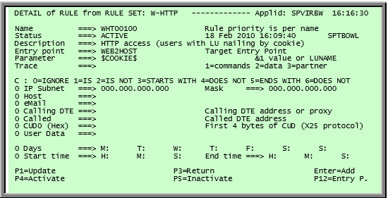
Rule for LU nailing by cookie
The rule for LU nailing has the special value $COOKIE$ in the “Parameter” field. This value has a two-fold meaning: firstly, it ensures that the rule is matched only for users who present a cookie containing a valid security code, and secondly, it indicates to VIRTEL that the LU name is taken from “VTAM name” field in the user’s correspondent record. Users who do not present a cookie, or whose cookie contains an invalid or expired security code, will not match this rule and will drop through to the next rule, which in this example is the “catch-all” rule WHT00200.
Defining a user¶
Now you can define your first user. From the VIRTEL Configuration Menu, press F5=Correspondents. At the “List of correspondents” panel, press F12 then fill in these fields:

Correspondent detail screen (e-mail correspondent)
Replace john.user@whatever.com by the user’s e-mail address.
Replace 192.168.5.30 by the host IP address where VIRTEL is running
Replace RHTVT003 by the LU name to be assigned to this user
Note
The LU name must be defined in a VIRTEL pool.
Leave the “Rule Set” and “Directory” fields blank. Now press Enter. You should get the message “CREATION OK”. For further information on “Correspondent Mangement” refer to the Virtel Users Guide.
Delivering the cookie via e-mail¶
Next we will send the cookie to the user.
In the “CORRESPONDENT DETAIL DEFINITION” panel, press F4=Activate. The message “ACTIVATION WAS REQUESTED” indicates that VIRTEL has sent the cookie to the user via the SMTP server.
If this is the first time you have tried sending an e-mail from VIRTEL, then it is quite possible that it will fail if the configuration is not yet correct. If the e-mail does not arrive at the user’s workstation, then enter the following MVS command:
F VIRTEL,TRACE,L=S-SMTP
then press F4=Activate again to generate a trace of VIRTEL’s dialog with the SMTP server. The dialog is traced in the SYSPRINT dataset of the VIRTEL started task (use SDSF to see it). From this you should be able to see what the problem is.
Common problems are:
codepage problem (the e-mail address in the MAIL TO command should contain an @ sign. If it does not, then check that the COUNTRY parameter in the VIRTCT matches your host codepage)
the SMTP server does not accept VIRTEL’s HELO or MAIL FROM command, check that the userid and hostname specified in the “description” field of the S-SMTP line are values which are acceptable to your mailserver. You may need to liaise with the company’s e-mail administrator to agree on appropriate values.
Installing the cookie on the browser¶
When the e-mail arrives at the user’s workstation, it will contain a hyperlink to a VIRTEL page. The user clicks on this hyperlink to install the cookie in his browser.
One point to note here: the desktop administrator may have set the security settings to inhibit the browser from storing cookies on the user’s workstation. Often the simplest solution to this problem is make sure that the browser recognizes VIRTEL’s IP address as being in the “Local Intranet” zone, and not the “Internet” zone. You can verify the zone by looking at the icon in the bottom right hand corner of the Internet Explorer screen when the VIRTEL web page is displayed. If it says “Internet” then you need to click “Tools - Internet Options - Security - Local Intranet - Sites – Advanced” and add VIRTEL’s IP address to the list.
Using the cookie¶
Having installed the cookie on the workstation, now whenever this user calls up a VIRTEL web page, VIRTEL will recognize that the cookie matches the one previously sent to john.user, and so it will assign the LU name RHTVT003 when connecting to a host application.
LU Nailing by IP address¶
The Virtel Rules attached to the HTTP line allow the LU name to be selected according to the caller’s IP address, by using the fields “IP Subnet” and “Mask” in the rule to match with an IP address or range of IP addresses. In the example below we define a rule on line E-HTTP which will force a terminal connecting with IP address 192.168.092.080 to use LU name EHVTA100. The LU name must be pre-defined in a Virtel terminal pool.
 Rule to map IP address 192.168.092.080 to LU name EHVTA100
Rule to map IP address 192.168.092.080 to LU name EHVTA100
Multiple terminals can be defined with a rule by using the * suffix in the parameter field. In the following example a range of IP address is mapped to a pool of LU names. Address range 192.168.092.0 through to 192.168.092.255 will be assigned the next unused LU name in the range EHVTA2%%.
Rule to map IP range 192.168.092.0 to LU names starting EHVTA2%%
This rule is named EHRLE200, the “IP Subnet” field specifies the IP address 192.168.092.000, and the “Mask” is set to 255.255.255.000 to indicate that only the first three octets of the IP address are tested to determine whether the rule matches the IP address of the client browser. The “parameter” field specifies a generic LU name EHVTA2* which signifies that any LU whose name begins with EHVTA2 may be assigned to clients whose IP address matches this rule. If we open two Virtel sessions from a device whose IP address is 192.168.92.80 we can see that the rule is matched, message VIRHT281, and the VTAM relays assigned are from the EHVTA200 pool, starting at the highest avaiable LU name.
VIRHT28I HTTP-EDS GETS ENTRY POINT 'EDSHOST ' FROM RULE 'EHRLE200' FOR
CALLER 192.168.92.80:51280
VIRHT51I HTTP-EDS CONNECTING EHVTA209 TO 192.168.92.80:51280
VIR0919I EHVTA209 RELAY EHVTA200(IPTRM200) ACTIVATED
VIR0919I EHVTA209 RELAY EHVIM200(IPPRT200) ACTIVATED
VIRHT28I HTTP-EDS GETS ENTRY POINT 'EDSHOST ' FROM RULE 'EHRLE200' FOR
CALLER 192.168.92.80:51280
VIRHT51I HTTP-EDS CONNECTING EHVTA208 TO 192.168.92.80:51280
VIR0919I EHVTA208 RELAY EHVTA201(IPTRM201) ACTIVATED
VIR0919I EHVTA208 RELAY EHVIM201(IPPRT201) ACTIVATED
The supporting terminal definitions look like :-
 Terminal definitions to support IP range
Terminal definitions to support IP range
When a device is “nailed” by a rule it takes the first predefined terminal in the range, in this case terminal IPTRM200(3270 name EHVTA200, Printer name EHVIM200). This pre-defined entry than grabs the highest availble pool entry from pool IPPOOL. IPPOOL supports 10 entries from the range EHVTA200 through to EHVTA209. Ten entries. Pool entry EHVTA209 is used to support the 3270 session.
Although it is recommended that terminal definitions should be defined with the same prefix as defined in the line statement it is not necessary. Here we have used a prefix of IP to define terminals that will be caught by the IP rule(s). The key name definition that must be adhered to is that the prefix of the terminal pool defintions, in this case EHVTA2%%, must begin with the transaction pseudo-terminals parameter. In this line definition the transactions associated with the Entry Point use a pseudo-terminals prefix of EHVTA.
Note the use of pattern characters when defining the range. In this example we have used %% when % represents hexadecimal digist 0-9 and A-F. See “Pattern characters”, for more information on how to define ranges with pattern characters.
 3270 session allocated from IP range
3270 session allocated from IP range
Comparison Table¶
Type |
RULE Required |
TERMINAL Definition Reqd. |
COOKIES |
Terminal POOL Reqd. |
|---|---|---|---|---|
By UserData |
Yes. 1 per work station |
Yes. Individual or group |
No |
Yes |
By $URL$ - LUNAME in URL |
Yes. 1 generic Rule. |
Yes. Individual or group |
No |
Yes |
ForceLUNAME |
No |
No |
No |
Yes |
By IP (Correspondent) |
Yes |
Yes |
Yes |
Yes |
By IP |
Yes |
Yes |
No |
Yes |
AT-TLS Secure Session¶
Introduction¶
This section provides details on on to implement AT-TLS security. To provide secure HTTP (https) sessions to client browsers, VIRTEL uses the Application Transparent Transport Layer Security (AT-TLS) feature of z/OS Communication Server. AT-TLS is included with z/OS V1R7 and later releases.
AT-TLS allows socket applications to access encrypted sessions by invoking system SSL within the transport layer of the TCP/IP stack. A Policy Agent task decides which connections are to use AT-TLS, and provides system SSL configuration for those connections. Virtel continues to send and receive clear text over the socket, but data sent over the network is encrypted and protected by system SSL. The supported protocols are TLS, SSLv3, and SSLv2.
Warning
Higher CPU usgage will result in the TCP/IP address space if this feature is used without the services of a hardware Crypto Card.
Installation¶
Install Policy Agent procedure¶
If you do not already have the Communications Server Policy Agent (PAGENT) active in your z/OS system, copy the cataloged procedure EZAPAGSP from TCPIP.SEZAINST into your proclib, renaming it as PAGENT.
Create the Policy Agent configuration file¶
If you do not already run the Policy Agent, you will need to create a configuration file /etc/pagent.conf using z/OS Unix System Services. If you already run Policy Agent, you will need to find the existing configuration file and add the TTLS definitions to it to support Virtel. Sample jobs are provided in the Virtel SAMPLIB library to assist in performing this step.
Member SSLSETUP¶
Step PCONFIG in the SSLSETUP sample job contains a starter configuration. The following changes should be made:
Replace %virtjob% by the name of your VIRTEL started task (SSLSETUP line 70)
Replace 41000-41002 by 41002 in the LocalPortRange parameter (SSLSETUP line 71) to activate AT-TLS for VIRTEL line C-HTTP
Replace ServerWithClientAuth by Server in the HandshakeRole parameter (SSLSETUP line 82) as we will not be using Client Certificates in the initial setup.
Allow the Policy Agent to run during TCP/IP initialization¶
The Policy Agent must be given READ access to the resource EZB.INITSTACK.* in RACF class SERVAUTH. See step EZBAUTH in the SSLSETUP sample job (delivered in VIRTEL SAMPLIB).
Create the server certificate¶
A server certificate for VIRTEL must be created, signed by a certificate authority, and stored in the RACF database. In the SSLSETUP sample job we create a signing certificate and use RACF itself as the certificate authority. Alternatively, you may use an external certificate authority such as Verisign to create and sign the certificate, then import it into RACF.
At SSLSETUP line 228, replace %virtssl% by the DNS name assigned to the VIRTEL host (for example, virtssl.syspertec.com)
Add the certificate to the keyring¶
The server certificate must be added to the Virtel keyring - VIRTRING. See step CCERTIF in the SSLSETUP sample job.
Allow VIRTEL to access its own certificate¶
To allow VIRTEL to access its own keyring and server certificate, the VIRTEL started task must have READ access to the resource IRR.DIGTCERT.LISTRING in the RACF class FACILITY. See step IRRAUTH in the SSLSETUP sample job.
Activate AT-TLS¶
To activate AT-TLS, add the following statements to TCPIP PROFILE:
TCPCONFIG TTLS
AUTOLOG 5 PAGENT ENDAUTOLOG
Stop and restart TCP/IP to activate the TCPCONFIG TTLS profile statement. The AUTOLOG statement will cause the PAGENT procedure to be started automatically during TCP/IP initialization.
Operations¶
Starting the Policy Agent¶
The AUTOLOG statement in the TCP/IP profile will start the PAGENT procedure automatically at TCP/IP initialization. Alternatively you can issue the MVS command S PAGENT.
Note
if this is the first time you have activated the SERVAUTH class, you are likely to see RACF failure messages during TCP/IP initialization indicating that other applications are unable to access the resource EZB.INITSTACK. This is normal, because Communications Server uses this mechanism to prevent applications from accessing TCP/IP before the Policy Agent is started. Do not be tempted to authorize applications to use this RACF resource. Either ignore the messages (they will go away once PAGENT has started), or ensure that PAGENT starts before all other applications.
Altering the Policy Agent configuration¶
To make changes to the Policy Agent configuration file, either edit and resubmit the PCONFIG step of the SSLSETUP sample job, or use the TSO ISHELL command to edit the file /etc/pagent.conf directly from ISPF.
After you make changes to the Policy Agent configuration, use the MVS command F PAGENT,REFRESH to force PAGENT to reread the file.
Logon to VIRTEL using secure session¶
To access VIRTEL line C-HTTP you must now use URL
https://n.n.n.n:41002 instead of http://n.n.n.n:41002
(where n.n.n.n is the IP address of the z/OS host running VIRTEL).
Problem determination¶
Policy Agent log file¶
Policy Agent startup messages are written to the /tmp/pagent.log file of z/OS Unix System Services. You can use the TSO ISHELL command to browse this file from ISPF.
Common error messages¶
Error messages relating to session setup are written to the MVS SYSLOG. The most common error message is:
EZD1287I TTLS Error RC: nnn event
where nnn represents a return code. Return codes under 5000 are generated by System SSL and are defined in the System SSL Programming manual. Return codes over 5000 are generated by AT-TLS and are defined in the IP Diagnosis Guide. Some commonly encountered return codes are:
7 No certificate
8 Certificate not trusted
109 No certification authority certificates
202 Keyring does not exist
401 Certificate expired or not yet valid
402 or 412 Client and server cannot agree on cipher suite
416 VIRTEL does not have permission to list the keyring
431 Certificate is revoked
434 Certificate key not compatible with cipher suite
435 Certificate authority unknown
5003 Browser sent clear text (http instead of https)
5006 SSL failed to initialize. Check job SSLSETUP.
VIRHT57E LINE IS NOT SET UP FOR HTTPS
Means that the browser sent an https request, but it has not been decrypted by AT-TLS before being sent to VIRTEL, and VIRTEL has received the message in encrypted format. Normally this means the AT-TLS rules did not match the incoming request. This is not a Virtel configuration issue.
EZD1287I TTLS Error RC: 5003
This is the opposite situation. It means that the AT-TLS rules matched the incoming request, and so AT-TLS was expecting to receive an https request, but it received an http request instead.
Normally AT-TLS is transparent to VIRTEL. AT-TLS performs the decryption and transforms the https request into an http request before passing it to VIRTEL. The only case where VIRTEL is AT-TLS aware is when the VIRTEL transaction definition specifies SECURITY=3 (TLS) and in this case VIRTEL will check that the session has been processed by AT-TLS and will issue an IOCTL to obtain the userid associated with the certificate. In the normal case, you should specify HandshakeRole Server, ClientAuthType Full, and ApplicationControlled Off in the AT-TLS rules, as in the example in VIRT447.SAMPLIB(SSLSETUP).
VIRTEL does not issue an IOCTL to turn decryption on and off, so if you specified ApplicationControlled On then you would get VIRHT57E because AT-TLS has not been instructed to start decryption.
If you still get an error when you have ApplicationControlled Off then we will need to see the SYSLOG (for the EZD TTLS messages), the JESMSGLG from the VIRTEL started task, and the SYSPRINT resulting from a z/OS command F VIRTEL,SNAP immediately after the error occurs. We would also like to see the exact URL which was entered at the browser, as well as the AT-TLS pagent.conf file.
Verifying AT-TLS is active¶
To verify that AT-TLS is still activated, you can submit this MVS command:
D TCPIP,,N,TTLS
The response is:
EZD0101I NETSTAT CS V1R12 TCPIP 378 TTLSGRPACTION GROUP ID CONNS VIRTELGROUP 00000002 0 1 OF 1 RECORDS DISPLAYED END OF THE REPORT
The UNIX command
pasearch
displays the parameters used by PAGENT from /etc/pagent.conf
The TSO command:-
netstat conn
displays active connexions for the VIRTEL STC.
Once a connexion has been established between a client and a Virtel port, the TSO command:-
netstat ttls conn nnnn detail
where nnnn is the identification of the connexion will display the AT-TLS parameters used in the Virtel connexion.
The Cipher suites¶
The client and server cipher specifications must contain at least one value in common. The TTLSEnvironmentAdvancedParms parameter of the Policy Agent configuration file allows you to turn on or off the SSLv2, SSLv3, and TLSv1 protocols at the server end. The list of supported cipher suites for each protocol is in the TTLSCipherParms parameter. Check the /tmp/pagent.log file to determine whether any cipher suites were discarded at startup time.
In Microsoft Internet Explorer, follow the menu Tools – Internet Options – Advanced. Under the security heading there are three options which allow you to enable or disable the SSL 2.0, SSL 3.0,and TLS 1.0 protocols. You cannot enable or disable individual cipher suites.
In Firefox the cipher specifications are accessed by typing about:config in the address bar and typing security in the filter box. By default, ssl2 is disabled, and ssl3 and tls are enabled. By default, all weak encryption cipher suites are disabled, and 128-bit or higher cipher suites are enabled.
Client certificates¶
Virtel can extract the userid of a user from a client certificate presented to Virtel during the SSL handshake. For this to occur the following must be true:-
The HTTP session is secured using AT-TLS. URL = https://….
The Policy Agent TTLSConnectionAction or TTLSEnvironmentAction statement contains the parameter “HandShakeRole ServerWithClientAuth”
The client has provided a valid certificate.
The security subsystem has validate the certificate as belonging to a user.
The Virtel transaction has Security = 3 defined.
If these conditions are met then the userid contained within the clients digital certificate can be extracted by Virtel and used in the signon process. In this process it is normal that a PASS Ticket is generated and associated with the extracted userid.
See the SAMPLIB members SSLSETUP and SSLUCERT for examples on setting up AT-TLS and client certificates.
Resources¶
IBM Manuals¶
- SA22-7683-07 z/OS V1R7 Security Server: RACF Security Administrator's Guide Chapter 21. RACF and Digital Certificates
- SC24-5901-04 z/OS V1R6 Cryptographic Services: System SSL Programming Chapter 12. Messages and Codes
- SC31-8775-07 z/OS V1R7 Communications Server: IP Configuration Guide
Chapter 14. Policy-based networking
Chapter 18. Application Transparent Transport Layer Security (AT-TLS) data protection Configuration Reference
Chapter 21. Policy Agent and policy applications
- GC31-8782-06 z/OS V1R7 Communications Server:* IP Diagnosis Guide
Chapter 28. Diagnosing Application Transparent Transport Layer Security (AT-TLS)
- SC31-8784-05 z/OS V1R7 Communications Server: IP Messages: Volume 2 (EZB, EZD)
Chapter 10. EZD1xxxx messages
Virtel Material¶
TN201407 Pass tickets and supporting Proxy Servers – CA-SiteMinder© & IBM Tivoli WebSeal©
TN201416 Virtel TLS/SSL Security: Signing on using server and client certificates
SSO, PassTickets and Proxy Servers¶
Introduction¶
Many businesses now implement products which provide a centralized enterprise-class secure single sign-on (SSO) and authentication system. The products tend to run on a server(s) and provides access to a business’s assets like web enabled applications or portals. The basic process is to trap the incoming HTTP call request and establish some user credentials before llowing access to an asset. For example, the user credentials can be extracted from the callers request or determined by the callers IP address. The credentials will be validated against a LDAP or similar active directory server. The result of the validation will either allow or deny the caller access to the requested asset. Security and asset control is managed by the SSO server which as a central server can validate credentials to all business assets, be it on the mainframe or other platforms. Userid and password administration for all assets can be controlled through the functions of the SSO software employed. Virtel will integrate within this SSO infrastructure and process sign on request once they have passed validation. Virtel provides its own validation of the SSO server through the use of rules.
In the example that follows we are using CA-Site Minder as an example SSO Server and we will document how to define Virtel to interface with the SSO Server and RACF. Our target asset is a CICS application called SPCICSH. The caller will provide no userid or password data.
 Data flow of an SSO session setup
Data flow of an SSO session setup
The initial request is passed through the SSO server. The server will trap and validate the caller. If the validation is successful a session will be establish between the SSO server and Virtel. Two things to note at this point. One, the IP address presented to Virtel will be that of the SSO Proxy Server and two, that the server will modify the HTTP headers to provide addition information, that being the source IP address and the user id.
A Virtel line trace will reveal these additional headers.
GET /w2h/WEB2SUB.HTML++VirtelSession=AFo0JQAAAAMeuCAo+disconnect=1?pf=DISCONNECT HTTP/1.1
Host: 192.168.170.30:41002
User-Agent: Mozilla/5.0 (Windows NT 6.1; WOW64; rv:27.0) Gecko/20100101 Firefox/27.0
Accept: text/html,application/xhtml+xml,application/xml;q=0.9,\*/\*;q=0.8
Accept-Language: en-gb,en;q=0.5
Accept-Encoding: gzip, deflate
Referer: http://192.168.170.30:41002/w2h/WEB2AJAX.htm+CICS
Cookie: SYSLANG=en; SYSSTYL=BLUE; SYSPAGE=auto
**SM_User: sptholt <<**
**X-Forwarded-For: 192.168.100.100 <<**
Connection: keep-alive
HTTP/1.1 200 Ok
Server: Virtel/4.53
Date: Wed, 26 Mar 2014 15:31:12 GMT
Content-type: text/html
Content-length: 00000125
<html><head><Meta HTTP-EQUIV="refresh" CONTENT="1; URL=LASTPAGE.HTML"></head>
<body bgcolor="black"><br>
<br>
</body></html>
HTTP/1.0 205 Reset Content
Server: Virtel/4.53
In the above trace the CA-SiteMinder specific header “SM_User” can be seen as identifying the userid and the X-Forwarded-For:, a standard HTTP header, identifies the source IP address. For security reasons this proxy IP address must be tested for in a VIRTEL rule before the session can be established between the caller and the asset. There is no password associated with this logon – this will be generated via a passsTicket request on behalf of the userid identified in the “SM_User” header. The PassTicket will be created as part of the session setup between Virtel and the asset and on behalf of the caller.
Adding headers to the HTTP request¶
Access the CICS application using FireFox. Use the FireFox “AddIn” Modify Headers to add the headers to the HTTP request. After adding the headers you will need to “START” the addIn to get the headers added.
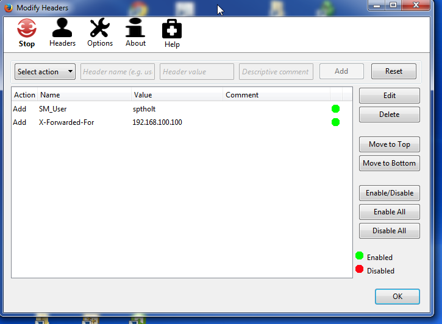 Using the Firefox “Modify Headers” addin.
When access the CICS system make sure the “Modify Headers” has started. The ICON should be red.

Modify Header active - red ICON
The following definitions define what needs to be done to enable a user to log on without specifying a userid/password to an asset supported by the SSO server. In our example Virtel will logon to a CICS asset on behalf of the caller using a userid passed by the SSO Proxy and a generated PassTicket. The caller provides no userid/password information. Once the SSO has validated the callers credential the caller will be logged on to CICS and will be presented with the following screen:-
 Accessing CICS using a callers credentials. No LOGON required.
Accessing CICS using a callers credentials. No LOGON required.
RACF Passtickets¶
Pass tickets are an alternative to passwords and can greatly improve the security surrounding SSO and multiple applications access. Passtickets are a dynamically generated password that lasts for approximately 10 minutes. Further information on RACF Passtickets can be found on the web. For the purpose of this newsletter we will look at the Virtel requirements needed to access our target CICS asset whose RACF APPL is SPCICSH. Our Virtel task runs under the RACF userid of SPVIRSTC. Here are the RACF definitions required to support the generation of PassTickets for the target application APPL SPCICSH.
Define Pass Ticket RACF profiles¶
This job will have to be modified to a customer’s RACF setup. Some profiles may already be defined! If the PERMIT statements do not run then that probably means that some of the RDEFINE entries already exist in the RACF database - these need to be removed, or an RDELETE added to delete the profile entry, in order for the job to complete successfully. It should produce a RC=0. See the output in SDSF.
//STEP1 EXEC PGM=IKJEFT1A,DYNAMNBR=20
//SYSTSPRT DD SYSOUT=*
//SYSTSIN DD *
SETROPTS CLASSACT(APPL)
SETROPTS CLASSACT(PTKTDATA)
SETROPTS RACLIST(PTKTDATA)
SETROPTS GENERIC(PTKTDATA)
RDEFINE FACILITY IRR.RTICKETSERV
RDEFINE PTKTDATA IRRPTAUTH.SPCICSH.\* UACC(NONE)
RDEFINE PTKTDATA SPCICSH SSIGNON(KEYMASKED(998A654FEBCDA123)) +
UACC(NONE)
PERMIT IRR.RTICKETSERV CL(FACILITY) ID(SPVIRSTC) ACC(READ)
PERMIT IRRPTAUTH.SPCICSH.\* CL(PTKTDATA) ID(SPVIRSTC) ACC(UPDATE)
SETROPTS REFRESH RACLIST(PTKTDATA)
SETROPTS REFRESH RACLIST(FACILITY)
Three distinct RACF profiles are required to use RACF pass tickets:-
FACILITY IRR.RTICKETSERV * Can use PassTickets *
PTKTDATA IRRPTAUTH.passTicketName. * Let’s VIRETL generate PassTickets on behalf of an application for all users. * or *userid*
PTKTDATA profile_name * APPLNAME used by RACROUTE REQUEST=VERIFY *
Virtel Name correlation
passTicketName must equal the PassTicket Name defined in the VIRTEL transaction.
profile_name must equal the VTAM application name defined in the VIRTEL transaction.
These names are normally the same, but they do not have to be.
Note
If you are running separate RACF databases across LPARS the KEYMASKED must be the same in each RACF database or else the wrong password will be generated and the logon will fail.
RACF Profiles related to Virtel and Pass Tickets¶
As mentioned RACF needs to have some profiles set up to allow Virtel to use Pass Tickets. The first profile is the FACILITY Class profile with the IRR.RTICKETSERV name. The Virtel STC userid must have READ access to this profile.
 RACF profile to allow Virtel to use Pass Tickets
RACF profile to allow Virtel to use Pass Tickets
RDEFINE FACILITY IRR.RTICKETSERV
PERMIT IRR.RTICKETSERV CL(FACILITY) ID(SPVIRSTC) ACC(READ)
To allow Virtel to generate Pass Tickets for a particular application we must define any entry in the PTKTDATA class. This entry has the name “IRRPTAUTH.passTicketName.*”” and is a Group Entry. The Virtel USERID should have update authority to this profile.
 Seting Virtel up with RACF access to PTKTDATA class.
Seting Virtel up with RACF access to PTKTDATA class.
RDEFINE PTKTDATA IRRPTAUTH.SPCICSH.\* UACC(NONE)
PERMIT IRRPTAUTH.SPCICSH.\* CL(PTKTDATA) ID(SPVIRSTC) ACC(UPDATE)
SSIGNON(KEYMASKED(998A654FEBCDA123)) UACC(NONE)
The name in IRRPTAUTH.passTicketName.* profile must match the name in the Virtel Transaction definition. The PassTicket Name is the name of the application as known to RACF for the generation of Passtickets. This may be different to the VTAM application name.
Finally, define a PTKTDATA profile entry that matches the Virtel Transaction APPLICATION name. In this case it is SPCICSH. Virtel passes this APPLNAME to RACF via a RACROUTE REQUEST=VERIFY.
 Setting the Pass Ticket name in the Virtel transaction.
Setting the Pass Ticket name in the Virtel transaction.
RDEFINE PTKTDATA SPCICSH SSIGNON(KEYMASKED(998A654FEBCDA123)) +
UACC(NONE)
The key thing here is that the PassTicket name must tie up with the generic IRRPTAUTH.SPCICSH.* entry and the VIRTEL application name must match the descrete PTKTDATA.SPCICSH profile. They can be the same but needn’t be!
Virtel Requirements¶
Transaction requirements¶
The Virtel Transaction, under the Entry Point CLIWHOST, will be used to access the CICS asset. It has a Virtel external name of “CICS”. We modify our transaction to use pass tickets and add a TIOA to logon to our CICS transaction. The transaction details now look like:-
 Modified CICS Virtel transaction to support Pass Tickets.
Modified CICS Virtel transaction to support Pass Tickets.
The PassTicket option is set to 2 and uses the APPL name associated with CICS transaction. Using option 2 means that we do not have to sign onto Virtel first before generating a PassTicket. Virtel will expect the Virtel System variable USER to be established. This will be accomplished in an identification scenario where we have access to the SM_User header value.
The TIOA sign on field waits for the initial CICS sign on screen to appear and then plugs in the userid (&U) and PassTicket generated password (&P) into their respective locations. The screen is then “forwarded” to the CICS application with the USERID and PASSWORDS fields completed.
Identification Scenario¶
To obtain the “SM_User” value and set the userid in the Virtel System USER variable an identification scenario is used. The following is an example of such a scenario:-
SCENSITE SCREENS APPL=SCENSITE,EXEC=NO
*
* SCENARIO for SiteMinder
*
* The purpose of this scenario is to retrieve the contents of
* the identification headers inserted by the SiteMinder Proxy
*
SCENARIO IDENTIFICATION
*
COPY$ SYSTEM-TO-VARIABLE,VAR='USER', -
FIELD=(TCT-HTTP-HEADER,SM\_USER)
IF$ NOT-FOUND,THEN=NOUSER1
COPY$ VARIABLE-TO-SYSTEM,VAR='USER', -
FIELD=(NAME-OF,USER)
*
EXIT1 DS 0H
SCENARIO END
*
NOUSER1 DS 0H
ERROR$ 0,'SCENSITE ERROR: NO USER VARIABLE'
GOTO$ EXIT1
SCRNEND
END
This SCENARIO has to be set in the Entry Point definition for the line being used. In our case this is the default Entry Point, CLIWHOST, associated with the external line HTTP-CLI. The following is a snapshot of the entry point definition:-
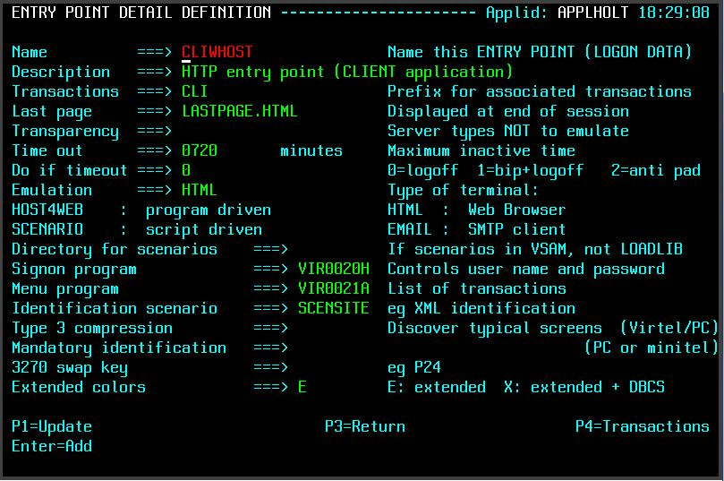 Defining an Identification Scenario in the Virtel Entry Point.
The Identification Scenario field is filled in with the name of our scenario SCENSITE. This scenario is called when the inbound call is assigned to an entry point and before any transactions are invoked. The scenario sets the Virtel system USER variable which will be used in the PassTicket generation.
TCT Considerations¶
The TCT has to include the following parameters if HTTP User Headers and PassTicket generation is required. The parameters are:-
HTHEADR=(SM_USER), *
VIRSECU=YES,SECUR=(RACROUTE,RACF), *
RAPPL=FACILITY,RNODE=FACILITY,PRFSECU=SPVIREH, *
PASSTCK=YES, *
The HTHEADR identifies the “SM_USER“ as a non standard header and one that Virtel must process. The PASSTCK keyword enables Virtel to generate PassTickets.
Line Rules¶
To ensure that the source SSO proxy IP address is valid we can code some rules and associate them with the line. In our example we have coded two sets of rules. The first one will test the calling proxy IP address. If that is successful the connection will continue and establish an association with the named Virtel entry point. If the first rule fails because the IP address doesn’t match what we expect, the second rule will be called. This does no more than establish an entry point with a default transaction. The default transaction will just return an error page to the browser. Here are the two rules that we have associated with our Virtel line:-
 List of rules asssociated with the Virtel line
List of rules asssociated with the Virtel line
The second rule is coded as follows:-
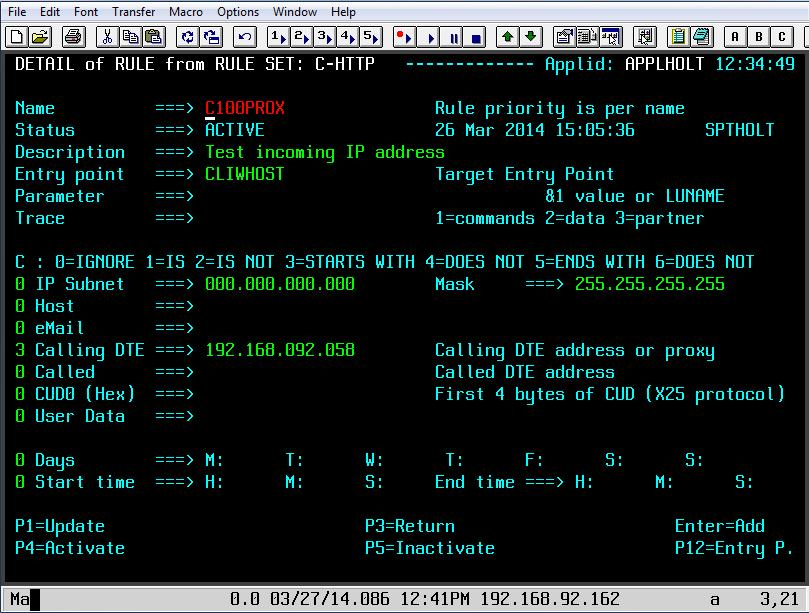 Rule C100PROX to test Proxy IP Address
If the IP address of the SSO Proxy matches the Caller DTE address we have specified in the rule than the Entry Point CLIWHOST will be associated with line and the transactions defined under that entry point, CLIWHOST in this case, can be invoked. If the address match fails then the next rule will be called. In our case this will be rule C999REJ which will invoke transaction EPREJECT, the default transaction for Entry Point EPREJECT.
Warning
It is important that you use option 3 “STARTS WITH” when defining the Calling DTE option.
 Rule C999REJ to reject the session request
Rule C999REJ to reject the session request
This rule does no more than to establish the entry point EPREJECT. EPREJECT will have a default transaction which just returns an error page to the caller.
Common Errors¶
Message VIR1502E
VIRTEL does not have sufficient access rights to create or validate a passticket allowing user userid at terminal termed to access application applname. This message is usually preceded by message ICH408I which shows the name of the resource to which VIRTEL must be granted access.
Action
Examine the SAF and RACF return codes and the RACF reason code to determine the cause. Check that VIRTEL has access to resource IRR.RTICKETSERV in the FACILITY class, and also to resource IRRPTAUTH.applname.userid in the PTKTDATA class. The generic resource IRRPTAUTH.** may be used to permit VIRTEL to generate passtickets for all applications.
For an explanation of the return codes and reason codes, see z/OS Security Server RACF Callable Services Chapter 2 “R_ticketserv”. Some common codes are:
SAF RC |
RACF RETC |
RACF Reason |
Description |
|---|---|---|---|
8 |
8 |
4 |
Paramlist error. Ensure that the SCENSITE scenario is available to process the sm_header. |
8 |
8 |
16 |
VIRTEL is not authorized to generate passtickets, or is not authorized to generate passtickets for this application. See preceding ICH408I message in the log. |
8 |
16 |
28 |
There is no profile in the PTKTDATA class for this application or the PTKTDATA class is not active. |
Running multiple instances of Virtel¶
Introduction¶
For High Availability and performance reasons it is often necessary to run multiple copies of Virtel, preferably within separate LPARs on separate physical machines. This newsletter discusses the issues raised when implementing such a setup and how Virtel can exploit the IBM Sysplex technologies. In the following example there are two instances of Virtel running on separate physical machines sharing the same ARBO configuration file. The configuration looks like this:-
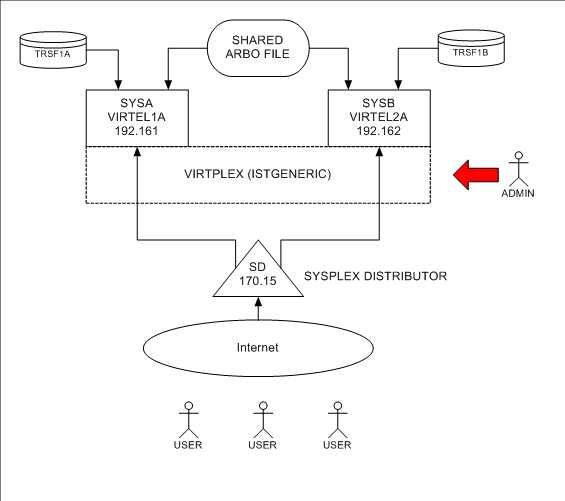
Virtel is using several Sysplex technologies to achieve this configuration. For example, Virtel is using VTAM Generic Resources to facilitate access to the Virtel Administration functions from either instance of Virtel. VTAM generic resources can be used to distribute workloads across applications that perform the same task or function. Administration of the ARBO file is through the Virtel Administrator who can logon on to Virtel using the generic Virtel ACB name VIRTPLEX. This generic ACB enables management of the ARBO file through either VIRTEL1A or VIRTEL2A. This can be useful, for example, If SYSA was down for maintenance. VIRTEL administration could still conducted via VIRTEL2A access. No change would be necessary to any session management tools.
Here are the relevant definitions required to support the VTAM generic resource within Virtel.
VIRTEL TCT Settings¶
GRNAME=VIRTPLEX, VTAM GENERIC RESOURCE NAME
SYSPLEX definitions¶
The ISTGENERIC structure will have to be allocated before you can use VTAM generic resources. See the IBM Network Implementation Guide for further information on configuring the CFRM.
Use the following command to display coupling allocation details for ISTGENERIC.
D XCF,STR,STRNM=ISTGENERIC
VTAM displayof the generic resource
The results from the D NET,ID=VTAMPLEX,E identifies the two Virtel instances which are grouped into the generic resource name VIRTPLEX. The example below shows VIRTEL1A and VIRTEL2A as participating in the VIRTRPLEX resource name group.
D NET,ID=VIRTPLEX,E
IST097I DISPLAY ACCEPTED
IST075I NAME = VIRTPLEX, TYPE = GENERIC RESOURCE 917
IST1359I MEMBER NAME OWNING CP SELECTABLE APPC
IST1360I SPNET.VIRTEL1A ZAM1SSCP YES NO
IST1360I SPNET.VIRTEL2A ZAM2SSCP YES NO
IST2210I GR PREFERENCE TABLE ENTRY = **DEFAULT**
IST2202I GREXIT = NO WLM = YES LOCLU = YES
IST2204I LOCAPPL = YES PASSOLU = NO
IST314I END
When the VIRTEL*A application is display in VTAM the following messages are written to the console log:-
D NET,ID=VIRTEL1A,E
IST097I DISPLAY ACCEPTED
IST075I NAME = SPNET.VIRTEL1A, TYPE = APPL 925
IST486I STATUS= ACT/S, DESIRED STATE= ACTIV
IST1447I REGISTRATION TYPE = CDSERVR
IST1363I GENERIC RESOURCE NAME VIRTPLEX REPRESENTS SPNET.VIRTEL1A
IST977I MDLTAB=***NA*** ASLTAB=***NA***
IST861I MODETAB=***NA*** USSTAB=***NA***LOGTAB=***NA***
IST934I DLOGMOD=***NA*** USS LANGTAB=***NA***
IST1632I VPACING = 7
IST1938I APPC = NO
IST597I CAPABILITY-PLU ENABLED ,SLU ENABLED ,SESSION LIMIT NONE
IST231I APPL MAJOR NODE = APPLVIPX
IST654I I/O TRACE = OFF, BUFFER TRACE = OFF
IST1500I STATE TRACE = OFF
IST271I JOBNAME = SPVIR1A, STEPNAME = SPVIR1A, DSPNAME = ISTEBBDB
IST228I ENCRYPTION = OPTIONAL , TYPE = DES
IST1563I CKEYNAME = VIRTEL1A CKEY = PRIMARY CERTIFY = NO
IST1552I MAC = NONE MACTYPE = NONE
IST1050I MAXIMUM COMPRESSION LEVEL - INPUT = 0, OUTPUT = 0
IST1633I ASRCVLM = 1000000
IST1634I DATA SPACE USAGE: CURRENT = 0 MAXIMUM = 1280
IST171I ACTIVE SESSIONS = 0000000001, SESSION REQUESTS = 0000000000
IST206I SESSIONS:
IST634I NAME STATUS SID SEND RECV VR TP NETID
IST635I SC0TCP13 ACTIV-S CA7B8B52D125F31F 0003 0001 SPNET
IST314I END
Message IST1363I confirms that VIRTEL operating under the ACB of VIRTEL1A is associated with the VTAM resource name VIRTPLEX.
Workload balancing in a SYSPLEX environment¶
In the following configuration we can see how the VTAM generic resource facility can also be used to distribute workloads across applications. In this example there are several CICS TOR regions within CICSA, CICSB and CICSC that are accessed through a VTAM generic resource name or CICSPLEX group name. VIRTEL uses this name to access the CICS application. The WLM and/or VTAM will distribute sessions across the members of the CICS generic resource name.

From a High Availability aspect both CICSA and CICSB could both be down and service would still be provided by CICSC either through VIRTEL1A or VIRTEL2A. In this configuration VIRTEL exploits SYSPLEX technologies to provide a HA solution. The only VIRTEL requirement is to define a VIRTEL transaction which targets CICSZ as the VTAM application, i.e. the VTAM Generic Resource or CICSPLEX group name.
Sharing the ARBO and other VSAM files¶
In a SYSPLEX or sharing environment the VSAM files, like the ARBO and TRSF files, must be shared only in READ mode. To support this the following TCT parameter should be coded:-
VSAMTYP=READONLY
This VIRTCT parameter allows the setup of ‘READ-ONLY’ Virtels, to be used in production or in a Sysplex. Almost all Virtel VSAM files may be set to read-only mode. (But note that the VIRSWAP file; being a work file it cannot be read-only.)
If this TCT value is coded then the following changes should also be made to the TCT.
The MACRF statements should be amended from MACRF=(SEQ,DIR,OUT,LSR) to MACRF=(SEQ,DIR,LSR).
The UFILE parameter string should also be changed from 0,10,01 to 0,10,05. For example:-
HTMLTRSF,ACBH2,0,10,01 becomes HTMLTRSF,ACBH2,0,10,05
This will ensure the integrity of the VSAM files across a SYSPLEX or shared environment. When Virtel is started the following messages will be issued:-
VIR0093I VTAM GENERIC RESOURCE NAME IS VIRTPLEX
VIR0024I OPENING FILE VIRARBO
VIR0024I READ ONLY
VIR0024I OPENING FILE VIRSWAP
VIR0024I OPENING FILE VIRHTML
VIR0024I READ ONLY
VIR0024I OPENING FILE SAMPTRSF
VIR0024I READ ONLY
VIR0024I OPENING FILE HTMLTRSF
VIR0024I READ ONLY
VIR0024I ATTACHING SUBTASKS
Danger
Do not set the SHROPTIONS to (4,3) as this will have undesirable results!
Using a READ only environment enables you to not only share the ARBO file but also the SAMP and HTML TRSF files.
READ ONLY Restrictions¶
If you share the VSAM files (SAMP.TRSF, ARBO, HTML.TRSF) in READ only mode Virtel Administration is not possible. For example uploading web updates to the SAMP.TRSF or adding macros to the DDI repositories. In this configuration you will have to have a maintenace instance of Virtel which can write to the VSAM files. This can be brought up during a maintenace slot when the READ ONLY instances are down. An alternative to this method is to maintain a copy of the VSAM files and use these for maintenace and updates then copy these VSAM files to the READ ONLY versions during a maintenace slot.
In Virtel V4.60 this restriction has been removed with the introduction of the VIRPLEX feature. VIRPLEX enables a nominated “WRITER” Virtel task to particpate in the Virtel infrastrure. Only administrators would have access to this “WRITER” instance. Maintenance and centralized entities, such as macros, could be uploaded using the “WRITER” instance. The “writer” instance, which has “write access” to the Virtel files would then populate the files with the new updates. Virtel “READ” instances would detect the changes and automatically refresh the “cache” instances. See the “VIRPLEX section”, for move information.
Virtel naming conventions¶
When running more than one VIRTEL STC care must be taken when defining the VTAM relay names that each VIRTEL tasks will use. In the above configuration each Virtel instance is running on a different LPAR, and for the HA reasons, probably on a different physical machine; however, the VTAM names employed must be unique. With Virtel you can define a single configuration within the ARBO and TCT which contains a unique pool of Virtel relays for each Virtel instance.
Here are two possible ways to define the relay pools for multiple Virtel instances:
The first way is to include the SYSCLONE value as part of the LU name. The relay definitions utilize the system symbolic SYSCLONE value in the IEASYMxx member of PARMLIB. The clone value is taken from the system symbolic &SYSCLONE and is identified in the VIRTEL definitions through the + (plus) character:
LIST of TERMINALS ---------------------------------- Applid: VIRTEL1A 15:11:01
Terminal Repeated Relay Entry Type I/O Pool 2nd Relay
CLLOC000 0050 3 3
CLVTA000 0080 *W2HPOOL 3 3
DELOC000 0010 3 3
DEVTA000 0016 *W2HPOOL 3 3
W2HIM000 0080 R+IM000 1 1
W2HTP000 0080 R+VT000 3 3 *W2HPOOL R+IM000
TCT definition¶
In the configuration above there are two Virtel STCs running on different LPARS whose &SYSCLONE values are 1A and 2A. With the same TCT being used for both VIRTEL1A and VIRTEL2A the following is specified in the common TCT:-
APPLID=VIRTEL+,
SYSPLUS=YES,
This will means that the two Virtels STCs will have a VTAM APPLID of^VIRTEL1A and VIRTEL2A. The Virtel relay LU names are R1AVT000-079 for LPAR 1A, and R2AVT000-079 for LPAR 2A. The VTAM definition to support this configuration would like:-
APPLVIPX VBUILD TYPE=APPL
* ------------------------------------------------------------------ *
* Product : VIRTEL *
* Description : APPL for VIRTEL SYSPLEX (SPVIR1A and SPVIR2A) *
* ------------------------------------------------------------------ *
VIRTEL&SYSCLONE APPL EAS=160,AUTH=(ACQ,BLOCK,PASS,SPO), *
ACBNAME=VIRTEL&SYSCLONE
* ------------------------------------------------------------------ *
* R&SYSCLONEVTxxx : VTAM application relays for VIRTEL Web Access *
* ------------------------------------------------------------------ *
R&SYSCLONE.VT??? APPL AUTH=(ACQ,PASS),MODETAB=ISTINCLM, *
DLOGMOD=SNX32702,EAS=1
* ------------------------------------------------------------------ *
* R&SYSCLONEIMxxx : Printer relays for VIRTEL Web Access terminals *
* ------------------------------------------------------------------ *
R&SYSCLONE.IM??? APPL AUTH=(ACQ,PASS),MODETAB=ISTINCLM, *
DLOGMOD=SCS,EAS=1
R&SYSCLONE.IP??? APPL AUTH=(ACQ,PASS),MODETAB=ISTINCLM, *
DLOGMOD=DSILGMOD,EAS=1
Because this naming convention could be constraining if you want to use 4-character LU names, there is a second method which allows you to freely choose the LU names without the need to include the SYSCLONE characters as part of the LU name. In the next example two pools are defined. Pool *W1APOOL has relay names J000-J999, K000-K999, L000-L999 for LPAR 1 (with printer names Pnnn,Qnnn,Rnnn), and pool *W2APOOL has relay names M000-M999, N000-N999, O000-O999 (with printer names Snnn,Tnnn,Unnn) for LPAR 2:-
Terminal Repeated Relay Entry Type I/O Pool 2nd Relay
CLLOC000 0500 3 3
CLVTA000 1000 *W+POOL 3 3
CLVTB000 1000 *W+POOL 3 3
CLVTC000 1000 *W+POOL 3 3
DELOC000 0010 3 3
DEVTA000 0016 *W+POOL 3 3
W2HIP000 1000 P000 1 1
W2HIQ000 1000 Q000 1 1
W2HIR000 1000 R000 1 1
W2HIS000 1000 S000 1 1
W2HIT000 1000 T000 1 1
W2HIU000 1000 U000 1 1
W2HTJ000 1000 J000 3 3 *W1APOOL P000
W2HTK000 1000 K000 3 3 *W1APOOL Q000
W2HTL000 1000 L000 3 3 *W1APOOL R000
W2HTM000 1000 M000 3 3 *W2APOOL S000
W2HTN000 1000 N000 3 3 *W2APOOL T000
W2HTO000 1000 O000 3 3 *W2APOOL U000
The VTAM definitions would be similar to those from the previous example except the &SYSCLONE would be replaced by the relay characters.
APVIRT&SYSCLONE. VBUILD TYPE=APPL
* ------------------------------------------------------------------*
* Product : VIRTEL *
* Description : Main ACB for VIRTEL application *
* ------------------------------------------------------------------*
VIRTEL&SYSCLONE APPL AUTH=(ACQ,BLOCK,PASS,SPO),EAS=160, +
ACBNAME=VIRTEL&SYSCLONE
* ------------------------------------------------------------------*
* Jxxx,Kxxx : VTAM application relays for VIRTEL Web Access*
* Lxxx,Mxxx : VTAM application relays for VIRTEL Web Access *
* Nxxx,Oxxx : VTAM application relays for VIRTEL Web Access*
* ------------------------------------------------------------------*
J??? APPL AUTH=(ACQ,PASS),MODETAB=ISTINCLM,DLOGMOD=SNX32702,EAS=1
K??? APPL AUTH=(ACQ,PASS),MODETAB=ISTINCLM,DLOGMOD=SNX32702,EAS=1
L??? APPL AUTH=(ACQ,PASS),MODETAB=ISTINCLM,DLOGMOD=SNX32702,EAS=1
M??? APPL AUTH=(ACQ,PASS),MODETAB=ISTINCLM,DLOGMOD=SNX32702,EAS=1
N??? APPL AUTH=(ACQ,PASS),MODETAB=ISTINCLM,DLOGMOD=SNX32702,EAS=1
O??? APPL AUTH=(ACQ,PASS),MODETAB=ISTINCLM,DLOGMOD=SNX32702,EAS=1
* ------------------------------------------------------------------*
* Pxxx,Qxxx : Printer relays for VIRTEL Web Access terminals *
* Rxxx,Sxxx : Printer relays for VIRTEL Web Access terminals *
* Txxx,Uxxx : Printer relays for VIRTEL Web Access terminals *
* ------------------------------------------------------------------*
P??? APPL AUTH=NVPACE,EAS=1,PARSESS=NO,MODETAB=ISTINCLM,SESSLIM=YES
Q??? APPL AUTH=NVPACE,EAS=1,PARSESS=NO,MODETAB=ISTINCLM,SESSLIM=YES
R??? APPL AUTH=NVPACE,EAS=1,PARSESS=NO,MODETAB=ISTINCLM,SESSLIM=YES
S??? APPL AUTH=NVPACE,EAS=1,PARSESS=NO,MODETAB=ISTINCLM,SESSLIM=YES
T??? APPL AUTH=NVPACE,EAS=1,PARSESS=NO,MODETAB=ISTINCLM,SESSLIM=YES
U??? APPL AUTH=NVPACE,EAS=1,PARSESS=NO,MODETAB=ISTINCLM,SESSLIM=YES
Using a Distributed VIPA to load balance¶
Using a Dynamic VIPA with IBM’s SYSPLEX Distributor (SD) you can balance Virtel session workload across more than one Virtel STC. The distributing TCPIP stack will balance workload across the participating target TCPIP stacks. Allocation of new sessions on the IP side will depend on the selected SD/WLM algorithm. For example this can be a Round Robin policy or WLM policy workload algorithm. Access to the Virtel tasks is through using distributed VIPA address which is defined in a TCPIP profile. In the configuration above it is defined as 192.168.170.15. The relevant PROFILE definitions for TCPIP would look like:-
VIPADYNAMIC
VIPARANGE DEFINE MOVEABLE NONDISRUPTIVE 255.255.255.0 192.168.170.20
VIPADEFINE MOVE IMMED 255.255.255.0 192.168.170.15
VIPADISTRIBUTE DEFINE TIMEDAFF 60 DISTMETHOD ROUNDROBIN 192.168.170.15
DESTIP ALL
ENDVIPADYNAMIC
Session Affinity¶
It is essential to include the TIMEDAFF parameter in the VIPA definition as this maintains session affinity. The TIMEDAFF facility ensures that a user will always connect to the same VIRTEL while a session is open. Also, it is recommended that the Virtel line W-HTTP (port 41001) is used for Virtel Administration and line C-HTTP (port 41002) for user access to applications.
Line W-HTTP should be defined using the base address of the LPAR (i.e.the home address of the default interface) by specifying only the port number. For example:
Local ident ==> :41001
Line C-HTTP should be defined using the distributed VIPA address and port number if you are using a dynamic VIPA:
Local ident ==> 192.168.170.15:41002
If you are not using a dynamic VIPA to point to your Virtel then the port address must be prefixed with 0 or 0.0.0.0. For example:-
Local ident ==> 0:41002
This will ensure the Virtel doesn’t associate itself with a particular IP address.
The Virtel Line display command displays this configuration:
F SPVIR1A,LINES
VIR0200I LINES
VIR0201I VIRTEL 4.54 APPLID=VIRTEL1A LINES
VIR0202I INT.NAME EXT.NAME TYPE ACB OR IP
VIR0202I -------- -------- ----- ---------
VIR0202I C-HTTP HTTP-CLI TCP1 192.168.170.15:41002
VIR0202I W-HTTP HTTP-W2H TCP1 :41001
VIR0202I ---END OF LIST---
In this way the administrator can access a specific Virtel using port 41001 of the appropriate LPAR’s IP address, while the users can access both Virtels using port 41002 on the DVIPA address.
Using an Apache Proxy to load balance¶
Another way of balancing workloads across multiple Virtel instances is through an Apache Reverse Proxy Server. In this setup the proxy server load balances IP sessions across the known TCPIP stacks, very much like IBM’s Sysplex Distributor.

Again, to maintain session affinity the correct load balancing parameters must be used. An example from the http.conf looks like this:-
#
# Virtel
#
ProxyPass / balancer://hostcluster/
ProxyPassReverse / balancer://hostcluster/
<Proxy balancer://hostcluster>
BalancerMember http://syt00101.gzaop.local:41002 retry=5
BalancerMember http://syt00101.gzaop.local:51002 retry=5
ProxySet lbmethod=byrequests
</Proxy>
For more information on setting up an Apache Proxy Server visit http://httpd.apache.org/docs/2.2/mod/mod_proxy_balancer.html
To use Apache as a Proxy Server it is essential that the correct configuration modules are loaded at startup. Here is an example:-
#LoadModule foo_module modules/mod_foo.so
LoadModule authz_host_module modules/mod_authz_host.so
LoadModule auth_basic_module modules/mod_auth_basic.so
LoadModule authn_file_module modules/mod_authn_file.so
LoadModule authz_user_module modules/mod_authz_user.so
#LoadModule authz_groupfile_module modules/mod_authz_groupfile.so
LoadModule include_module modules/mod_include.so
LoadModule log_config_module modules/mod_log_config.so
LoadModule env_module modules/mod_env.so
#LoadModule mime_magic_module modules/mod_mime_magic.so
#LoadModule expires_module modules/mod_expires.so
LoadModule headers_module modules/mod_headers.so
LoadModule unique_id_module modules/mod_unique_id.so
LoadModule setenvif_module modules/mod_setenvif.so
LoadModule proxy_module modules/mod_proxy.so
LoadModule proxy_connect_module modules/mod_proxy_connect.so
#LoadModule proxy_ftp_module modules/mod_proxy_ftp.so
LoadModule proxy_http_module modules/mod_proxy_http.so
LoadModule mime_module modules/mod_mime.so
#LoadModule dav_module modules/mod_dav.so
#LoadModule dav_fs_module modules/mod_dav_fs.so
LoadModule autoindex_module modules/mod_autoindex.so
#LoadModule asis_module modules/mod_asis.so
#LoadModule info_module modules/mod_info.so
LoadModule cgi_module modules/mod_cgi.so
LoadModule dir_module modules/mod_dir.so
LoadModule actions_module modules/mod_actions.so
#LoadModule speling_module modules/mod_speling.so
#LoadModule userdir_module modules/mod_userdir.so
LoadModule alias_module modules/mod_alias.so
#LoadModule rewrite_module modules/mod_rewrite.so
#LoadModule deflate_module modules/mod_deflate.so
LoadModule proxy_balancer_module modules/mod_proxy_balancer.so
Some other Apache configuration recommendations are:-
* Timeouts
SSLDisable
SSLV3Timeout 18010
* Format log with router information
LogFormat "%h %l %u %t\"%r\" %>s %b \"%{Referer}i\" \"%{User-Agent}i\" \"%{BALANCER_WORKER_ROUTE}e\"" combined
* set Max-Age to 12h (doesn't work with IE) or
* enable mod_expires and set: (this should be checked)
ExpiresActive On
ExpiresDefault "access plus 16 h"
See https://httpd.apache.org/docs/2.2/mod/mod_expires.html for more information.
VIRPLEX¶
Virplex
The new Virplex communication feature of Virtel provides the ability for multiple virtel instances to communicate with each other. This global knowledge of participating Virtel instances is referred to as a Virplex and enables Virtel instances to share the same ARBO and TRSF files. In a Virplex there is a number of Virtel “READ ONLY” instances and one “WRITER” instance. These instances all share the same ARBO and TRSF files, including any user defined TRSF files, with the read only instances only have a “READ” capability on the shared VSAM files and the “WRITER” instance having a standard tandard read/write capability to all files. The ability to share files amongst participating Virtels provides support for the following functions:
Dynamic Message Routing Removes the dependency of external “Timed Affinity” technologies to support session affinity between a Virtel instance and browser session. Changes in the URL format now enable participating Virtels within the Virplex to determine whether they are the target of the URL or if the URL belongs to another Virtel instance. In the latter case the URL is forwarded onto the target Virtel destination. A unique Virplex token is attached to each URL request which provides the affinity between a Virtel instance and browser session. This feature provides additional support in customer’s High Availability scenarios/implementations.
Dynamic Cache Updates Within a Virplex environment maintenance can now be distributed to all participating instances through the “WRITER” instance. This feature enables maintenance updates to be populated to each Virtel’s internal cache system without the need to recycle a Virtel instance. The sequence of events would be as follows:-
Virtel maintenance is uploaded, via the “Writer” task, to the SAMP.TRSF VSAM file.
The “WRITER” tasks then contacts each participating “READER” tasks to inform them that their internal cache is no longer in sync.
The “Reader” instance resynchronizes their “internal cache” with the TRSF file thereby dynamically refreshing the browsers cache and introducing the new maintenance.
Central User Parameter Repository Using the features of Virplex users can now maintain a centralized repository for user’s VWA settings across multiple instances of Virtel. This repository keeps each users settings so that when a new browser session is initiated the same settings will be used. Previously settings were only maintained in local storage and were lost when moving to a different browser or device. Now the local storage is synchronized with the central repository enabling the user to maintain the same settings across different environments.
Setting up a Virplex¶
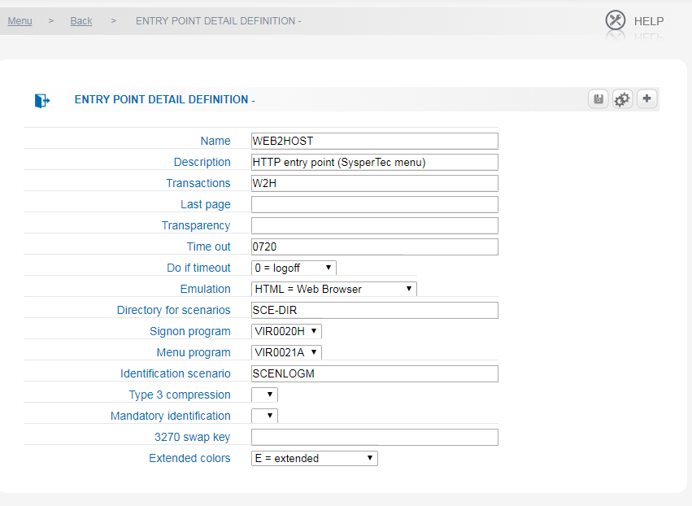
TCT definitions¶
Setting up a Virplex involves two TCTs, one for the ‘READER’ instances and another for the ‘WRITER’ instance. There can be multiple ‘READER’ instances but only one ‘WRITER’ instance.
TCT for ‘READER’ tasks.¶
The TCT for ‘READER’ tasks must have the following TCT definitions:-
VSAMTYP=READONLY, Set Read only. Default = Read/Write
IGNLU=W-HTTP, Disable the Admin line
. . .
UFILE1=(SAMPTRSF,ACBH1,0,10,05), ACBHx fields set accordingly. Note 05
UFILE2=(HTMLTRSF,ACBH2,0,10,05), and not 01.
. . .
ACBH1 ACB AM=VSAM,DDNAME=SAMPTRSF,MACRF=(SEQ,DIR), *
STRNO=3 OUT option removed
ACBH2 ACB AM=VSAM,DDNAME=HTMLTRSF,MACRF=(SEQ,DIR), *
STRNO=3 OUT option removed
TCT for ‘WRITER’ task¶
The TCT for a ‘WRITER’ task must have the following definitions in the TCT.
VSAMTYP=WRITER, Set Writer Instance
IGNLU=C-HTTP, Disable any user line
. . .
UFILE1=(SAMPTRSF,ACBH1,0,10,05), ACBHx fields set to 05 and not 01.
UFILE2=(HTMLTRSF,ACBH2,0,10,05),
. . .
ACBH1 ACB AM=VSAM,DDNAME=SAMPTRSF,MACRF=(SEQ,DIR), *
STRNO=3
ACBH2 ACB AM=VSAM,DDNAME=HTMLTRSF,MACRF=(SEQ,DIR), *
STRNO=3
ARBO definitions¶
To support a Virplex each Virtel instance must be aware of all instances within the Virplex. This internal communication is provide by defining Virtel lines between each instance. These lines are defined in a common ARBO file shared by all members of a Virplex. The communications protocol used between Virplex members is the proprietary QUICKLNK protocol. In the following sample definitions the W-HTTP line is the administration port only available to the ‘WRITER’ task and the common user line, V-HTTP provides the common port for the Virtel instances within the Virplex.
QLNK Line definitions for ‘READER’ instances.~
* QLNK Lines for Virplex Reader tasks.
LINE ID=SPVIRE00,
NAME=SPVIRE00,
LOCADDR=192.168.170.81:41030,
DESC='Virplex READ ONLY instance - SPVIRE00',
TYPE=TCP1,
INOUT=3,
PROTOCOL=QUICKLNK,
TIMEOUT=0000,
ACTION=0,
WINSZ=0000,
PKTSZ=0000,
RETRY=0000
The ID and Name keywords must refer to the instances VTAM ACB name. The address in the LOCADDR must be unique within the Virplex.
QLNK Line definition for ‘WRITER’ instance.
* QLNK Lines for Virplex Writer tasks
LINE ID=SPVIRE99, -
NAME=SPVIRE99, -
LOCADDR=192.168.170.81:41099, SHARED PORT -
DESC='Virplex READ/WRITE instance - SPVIRE99', -
TERMINAL=VX, -
TYPE=TCP1, -
INOUT=3, -
PROTOCOL=QUICKLNK, -
TIMEOUT=0000, -
ACTION=0, -
WINSZ=0000, -
PKTSZ=0000, -
RETRY=0000
The ID and Name keywords must refer to the WRITER’s VTAM ACB name. The address in the LOCADDR must be unique within the Virplex. The WRITER task also requires additional terminal definitions – TERMINAL=VX.
Terminal definitions for ‘WRITER’ instance.
TERMINAL ID=VXLOC000, -
DESC='HTTP terminals (no relay)', -
TYPE=3, -
COMPRESS=2, -
INOUT=3, -
STATS=26, -
REPEAT=0010
Modifications to existing lines will also be required. Assuming that the ‘WRITER’ line will be using line W-HTTP to communicate with the ‘READER’ instances, and the C-HTTP line will be associated with the ‘READER’ instances serving incoming calls, the following changes are required.
Virtel lines for Administration (W-HTTP) and user access (V-HTTP).
In both the V-HTTP and W-HTTP line definitions, the COND=’VIRPLEX-LINE(=VIRTEL=)’ parameter must be added. Here is an example of the revised definition for W-HTTP.
Administration line associated with the ‘WRITER’ task.
* UPDATE W-HTTP WITH COND=
LINE ID=W-HTTP, -
NAME=HTTP-W2H, -
LOCADDR=:41001, -
DESC='HTTP line (entry point WEB2HOST)', -
TERMINAL=DE, -
ENTRY=WEB2HOST, -
TYPE=TCP1, -
INOUT=1, -
COND='VIRPLEX-LINE(=VIRTEL=)', -
PROTOCOL=VIRHTTP, -
TIMEOUT=0000, -
ACTION=0, -
WINSZ=0000, -
PKTSZ=0000, -
RETRY=0010
The user interface line definition, V-HTTP, looks like this:-
*
* User line associated with Virplex VIPA 15.41902 *
*
LINE ID=V-HTTP, -
NAME=HTTP-VPX, -
LOCADDR=192.168.170.15:41902, -
DESC='HTTP line (Entry point VPXWHOST)', -
TERMINAL=VP, -
ENTRY=VPXWHOST, -
COND='VIRPLEX-LINE(=VIRTEL=)',
TYPE=TCP1, -
INOUT=1, -
PROTOCOL=VIRHTTP, -
TIMEOUT=0000, -
ACTION=0, -
WINSZ=0000, -
PKTSZ=0000, -
RETRY=0010
*
Terminal definitions to support user interface on common port 41902.
*
TERMINAL ID=VPLOC000, -
DESC='HTTP terminals (no relay) - V-HTTP', -
TYPE=3, -
COMPRESS=2, -
INOUT=3, -
STATS=26, -
REPEAT=0080
Entry point definition for VPXHOST
*
ENTRY ID=VPXWHOST, -
DESC='HTTP entry point for Virplex line)', -
TRANSACT=VPX, -
TIMEOUT=0720, -
ACTION=0, -
EMUL=HTML, -
SIGNON=VIR0020H, -
MENU=VIR0021A, -
IDENT=SCENLOGM, -
EXTCOLOR=E
Pool definitions
*
TERMINAL ID=VPXIM000, -
RELAY=R+IM000, -
DESC='SCS printers (LUTYPE1) for HTTP', -
TYPE=S, -
COMPRESS=2, -
INOUT=1, -
STATS=26, -
REPEAT=0010
TERMINAL ID=VPXTP000, -
RELAY=R+VT000, -
POOL=*VPXPOOL, -
DESC='Relay pool for HTTP', -
RELAY2=R+IM000, -
TYPE=3, -
COMPRESS=2, -
INOUT=3, -
STATS=26, -
REPEAT=0010
Terminal relay definitions
*
TERMINAL ID=VPVTA000, -
RELAY=*VPXPOOL, -
DESC='HTTP terminals (with relay)', -
TYPE=3, -
COMPRESS=2, -
INOUT=3, -
STATS=26, -
REPEAT=0010
Note the use of the + in the relay names. This will be overwritten with the clone parameter in the startup JCL for the ‘READER’ tasks.
Transaction definitions
These transactions are required to support Virtel and Applications in a Virplex.
* Virtel Internal transactions
TRANSACT ID=VPX-00,
NAME=VPXWHOST,
DESC='Default directory = entry point name',
APPL=VPX-DIR,
TYPE=4,
TERMINAL=VPLOC,
STARTUP=2,
SECURITY=0,
TIOASTA='/w2h/appmenu.htm+applist'
TRANSACT ID=VPX-03W,
NAME='w2h',
DESC='W2H toolkit directory (/w2h)',
APPL=W2H-DIR,
TYPE=4,
STARTUP=2,
SECURITY=0
TRANSACT ID=VPX-03X,
NAME='vpx',
DESC='VPX directory (/vpx)',
APPL=VPX-DIR,
TYPE=4,
STARTUP=2,
SECURITY=0
TRANSACT ID=VPX-03Y,
NAME='yui',
DESC='YUI toolkit directory (/yui)',
APPL=YUI-DIR,
TYPE=4,
STARTUP=2,
SECURITY=0
TRANSACT ID=VPX-90,
NAME='applist',
DESC='List of applications for appmenu.htm',
APPL=VIR0021S,
TYPE=2,
TERMINAL=VPLOC,
STARTUP=2,
SECURITY=1
TRANSACT ID=W2H-80X,
NAME='uplvpx',
DESC='Upload macros (VPX-DIR directory)',
APPL=VIR0041C,
TYPE=2,
TERMINAL=DELOC,
STARTUP=2,
SECURITY=1,
LOGMSG=VPX-DIR
These transactions define the 3270 applications.
- TRANSACT ID=VPX-14,
NAME=TSO, DESC=’Logon to TSO’, APPL=TSO, TYPE=1, TERMINAL=VPVTA, STARTUP=1, SECURITY=1
- TRANSACT ID=VPX-15,
NAME=CICS, DESC=’Logon to CICS’, APPL=SPCICST, TYPE=1, TERMINAL=VPVTA, STARTUP=1, SECURITY=1, TIOASTA=”Signon&/F&*7D4EC9&‘114BE9’&U&‘114CF9’&P&/A”
Sub directory definition for VIR-DIR
*
SUBDIR ID=VPX-DIR,
DESC='Pages for VPXWHOST',
DDNAME=HTMLTRSF,
KEY=VPX-KEY,
NAMELEN=0064,
AUTHUP=X,
AUTHDOWN=X,
AUTHDEL=X
Virplex JCL examples
JCL Procedure for Virplex.
//**********************************************************************
//* DEFAULT PROCEDURE FOR A VIRPLEX TASK *
//**********************************************************************
//VIRPLEX PROC QUAL=&HLQ..VIRT&REL,
// TCT=00, READ ONLY TCT (99 = R/W)
// PROG=VIR6000, PROGRAM TO CALL
// CLONE=00, APPLID=SPVIRE&CLONE
// IP=192.168.170.48 Not Used
//VIRTEL EXEC PGM=&PROG,
// TIME=1440,REGION=0M,
// PARM='&TCT,SPVIRE&CLONE,,&IP,&CLONE'
//STEPLIB DD DSN=&QUAL..LOADLIB,DISP=SHR
//DFHRPL DD DSN=&QUAL..LOADLIB,DISP=SHR
//SERVLIB DD DSN=&QUAL..SERVLIB,DISP=SHR
//* VSAM FILES SHARED
//VIRARBO DD DSN=&QUAL..VIRPLEX.ARBO,DISP=SHR
//SAMPTRSF DD DSN=&QUAL..VIRPLEX.SAMP.TRSF,DISP=SHR
//HTMLTRSF DD DSN=&QUAL..VIRPLEX.HTML.TRSF,DISP=SHR
//* VSAM FILES UNIQUE
//VIRHTML DD DSN=&QUAL..VIRTEL&CLONE..HTML,DISP=SHR
//VIRSWAP DD DSN=&QUAL..VIRTEL&CLONE..SWAP,DISP=SHR
//* NVSAM
//SYSOUT DD SYSOUT=*
//VIRLOG DD SYSOUT=*
//VIRTRACE DD SYSOUT=*
//SYSPRINT DD SYSOUT=*
//SYSUDUMP DD SYSOUT=*
JCL example for Virtel ‘READER’ task 0
//VIRTEL0 JOB 9000,'VIRTEL',CLASS=A,MSGCLASS=X,NOTIFY=&SYSUID
//PROCLIB JCLLIB ORDER=VIRTEL.VIRT460.CNTL
//S01 EXEC VIRTELZ,TCT=00,HLQ=VIRTEL,REL=460,CLONE=00
JCL example for Virtel ‘READER’ task 1
//VIRTEL1 JOB 9000,'VIRTEL',CLASS=A,MSGCLASS=X,NOTIFY=&SYSUID
//PROCLIB JCLLIB ORDER=VIRTEL.VIRT460.CNTL
//S01 EXEC VIRTELZ,TCT=00,HLQ=VIRTEL,REL=460,CLONE=01,
// IP=192.168.170.47
JCL example for Virtel ‘WRITER’ task
//VIRTEL9 JOB 9000,'VIRTEL',CLASS=A,MSGCLASS=X,NOTIFY=&SYSUID
//PROCLIB JCLLIB ORDER=VIRTEL.VIRT460.CNTL
//S01 EXEC VIRTELZ,TCT=99,HLQ=VIRTEL,REL=460,CLONE=99,
// IP=192.168.170.39
VTAM Definitions
VTAM definitions required for Virtel ‘Reader’ task 0. In this example, a separate VTAMLST member would be require for each Virtel instance within the Virplex to support clone values of 00(RO) , 01(RO) and 99(RW). These VTAM definitions could be merged into one member.
VIRTEH00 VBUILD TYPE=APPL
* ------------------------------------------------------------------ *
* Product : VIRTEL *
* Description : Definitions for a VIRTEL VIRPLEX instance *
* ------------------------------------------------------------------ *
SPVIRE00 APPL EAS=160,AUTH=(ACQ,BLOCK,PASS,SPO),ACBNAME=SPVIRE00
* ------------------------------------------------------------------ *
* R00VTxxx : VTAM application relays for VIRTEL Web Access *
* ------------------------------------------------------------------ *
R00VT??? APPL AUTH=(ACQ,PASS),MODETAB=ISTINCLM,DLOGMOD=SNX32702,EAS=1
* ------------------------------------------------------------------ *
* R00IMxxx : Printer relays for VIRTEL Web Access terminals *
* ------------------------------------------------------------------ *
R00IM??? APPL AUTH=(ACQ,PASS),MODETAB=ISTINCLM,DLOGMOD=SCS,EAS=1
R00IP??? APPL AUTH=(ACQ,PASS),MODETAB=ISTINCLM,DLOGMOD=DSILGMOD,EAS=1
TCPIP Changes The TCPIP profile definition requirements for a VIRPLEX are a shared Port address and a common VIPA for the Sysplex Distributor.
Shared Port Example
; SPVIRExx User Range for Virplex
41902 TCP SPVIRE00 SHAREPORT ; Virtel Portshare
41902 TCP SPVIRE01 ; Virtel Portshare
Common VIPA address
; 192.168.170.15 VIPA for SPVIRExx distribution tests
VIPADYNAMIC
VIPARANGE DEFINE MOVEABLE NONDISRUPTIVE 255.255.255.0 192.168.170.20
VIPADEFINE MOVE IMMED 255.255.255.0 192.168.170.15
VIPADISTRIBUTE DEFINE TIMEDAFF 300 DISTMETHOD ROUNDROBIN 192.168.170.15
DESTIP ALL
ENDVIPADYNAMIC
Installation overview to get Virplex up and running.
The following guide is based upon the examples given in this document. Here the objective is to set up three Virtel batch instances, two reader instances (VIRTEL0 and VIRTEL1), and one writer instance, VIRTEL9. The examples used are maintained in the VIRTEL.SAMPLIB. The instances are runs as batch jobs - VIRTEL0(SPVIRE00), VIRTEL1(SPVIRE01) and VIRTEL9(SPVIRE99).
Install Virtel and get base product up and running before attempting any Virplex changes.
SAMPLIB Members: VIRPLEX, VIRTCT00, VIRTCT99, VIRTELZ, VIRTEL00, VIRTEL01, VIRTEL99
Allocate common VSAM libraries and copy the SAMP, ARBO and HTML from existing/installation libraries.
Allocate unique libraries for VIRHTML and VIRSWAP. If you are collecting statistics then VIRSTAT also has to be allocated as is unqiue to each Virtel instance.
Updated you VTAMLST library to support each instance. Each instance will use VTAM resource names based upon the CLONE= keyword in the startup JCL. Activate VTAMLST members.
Customize TCT VIRTCT00 ( Reader TCT). Update license and other details.
Customize TCT VIRTCT99 (Writer TCT). Update license and other details.
Customize the JCL members VIRPLEX, VIRTELZ, VIRTEL00, VIRTEL01 and VIRTEL99
Activate TCPIP changes – V TCPIP,,O,DSN=TCPIP.TCPPARMS(VIRTPROF)
Update the sample VIRPLEX definitions to support your environment.
Run the VIRPLEX job. This will perform the following steps:- Allocate unique VSAM files Allocate shared VSAM files Copy VSAM files from install or “existing” user files. Update the VIRPLEX ARBO with the definitions required to support a Virplex. Assemble to ‘READER’ and ‘WRITER’ TCT’s
Start the ‘WRITER’ task by submitting Job VIRTEL99.
You should see the following messages as the Administration line is activated:-
VIRHT01I HTTP INITIALISATION FOR HTTP-W2H (W-HTTP ), VERSION 4.60
VIRT905I HTTP-W2H SOCKET 00000000 LISTENING 192.168.170.039:41001
VIRHT02I LINE HTTP-W2H (W-HTTP ) HAS URL http://192.168.170.39:41001
VIRHT03I HTTP LINE HTTP-W2H (W-HTTP ), IS A VIRPLEX SERVER WITH VSAMTYP=WRITER
The Administration portal can be access via URL 192.168.170.39:41001. Ignore any CONNECT error messages. This is normal at this stage.
Start the ‘READER’ tasks by submitting jobs VIRTEL00 and VIRTEL01
In the ‘WRITER’ task you should see evidence that the ‘WRITER’ has connected to the ‘READER’ tasks:-
VIRB17AI LINE SPVIRE00 (SPVIRE00), RESTARTED TO ALLOW CONNECTION TO SPVIRE00
VIRQLK9I INITIALISATION FOR SPVIRE00 (SPVIRE00), VERSION 4.60
VIRT907I SPVIRE00 SOCKET 00000000 CALLING 192.168.170.081:41030
VIRQLK8I LOCAL LINE SPVIRE00 (SPVIRE00) IS CONNECTED TO REMOTE VIRTEL : SPVIRE00
VIRQLK9I INITIALISATION FOR SPVIRE01 (SPVIRE01), VERSION 4.60
. . .
VIRB17AI LINE SPVIRE01 (SPVIRE01), RESTARTED TO ALLOW CONNECTION TO SPVIRE01
VIRQLK9I INITIALISATION FOR SPVIRE01 (SPVIRE01), VERSION 4.60
VIRT907I SPVIRE01 SOCKET 00000000 CALLING 192.168.170.081:41031
VIRQLK8I LOCAL LINE SPVIRE01 (SPVIRE01) IS CONNECTED TO REMOTE VIRTEL : SPVIRE01
In the ‘READER’ tasks you should see evidence that the ‘READER ’ has connected to the ‘WRITER’ tasks:-
VIRTEL0 Connecting to the ‘WRITER’ task VIRTEL9 and the other ‘READER’ tasks VIRTEL1
VIRQLK9I INITIALISATION FOR SPVIRE99 (SPVIRE99), VERSION 4.60
VIRT907I SPVIRE99 SOCKET 00000000 CALLING 192.168.170.081:41099
VIRQLK8I LOCAL LINE SPVIRE99 (SPVIRE99) IS CONNECTED TO REMOTE VIRTEL : SPVIRE99
. . .
VIRT905I HTTP-VPX SOCKET 00000000 LISTENING 192.168.170.015:41902
VIRHT02I LINE HTTP-VPX (V-HTTP ) HAS URL http://192.168.170.15:41902
VIRHT03I HTTP LINE HTTP-VPX (V-HTTP ), IS A VIRPLEX SERVER WITH VSAMTYP=READONLY
VIRQLK9I INITIALISATION FOR SPVIRE01 (SPVIRE01), VERSION 4.60
. . .
VIRB17AI LINE SPVIRE01 (SPVIRE01), RESTARTED TO ALLOW CONNECTION TO SPVIRE01
VIRQLK9I INITIALISATION FOR SPVIRE01 (SPVIRE01), VERSION 4.60
VIRT907I SPVIRE01 SOCKET 00000000 CALLING 192.168.170.081:41031
VIRQLK8I LOCAL LINE SPVIRE01 (SPVIRE01) IS CONNECTED TO REMOTE VIRTEL : SPVIRE01
VIRTEL1 Connecting to the ‘WRITER’ task VIRTEL9 and the other ‘READER’ tasks VIRTEL0
VIRQLK8I LOCAL LINE SPVIRE00 (SPVIRE00) IS CONNECTED TO REMOTE VIRTEL : SPVIRE00
VIRT903W LINE SPVIRE01 HAS A SESSION STARTED WITH TCP/IP TCPIP HIGHEST SOCKET
VIRQLK9I INITIALISATION FOR SPVIRE01 (SPVIRE01), VERSION 4.60
VIRT905I SPVIRE01 SOCKET 00000000 LISTENING 192.168.170.081:41031
VIRT903W LINE SPVIRE99 HAS A SESSION STARTED WITH TCP/IP TCPIP HIGHEST SOCKET
VIRQLK9I INITIALISATION FOR SPVIRE99 (SPVIRE99), VERSION 4.60
VIRT907I SPVIRE99 SOCKET 00000000 CALLING 192.168.170.081:41099
VIRQLK8I LOCAL LINE SPVIRE99 (SPVIRE99) IS CONNECTED TO REMOTE VIRTEL : SPVIRE99
VIRT903W LINE HTTP-VPX HAS A SESSION STARTED WITH TCP/IP TCPIP HIGHEST SOCKET
Once the three tasks have initiated you should see no more “CONNECT” error messages. You can test that the tree tasks are communicating by doing a “Line” display:-
F VIRTEL0,LINES
VIR0200I LINES
VIR0201I VIRTEL 4.60 APPLID=SPVIRE00 LINES
VIR0202I INT.NAME EXT.NAME TYPE ACB OR IP
VIR0202I -------- -------- ----- ---------
VIR0202I W-HTTP *GATE
VIR0202I C-HTTP *GATE
VIR0202I SPVIRE00 SPVIRE00 TCP1 192.168.170.81:41030
VIR0202I SPVIRE01 SPVIRE01 TCP1 192.168.170.81:41031
VIR0202I SPVIRE99 SPVIRE99 TCP1 192.168.170.81:41099
VIR0202I V-HTTP HTTP-VPX TCP1 192.168.170.15:41902
VIR0202I ---END OF LIST---
F VIRTEL1,LINES
VIR0200I LINES
VIR0201I VIRTEL 4.60 APPLID=SPVIRE01 LINES
VIR0202I INT.NAME EXT.NAME TYPE ACB OR IP
VIR0202I -------- -------- ----- ---------
VIR0202I W-HTTP *GATE
VIR0202I C-HTTP *GATE
VIR0202I SPVIRE00 SPVIRE00 TCP1 192.168.170.81:41030
VIR0202I SPVIRE01 SPVIRE01 TCP1 192.168.170.81:41031
VIR0202I SPVIRE99 SPVIRE99 TCP1 192.168.170.81:41099
VIR0202I V-HTTP HTTP-VPX TCP1 192.168.170.15:41902
VIR0202I ---END OF LIST---
F VIRTEL9,LINES
VIR0200I LINES
VIR0201I VIRTEL 4.60 APPLID=SPVIRE99 LINES
VIR0202I ALLOCATED IP ADDRESS = 192.168.170.39
VIR0202I INT.NAME EXT.NAME TYPE ACB OR IP
VIR0202I -------- -------- ----- ---------
VIR0202I C-HTTP *GATE
VIR0202I V-HTTP *GATE
VIR0202I SPVIRE00 SPVIRE00 TCP1 192.168.170.81:41030
VIR0202I SPVIRE01 SPVIRE01 TCP1 192.168.170.81:41031
VIR0202I SPVIRE99 SPVIRE99 TCP1 192.168.170.81:41099
VIR0202I W-HTTP HTTP-W2H TCP1 :41001
VIR0202I ---END OF LIST---
If the displays match those above then the VIRPLEX has initialized successfully.
Validating the Virplex
Logon to Virtel using the common URL 192.168.170.15:41902. You should be presented with the Applist screen showing the two 3270 applications defined in the common ARBO.

The top right hand corner will identify the ‘READER’ instance support this session. In this example this is Virtel instance VIRTEL1 (SPVIRE01)

On a separate machine, one with a different IP address, logon again to Virtel using the same URL. This time, if the Sysplex Distributor is working in a “round robin” fashion, it will allocate a different ‘READER’ instance. Here is the sample of a second browser session, this time using Chrome, allocating a Virtel session on Virtel instance VIRTEL0 (SPVIRE00).
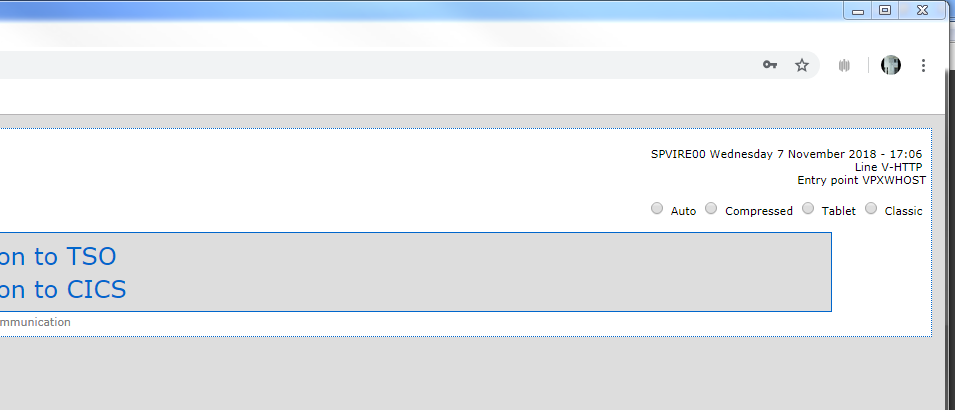
At this point validation of the Virplex is confirmed.
Testing QLNK communication.
To test that the Virtels are communicating, maintenance will be uploaded via the ‘WRITER’ task. The ‘WRITER’ task will distributed this to the two ‘READER’ tasks. Connect to the TSO application to determine the current maintenance level.

Is shows as UPDT level V4.60 / 5687. Confirm this with the Administration Portal on the ‘WRITER’ task by accessing the ‘Admin Portal’ through the ‘WRITER’ URL 192.168.170.39:41001. The maintenance level is shown in the Middle of the Tool Bar area on the screen:-

This confirms that both the ‘WRITER’ and ‘READER’ instances had loaded the SAMP TRSF file. Using the “Drag and Drop” feature upload some maintenance to the W2H-DIR file. In this example the maintenance level TP 5695 is uploaded via the ‘WRITER’ instance VIRTEL9(SPVIRE99). A refresh of the browser (CTRL+UP+DEL + CTRL+R) now shows the maintenance level to be 4.60 (5695):-
If a new browser window is opened on another machine, and TSO is accessed through the common URL / APPLIST navigation, the maintenance level has changed to V4.60 UPDT 5695:-

This confirms that the ‘WRITER’ and ‘READER’ tasks are communicating and the automatic distribution of maintenance out to ‘READER’ task environments is working. The following traces on the ‘WRITER’ task show that the ‘WRITER is communicating with ‘READER’ tasks:-
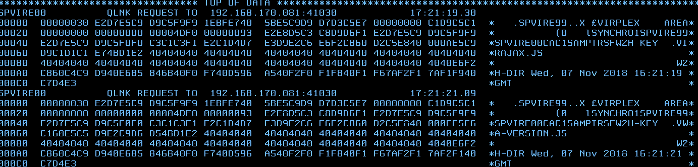
Diagnosing Virplex issues
1. Issue a trace command on the writer task to trace all QLNK lines. In this example the following commands would be issued:-
F VIRTEL9,TRACE,L=SPVIRE00
F VIRTEL9,TRACE,L=SPVIRE01
F VIRTEL9,TRACE,L=SPVIRE99
2. Perform some Virplex activing – upload some maintenance for example.
3. Issue a line display for each Virplex instance.
F VIRTELx,LINES
4. Take a Virtel SNAP of the ‘Writer’ task.
F VIRTEL9,SNAP
5. Obtain the Virtel logs from the ‘Writer’ task and the one of the ‘READER’ tasks.
Open a problem with your local Syspertec Support Engineer and send them the output plus a description of the problem you experienced.
Protecting business assets with Virtel Rules¶
Introduction¶
In this chapter we discuss how to protect access to business assets using Virtel rules. In this scenario with have two types of business assets or applications. The first type is the production assets which are protected by LDAP and use SSO to facilitate security and automatic logon without the user having to specify a userid and password. The other type of business asset is a standard application, like TSO or CICS, which requires the user to enter a userid and password when the application is accessed. LDAP and SSO are not discussed in this newsletter. There may be alternatives to this SSO setup but for our scenario we are assuming two types of asset – secure (requiring no application logon) and insecure (application logon required). The scenario utilizes a proxy server to load balance across the Virtel instances.

Virtel Setup¶
From a Virtel perspective it has been decided that secure assets are associated with port 41002, and non-secure through port 41003. Access to the assets should only be through the proxy server using a secure port, in our case the standard SSL port 443. Our goal is to protect the assets from being accessed internal, or external, using the assigned Virtel IP and port addresses. For example, users in the accounts department should be able to access PROD IMS/CICS. Other users, who work offsite or from home, and have access to the company VPN shouldn’t be able to access PROD IMS/CICS. In this simplistic scenario, anyone could in theory could access any one of the Virtel instances through their internal IP address – 192.168.07x.10x:4100x and attempt to logon. What is required is means to guarantee that access to any of the assets should only be via the proxy server and not through any other IP address.
Virtel Rules¶
Using Virtel Rules we can compare the calling IP address and if it doesn’t match with the rule then the user will be re-directed to another Virtel entry point. To implement this protection we use the following ARBO statements for each line, 41002 and 41003:-
RULE ID=R0000100,
RULESET=C-HTTP, < Our Line 41002
STATUS=ACTIVE,
DESC='HTTP access (Test calling address)',
ENTRY=EPSEC, < Associated Entry point
IPADDR=(EQUAL,192.168.092.160), < IP address of Proxy
NETMASK=255.255.255.255
*
RULE ID=R0000199,
RULESET=C-HTTP, < Our Line 41002
STATUS=ACTIVE,
DESC='HTTP access (Calling IP address not valid)',
ENTRY=EPREJECT
*
RULE ID=R0000200,
RULESET=R-HTTP, < Our Line 41003
STATUS=ACTIVE,
DESC='HTTP access (Test calling address)',
ENTRY=EPSEC, < Associated Entry point
IPADDR=(EQUAL,192.168.092.160), < IP address of Proxy
NETMASK=255.255.255.255
*
RULE ID=R0000299,
RULESET=R-HTTP, < Our Line 41003
STATUS=ACTIVE,
DESC='HTTP access (Calling IP address not valid)',
ENTRY=EPREJECT
ENTRY ID=EPREJECT,
DESC='Entry point for unauthorized HTTP users',
TRANSACT=REJ,
TIMEOUT=0720,
ACTION=0,
EMUL=HTML,
SIGNON=VIR0020H,
MENU=VIR0021A,
EXTCOLOR=X
*
TRANSACT ID=REJ-00,
NAME=EPREJECT,
DESC="Default directory = entry point name",
APPL=CLI-DIR, < User template directory
TYPE=4,
TERMINAL=CLLOC,
STARTUP=2,
SECURITY=0
So what is happening here? When a user attempts to establish a session Virtel will match the users calling IP address against the IPADDR in rule R0000x00. If it matches then they will be able to access the entry point defined in the rule – in this case EPSEC or EPNSEC. For line 41002 this Entry Point will contain a list of the W2H applications using SSO. For line 41003, using Entry Point EPNSEC, this will contain a list of W2H transactions which use standard RACF protection.
Now, if the calling IP addressed is not matched, the RULE fails and the next rule in the ruleset is tested, in this case rule R0000x99. This is a catch all rule. Any user falling into this rule will be directed to entry point EPREJECT. The Entry Point EPREJECT only has one transaction, its default transaction, and this will invoke the template page EPREJECT.HTM.
To protect the business assets the calling IP address can only be that of the proxy server - 192.168.092.160. Any other calling IP address will be rejected by the Virtel ruleset. By default, the ruleset associated with a line is normally the internal name of the line – C-HTTP for example. How the rejected session is handled depends on how Virtel has been setup.
Default Rule Template¶
In the following example, the default template EPREJECT.HTM, which is associated with the entry point EPREJECT, looks like this:-
<!DOCTYPE HTML PUBLIC "-//W3C//DTD HTML 4.01 Transitional//EN"
"http://www.w3.org/TR/html4/loose.dtd">
<!--VIRTEL start="{{{" end="}}}" -->
<html>
<script>
// customization for reject
window.location.replace("http://www.mycompany.com");
</script>
</html>
This template must exist in the CLI-DIR directory as this is where the Entry Point EPREJECT expects to find them. When the template is served it will display the companies “public” web site.
To upload the ARBO statements to your ARBO use the following JCL:-
//*
// SET LOAD=HLQ.VIRTNNN.LOADLIB
// SET ARBO=HLQ.VIRTEL.ARBO1A
//*
//DELETE EXEC PGM=VIRCONF,PARM='LOAD,NOREPL',REGION=2M
//STEPLIB DD DSN=&LOAD,DISP=SHR
//SYSPRINT DD SYSOUT=*
//SYSUDUMP DD SYSOUT=*
//VIRARBO DD DSN=&ARBO,DISP=SHR
//SYSIN DD *
DELETE TYPE=RULE,ID=R0000100 Delete rule
DELETE TYPE=RULE,ID=R0000199 Delete rule
DELETE TYPE=RULE,ID=R0000200 Delete rule
DELETE TYPE=RULE,ID=R0000299 Delete rule
DELETE TYPE=ENTRY,ID=EPREJECT Entry point
DELETE TYPE=TRANSACT,ID=REJ-00 Delete transaction
*
//CONFIG EXEC PGM=VIRCONF,PARM='LOAD,NOREPL',REGION=2M
//STEPLIB DD DSN=&LOAD,DISP=SHR
//SYSPRINT DD SYSOUT=*
//SYSUDUMP DD SYSOUT=*
//VIRARBO DD DSN=&ARBO,DISP=SHR
//SYSIN DD *
RULE Definitions
/*
Appendix¶
Trademarks¶
SysperTec, the SysperTec logo, syspertec.com and VIRTEL are trademarks or registered trademarks of SysperTec Communication Group, registered in France and other countries.
IBM, VTAM, CICS, IMS, RACF, DB2, MVS, WebSphere, MQSeries, System z are trademarks or registered trademarks of International Business Machines Corp., registered in United States and other countries.
Adobe, Acrobat, PostScript and all Adobe-based trademarks are either registered trademarks or trademarks of Adobe Systems Incorporated in the United States and other countries.
Microsoft, Windows, Windows NT, and the Windows logo are trademarks of Microsoft Corporation in the United States and other countries.
UNIX is a registered trademark of The Open Group in the United States and other countries. Java and all Java-based trademarks and logos are trademarks or registered trademarks of Oracle and/or its affiliates.
Linux is a trademark of Linus Torvalds in the United States, other countries, or both.
Other company, product, or service names may be trademarks or service names of others.